序 本书的结构与用途
本书把国际政治与国际政治经济学的量化研究拆成两部分，即可操作的方法与可模仿的案例。目标读者是刚进入大学、尚未系统学过统计学的学生，也供需要查找方法范本的研究者检索。书中假定读者知道均值与百分比的含义，其余概念均在首次出现处交代。
全书分四部分：方法阶梯、七个专题、案例阶梯、实务与文献。
第一部分为方法阶梯，含第 1 章至第 7 章；前六章从条件期望讲到双向固定效应、工具变量与断点回归。第 7 章补入合成控制、份额移动、异质性稳健的双重差分、网络模型与机器学习。七章的顺序即难度的顺序，每章只增加一类外部信息；
第二部分为七个专题，含第 8 章至第 14 章；七章依次是地理与基础设施、冲突与政治暴力、制裁与经济治国、国际制度与援助、网络与依赖、气候与迁移、测量与机器学习。每个专题分两半：前半为综述，交代这一组文献共同面对的因果难题与常见解法。后半为文献拆解，每篇不少于一千五百字，按问题意识、数据边界、变量构造、方法理由、方程符号、论证链条、稳健性与争议的顺序展开，并对公式中的每个符号给出取值与作用。
第三部分为案例阶梯，即第 15 章；八个案例按难度排列，第一个只需横截面回归，第八个需要把聚合层级写进模型。第四部分为实务与文献，含第 16 章的数据流水线与常见错误，以及第 17 章的文献题录。
以下三种读法均成立。
- 按章序通读，适用于零基础的读者。
- 先读第 15 章的某一案例，再回到对应专题，适用于已有具体题目的读者。
- 只查方法与文献，适用于把本书当作工具书的读者。
配套的 vault-v2 目录存放一百张文献卡片，每张含七节正文与双向链接。
1最小的统计工具箱
本章只交代后续反复使用的几个概念，这些概念在任意一本初等统计教材中都有完整推导，此处压缩到能读懂公式的程度。读者若对某一项感到陌生，先记住定义式的形状，读到第五章再回头对照。
1.1 观测、变量、样本
针对一项实证研究，研究者要做的事只有一件：把世界压缩成一张表；表的每一行称为一个观测（observation），每一列称为一个变量（variable）；行与列的交叉格子里填一个数或一个类别。
据定义，样本（sample）是若干观测的集合，总体（population）是研究者真正想谈论的全部对象；样本与总体之间的差距不来自计算错误，而来自抽样本身，这种差距称为抽样误差。
1.2 均值、方差、标准误
对于一列取值为 $x_1,\dots,x_n$ 的变量，均值刻画中心位置，方差刻画离散程度；两者的定义式分别为下式中的两个等式。
| 符号 | 读法 | 含义 |
|---|---|---|
| $x_i$ | 艾克斯 i | 第 $i$ 个观测的变量取值 |
| $n$ | 恩 | 观测个数，即表中的行数 |
| $\bar x$ | 艾克斯拔 | 样本均值，等于全部取值相加后除以个数 |
| $s^2$ | 艾斯平方 | 样本方差，衡量取值围绕均值散布的幅度 |
| $i$ | 艾 | 观测的编号，从 1 到 $n$ |
由方差可以定义标准误（standard error），记作 $\mathrm{se}$；它衡量的是「如果把整项研究重做一遍，估计出来的均值会跳动多大」；样本越大，跳动越小，两者按样本量的平方根成反比。
此式的实际含义值得记住；样本量翻四倍，标准误才缩小一半，这也是为什么增加观测数量的边际收益递减得很快。
1.3 回归就是条件期望
对于两个变量 $Y$ 与 $D$，研究者最常估计的是下面这个式子；此式称为简单线性回归（simple linear regression）。
| 符号 | 含义 | 在社会科学中的典型对象 |
|---|---|---|
| $Y_i$ | 结果变量（outcome） | 夜光强度、家庭消费、冲突事件数 |
| $D_i$ | 处理变量或解释变量（treatment） | 是否通电、是否通公路、矿价暴露度 |
| $\alpha$ | 截距（intercept） | 当 $D=0$ 时 $Y$ 的平均水平 |
| $\beta$ | 斜率（slope），即核心待估参数 | $D$ 增加一个单位时 $Y$ 的平均变化 |
| $\varepsilon_i$ | 误差项（error term） | 所有未写进方程、且影响 $Y$ 的因素之和 |
由最小二乘法可以解出 $\beta$ 的估计值，其形式如下：据该式，回归系数等于协方差除以处理变量的方差，这个形状在第五章会反复出现。
更重要的读法是；$\beta$ 回答的是「在 $D$ 上相差一个单位的两组观测，其 $Y$ 的平均差距是多少」，这种「固定其他量之后看平均差距」的表述，正式名称是条件期望（conditional expectation），记作 $E[Y\mid D]$。
1.4 p 值与置信区间
针对估计值 $\hat\beta$，研究者通常报告两项附属数字；第一项是标准误 $\mathrm{se}(\hat\beta)$，第二项是由标准误构造的置信区间。
式中 $\mathrm{CI}_{95}$ 读作九十五个百分点置信区间；对此式的解释需要谨慎；置信区间的含义是重复抽样下的覆盖概率，并非「参数落在此区间的概率」。在写作中，更稳妥的表述是「数据与零效应相容的程度」。当置信区间不包含零时，习惯上称结果「统计显著」。
1.5 一项研究的五个构件
据后续各章的用法，任何一项地理信息实证研究都可以拆成五个构件；第三构件是识别，也是全书的重心。
| 构件 | 要回答的问题 | 对应章节 |
|---|---|---|
| 观测单元 | 一行代表什么？村庄、县、网格，还是国家对？ | 第 2 章 |
| 变量构造 | 结果与处理各自如何从原始地理数据算出来？ | 第 6 章 |
| 识别策略 | 凭什么说这是因果，而不是相关？ | 第 3、4、5 章 |
| 推断 | 标准误如何计算，空间相关如何处理？ | 5.7 节 |
| 稳健性 | 换带宽、换分辨率、换对照，结论还成立吗？ | 第 7、10 章 |
2观测单元：从点到关系边
社会科学使用地理信息的第一步，是把地理对象转换成可以进回归表的行列。地理对象只有三种基本形态，这三种形态决定了数据处理的全部后续步骤。
2.1 四种基本对象
| 形态 | 几何表示 | 社会科学中的实例 | 对应的经典文献 |
|---|---|---|---|
| 点 | 一对经纬度 | 村庄、矿点、水电站、冲突事件 | Dell 2010；Berman 等 2017 |
| 线 | 一串有序坐标构成的折线 | 公路、铁路、国界、河流 | Faber 2014；Donaldson 与 Hornbeck 2016 |
| 面 | 闭合多边形或栅格单元 | 县、族群家园、零点五度网格 | Michalopoulos 与 Papaioannou 2013；Tollefsen 等 2012 |
三种形态之间可以互相转换；点进面（point-in-polygon）把点归入多边形，缓冲区（buffer）把线膨胀成面，栅格化（rasterization）把多边形切成等面积方格。每一次转换都会改变观测单元，也就会改变回归结果。
2.2 把地理写进表格：三个下标
地理数据一旦进入回归，通常会带上三个下标；第一个是空间单元，第二个是时间，第三个是更高层的分组；下式给出最常见的面板（panel）形式。
| 符号 | 含义 | 举例 |
|---|---|---|
| $i$ | 空间单元编号 | 第 $i$ 个村庄或第 $i$ 个网格 |
| $g$ | 空间单元所属的高层分组 | $i$ 所属的县或族群聚居区 |
| $t$ | 时间下标 | 年份或月份 |
| $D_{gt}$ | 处理变量，随分组与时间变化 | 该县在第 $t$ 年是否被高速公路连接 |
| $X_{igt}$ | 控制变量向量 | 地形坡度、到海岸距离、人口密度 |
| $\mu_i$ | 空间单元固定效应 | 吸收该单元所有不随时间变化的特征 |
| $\lambda_t$ | 时间固定效应 | 吸收所有单元共有的年度冲击 |
固定效应（fixed effect）的作用可以概括为一句话；它把某一维度的全部差异整体扣除，只留内部变动；$\mu_i$ 一旦进入方程，同一单元内部不变的地形、气候与历史就全部被吸收；研究者不再需要为这些变量寻找代理。
2.3 距离的三种算法
距离是地理数据中最常被构造的变量，也是最容易被误用的变量；按精度从低到高，共有三种算法。
| 算法 | 适用场景 | 主要问题 |
|---|---|---|
| 平面欧氏距离 | 范围小、已投影到等距坐标系 | 跨纬度使用时严重失真 |
| 球面大圆距离 | 跨国家、跨大陆 | 忽略地形与交通网络 |
| 路网最短路 | 研究可达性、运输成本 | 需要路网矢量，计算量大 |
球面大圆距离由下式计算；此式称为半正矢公式（haversine formula），在几乎所有地理信息软件中都是默认实现。
| 符号 | 含义 | 单位或取值 |
|---|---|---|
| $d$ | 两点间的大圆距离 | 千米 |
| $R$ | 地球平均半径 | 约 6371 千米 |
| $\varphi_1,\varphi_2$ | 两点的纬度，取弧度 | −π/2 到 π/2 |
| $\Delta\varphi$ | 两点纬度之差 | 弧度 |
| $\Delta\lambda$ | 两点经度之差 | 弧度 |
三个步骤可以拆开看。
- ，把经纬度由角度换算成弧度。
- ，按上式算出中心角。
- ，中心角乘以地球半径，得到弧长。
2.4 分辨率与可变面元问题
把连续的地理现象切割成离散单元时，切割方式本身会影响估计结果，这个现象称为可变面元问题（modifiable areal unit problem），简称 MAUP。
它有两个组成部分：第一是尺度效应；把数据聚合到县与聚合到网格，得到的相关系数不同。第二是分区效应；同样大小的单元，边界划在哪里也会改变结果；近期文献已经把这一问题写成显式的模型参数，而不再当作数据处理细节Fiaschi 等（2026）。
3相关为什么不足以回答因果
据第 1 章的回归框架，$\hat\beta$ 衡量的只是两组观测的平均差距；要把这个差距读成因果效应，需要额外条件；本章说明缺少这些条件时会发生什么。
3.1 潜在结果
因果推断的现代框架建立在潜在结果（potential outcomes）之上；对第 $i$ 个观测，设想两个可能的世界；接受处理的世界与不接受处理的世界。
| 符号 | 含义 | 说明 |
|---|---|---|
| $Y_i(1)$ | 接受处理时的潜在结果 | 只在一个世界里被观测到 |
| $Y_i(0)$ | 不接受处理时的潜在结果 | 另一个世界里才被观测到 |
| $D_i$ | 实际是否接受处理 | 取值 0 或 1 |
| $Y_i$ | 实际观测到的结果 | 等于两个潜在结果中被选中的那一个 |
个体层面的因果效应是 $Y_i(1)-Y_i(0)$，这个量永远无法直接观测，因为同一个人不可能同时处于两个世界，因果推断的全部技术，都是在对这个不可观测量做有条件的替代。
最常用的替代目标是平均处理效应（average treatment effect），记作 ATE。
把 ATE 与可观测的平均差距联系起来，需要分解；分解的结果如下式；右端第一项 $\mathrm{raw}$ 为可观测的平均差距，第二项 $\mathrm{causal}$ 为因果效应，第三项 $\mathrm{sel}$ 为选择偏差（selection bias）。
3.2 三种偏差的来源
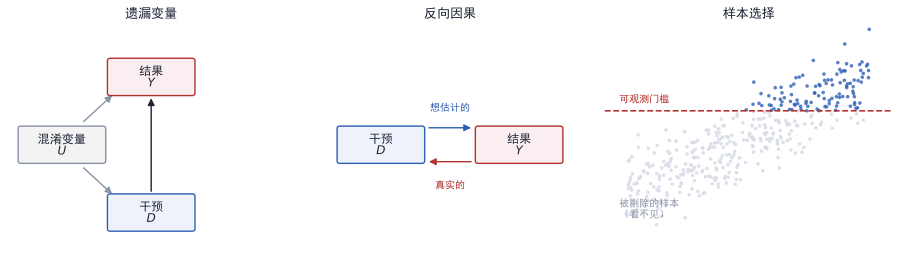
| 偏差 | 结构 | 地理研究中的实例 |
|---|---|---|
| 遗漏变量（omitted variable） | 某个未观测因素同时影响处理与结果 | 修路的地方本来就更靠近市场 |
| 反向因果（reverse causality） | 结果反过来影响处理 | 经济活跃的地区更容易争取到电网投资 |
| 样本选择（selection） | 能否进入样本本身与结果相关 | 冲突太激烈的地区没有调查数据 |
遗漏变量的方向可以用一个方程刻画；设真实模型含有未观测因素 $U$，而研究者估计的模型遗漏了它。
| 符号 | 含义 | 如何影响结论 |
|---|---|---|
| $\beta$ | 真实的因果效应 | 研究者想估计的量 |
| $\gamma$ | $U$ 对 $Y$ 的影响强度 | 越大，偏差越大 |
| $\operatorname{Cov}(D,U)$ | 处理与未观测因素的相关 | 为零时偏差消失 |
| $\xrightarrow{\ p\ }$ | 依概率收敛 | 样本趋于无穷时的极限 |
此式提供了一条判别标准；只要 $\operatorname{Cov}(D,U)\neq 0$，再大的样本量也无法消除偏差，这与抽样误差不同，后者会随样本增大而消失。第五章的每一种识别策略，本质都在用某种外部信息把这一个协方差压到零。
3.3 有向无环图
把变量之间的因果关系画成箭头，得到的图称为有向无环图（directed acyclic graph），简称 DAG；图上最重要的判别法则是后门准则（backdoor criterion）。
据后门准则，要估计 $D$ 对 $Y$ 的效应，需要找到一组变量，这组变量须阻断 $D$ 与 $Y$ 之间所有「带箭头的汇入路径」，同时不阻断 $D$ 到 $Y$ 的正向路径。在图 3.1 左图中，控制 $U$ 就满足后门准则。在中图中，任何控制都无法挽回，必须改变研究设计。
4识别策略的六个族
据第 3 章的偏差公式，识别的全部工作是用外部信息把处理与未观测因素之间的协方差压到零。压到零的手段只有有限的几种，这些手段构成本章的六个族。六个族不是互斥的选项，而是可以叠加的组件；
4.1 谱系表
| 族 | 核心假设 | 外部信息的来源 | 本库代表文献 |
|---|---|---|---|
| 一 断点 | 断点两侧除处理之外的一切连续 | 一条画在地图上的线 | G02 Dell 2010；G07、G08 Michalopoulos 与 Papaioannou；G10 Ahlfeldt 等 2015 |
| 二 差分 | 无处理时两组走平行路径 | 工程分期、政策实施时点 | G11 Asher 与 Novosad 2020；G12 Burgess 等 2015；G13 Jedwab 与 Moradi 2016；G06 Banerjee 等 2020 |
| 三 工具变量 | 工具只通过处理影响结果 | 地形、气象、历史规划图 | G05 Faber 2014；G04 Baum-Snow 2007；G09 Dinkelman 2011；G14 Lipscomb 等 2013；C03 Miguel 等 2004 |
| 四 格内冲击 | 格子固定效应吸收全部地理特征 | 全球价格与本地禀赋的乘积 | C09 Berman 等 2017；G16 Hodler 与 Raschky 2014 |
| 五 代理测量与正交化 | 代理误差与真实值无关，或可被交叉拟合剔除 | 卫星影像、手机元数据 | G01 Henderson 等 2012；F05 Jean 等 2016；F11 Ratledge 等 2022；F01 Chernozhukov 等 2018 |
| 六 关系结构 | 观测之间的依赖本身是研究对象 | 网络普查、双边流量矩阵 | N04 Cranmer 与 Desmarais 2011；N09 Cranmer 等 2012；N11 Ward 等 2013；N02 Banerjee 等 2013 |
4.2 按外生变动的来源选择
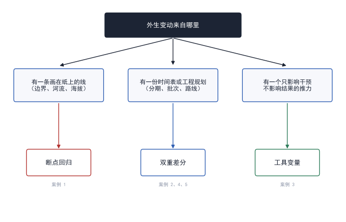
据图 4.1，判断的起点是研究者手上究竟掌握了哪一类外生信息；先看数据里有什么，再决定用哪种方法，顺序不能颠倒。常见的新手错误是先选定方法，再去凑数据，结果是假设无法成立。
4.3 每一族的一句话逻辑
族一 断点
据这一族的逻辑，在一条边界或阈值附近，两侧的地理条件差异很小；制度身份或政策归属在边界上突然改变，于是两侧结果的落差可以归因于这个突然改变；代表文献是 Dell（2010）对秘鲁米塔边界的使用。
族二 差分
据这一族的逻辑，把同一组观测在政策前后的变化，减去对照组在同一时段的变化。共同的时间趋势与固定的地区差异在相减中被抵消；代表文献是 Faber（2014）对中国国道主干线的处理。
族三 工具变量
据这一族的逻辑，找一个影响处理但不直接影响结果的变量，用它的变动代替处理变量的变动。地形坡度、河流落差、历史规划图是最常用的一类工具；代表文献是 Lipscomb 等（2013）对巴西水电站地形选址的使用。
族四 格内冲击
据这一族的逻辑，把世界切成一万多个网格，每格放一个固定效应；格子的经纬度、地形、气候与禀赋随即被吸收。此时只剩格子内部的随时间变动可用，若把全球价格与本地矿产禀赋相乘，这个乘积的变动就是外生的；代表文献是 Berman 等（2017）。
族五 代理测量与正交化
据这一族的逻辑，经济学量常常无法直接观测，只能用卫星信号代理；代理带来测量误差，而测量误差会把系数拉向零，若误差的方差可以估计，就可以把系数修正回来；代表文献是 Henderson 等（2012）与 Ratledge 等（2022）。
族六 关系结构
据这一族的逻辑，当观测是行为体之间的边而不是行为体本身时，独立性假设失效，此时需要把整张图当作一个观测，用图的整体特征建立似然函数；代表文献是 Cranmer 与 Desmarais（2011）。
4.4 族的叠加
据本库文献的实际做法，多数研究同时使用两到三个族；下表列出四种常见的叠加方式，这些叠加各自解决一个具体的威胁。
| 叠加 | 解决的威胁 | 文献实例 |
|---|---|---|
| 差分 ＋ 工具变量 | 政策落点的选择偏差 | Faber 2014；Baum-Snow 2007 |
| 断点 ＋ 固定效应 | 边界位置本身与经济潜力相关 | Michalopoulos 与 Papaioannou 2014 |
| 格内冲击 ＋ 三重差分 | 全国性冲击与本地禀赋的混淆 | Berman 等 2017；Hodler 与 Raschky 2014 |
| 代理测量 ＋ 正交化 | 结果变量由模型生成所引入的过拟合 | Ratledge 等 2022 |
5六组核心公式的逐字讲解
本章的写法固定为四步；第一步给出公式本体，第二步逐字符说明每个符号。第三步把公式拆成可手工执行的动作，第四步指出它在文献中的具体形态。读者应当把每一个符号都对应到一张真实的表格或一列真实的变量；
5.1 面板回归与固定效应
据 2.2 节的下标约定，双向固定效应模型写成下式，这是全书出现频率最高的一个方程。
| 符号 | 含义 | 维数 | 文献实例 |
|---|---|---|---|
| $y_{it}$ | 单元 $i$ 在 $t$ 期的结果变量 | 标量 | 该县当年的夜光对数 |
| $D_{it}$ | 单元 $i$ 在 $t$ 期的处理变量 | 标量 | 该县当年是否已通高速公路 |
| $\alpha$ | 全体共有的截距 | 标量 | 基准水平 |
| $\beta$ | 核心待估参数 | 标量 | 通车对夜光的影响 |
| $X_{it}$ | 控制变量构成的列向量 | $K\times 1$ | 坡度、到海岸距离、人口密度 |
| $\gamma$ | 控制变量对应的系数向量 | $K\times 1$ | 通常不是研究兴趣所在 |
| $\mu_i$ | 单元固定效应 | $N$ 个 | 吸收不随时间变化的一切 |
| $\lambda_t$ | 时间固定效应 | $T$ 个 | 吸收全国性年度冲击 |
| $\varepsilon_{it}$ | 误差项 | 标量 | 与 $D$ 无关时 $\beta$ 可识别 |
把公式拆成三步
- 去单元均值。对每个单元，把该单元所有年份的 $y$ 与 $D$ 各减去自身的时间平均值，这一步消掉了 $\mu_i$。
- 去时间均值。对每一年，把上一步得到的量减去该年的横截面平均值，这一步消掉了 $\lambda_t$。
- 在剩下的残差上做普通回归。此时 $\beta$ 的估计量等于残差的协方差除以残差的方差，与式 (1.3) 的形状完全一致。
上述第一步在计量经济学中称为组内变换（within transformation）；固定效应模型与「先做差分再回归」在数学上等价，两者的区别只在实现的数值稳定性。
5.2 双重差分与事件研究
据族二的逻辑，最简单的情形只有两组与两期，此时处理效应的估计量是四格平均值的组合。四格分别对应处理组与对照组在干预前与干预后的平均结果，下标记作 post 与 pre。
| 符号 | 含义 | 如何从数据得到 |
|---|---|---|
| $T$ | 处理组（treated） | 被政策覆盖的单元集合 |
| $C$ | 对照组（control） | 未被政策覆盖的单元集合 |
| $\bar y_{T,\mathrm{post}}$ | 处理组在干预后的平均值 | 筛选后取均值 |
| $\bar y_{T,\mathrm{pre}}$ | 处理组在干预前的平均值 | 同上 |
| $\bar y_{C,\mathrm{post}},\bar y_{C,\mathrm{pre}}$ | 对照组在两个时点的平均值 | 同上 |
| $\hat\beta_{\mathrm{DID}}$ | 双重差分估计量 | 括号内两项相减 |
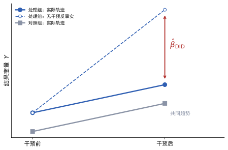
把两组两期推广到多组多期，写成回归形式更为方便；下式中的交互项系数就是双重差分估计量。
此式的关键在于交互项；仅 $D_i$ 会被 $\mu_i$ 吸收，仅 $\mathrm{Post}_t$ 会被 $\lambda_t$ 吸收，唯一留下的是两者的乘积，也就是「处理组在干预之后」这一特定组合。
把干预时点按相对年份展开，得到事件研究（event study）形式；此形式用于检验共同趋势是否成立。
| 符号 | 含义 | 取值范围 |
|---|---|---|
| $E_i$ | 单元 $i$ 接受处理的年份 | 整数年份 |
| $k$ | 相对年份，即距干预的年数 | 通常取 −4 到 +5 |
| $\mathbf{1}[\cdot]$ | 指示函数，括号内为真取 1，否则取 0 | 0 或 1 |
| $\beta_k$ | 相对第 $k$ 年的效应 | 待估参数，$k=-1$ 为基准组故省略 |
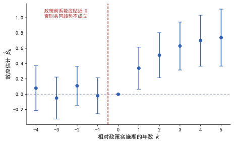
5.3 工具变量与两阶段最小二乘
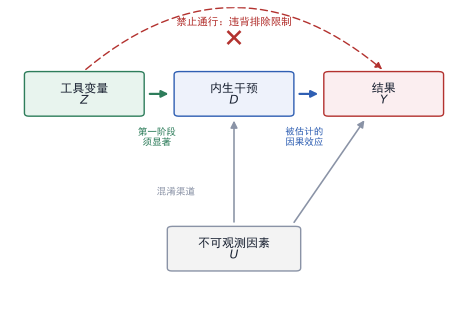
据族三的逻辑，工具变量估计量是两个协方差之比，这个式子是全部工具变量方法的定义式；式中 $\hat\beta_{\mathrm{RF}}$ 为简约式系数，$\hat\beta_{\mathrm{FS}}$ 为第一阶段系数。
| 符号 | 含义 | 文献实例 |
|---|---|---|
| $Z$ | 工具变量（instrument） | 河流落差；地形坡度；历史规划线路 |
| $\operatorname{Cov}(Z,D)$ | 工具与处理的相关，称为第一阶段（first stage） | 落差越大，越可能建水电站 |
| $\operatorname{Cov}(Z,Y)$ | 工具与结果的相关，称为简约式（reduced form） | 落差越大，夜光越亮 |
| $\hat\beta_{\mathrm{IV}}$ | 工具变量估计量 | 把简约式按第一阶段缩放 |
两阶段最小二乘（two stage least squares）是同一件事的回归实现；第一步用工具预测处理，第二步用预测值代替处理进入结果方程。
把两步的式子代入式 (5.4)，可以验证两个估计量在恰好识别时完全相等。当工具个数多于内生变量个数时，称为过度识别，此时须做过度识别检验；
工具变量估计的系数并非对全体的平均效应；当效应存在异质性时，它只对应一个特定的子群体；式中 $C$ 为依从者指示变量，取 1 表示该单元的处理状态随工具变动而改变。
| 符号 | 含义 | 为什么重要 |
|---|---|---|
| $\beta_{\mathrm{LATE}}$ | 局部平均处理效应（local average treatment effect） | 工具变量识别的真实对象 |
| $C=1$：依从者（complier） | 工具变动时其处理状态随之改变的单元 | 估计量只描述这一群体 |
| 永远接受者 | 无论工具如何都接受处理的单元 | 不贡献识别信息 |
| 永远拒绝者 | 无论工具如何都不接受处理的单元 | 同上 |
三个条件构成工具变量的全部要求；第一个是相关性；$\operatorname{Cov}(Z,D)\neq 0$，可以用第一阶段 F 统计量检验；第二个是排除限制。$Z$ 只通过 $D$ 影响 $Y$，无法用数据检验，只能靠制度知识与论证；第三个是单调性；工具不会让某些单元反向改变处理状态。
5.4 断点回归
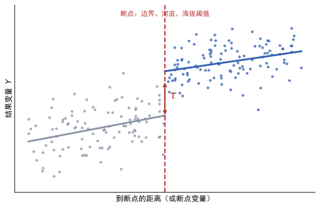
据族一的逻辑，断点两侧的观测在断点附近几乎相同，只有处理状态不同。把两侧的拟合线分别外推到断点，两条线在断点处的落差就是效应。
| 符号 | 含义 | 文献实例 |
|---|---|---|
| $x_i$ | 驱动变量（running variable） | 到米塔边界的距离；到国界的距离 |
| $c$ | 断点位置 | 通常标准化为 0 |
| $x_i-c$ | 中心化后的驱动变量 | 正值表示位于边界一侧 |
| $\mathbf{1}[x_i\ge c]$ | 是否位于断点右侧 | 处理状态的指示 |
| $\tau$ | 断点处的效应，核心参数 | 即为要求的因果效应 |
| $f(\cdot)$ | 连续函数，描述驱动变量与结果的关系 | 通常取一次或二次多项式 |
| $\varepsilon_i$ | 误差项 | 允许异方差 |
此式的估计量也可以用极限形式表达，这个形式说明断点回归本质上比较的是两个极限。
实际操作分四步。
- ，把驱动变量中心化，使断点位于零。
- ，选定带宽 $h$，只保留 $\lvert x_i-c\rvert\le h$ 的观测。
- ，在带宽内分别拟合两侧的多项式。
- ，取两个拟合值在零处的差。
| 可选做法 | 代价 | 建议 |
|---|---|---|
| 缩小带宽 | 偏差变小，方差变大 | 报告三到五个带宽下的结果 |
| 提高多项式次数 | 边界处方差急剧膨胀 | 不超过二次，并同时报告一次与二次 |
| 加入协变量 | 可能引入新的内生性 | 只加入断点前就已确定的变量 |
断点回归还须做一项独有的检验，称为操纵检验（manipulation test）；若个体能精确控制驱动变量以获取处理，断点两侧的样本就会失去可比性。常用的检验是观察驱动变量密度在断点处是否连续。
5.5 市场准入
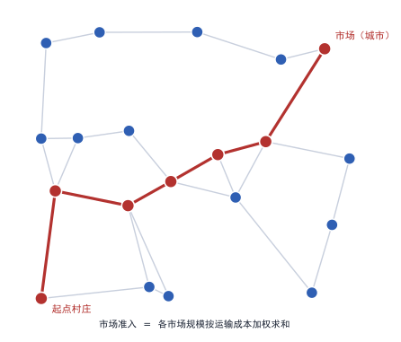
据族二的逻辑，基础设施的作用不在于设施本身，而在于它改变了到达市场的成本；把这一想法写成公式，得到市场准入指数。
| 符号 | 含义 | 如何从数据得到 |
|---|---|---|
| $\mathrm{MA}_i$ | 单元 $i$ 的市场准入 | 求和结果 |
| $j$ | 市场编号，从 1 到 $J$ | 全部城市或全部县 |
| $M_j$ | 市场 $j$ 的规模 | 人口或总产值 |
| $\tau_{ij}$ | 从 $i$ 到 $j$ 的运输成本，称为冰山成本 | 路网最短路长度，或运价乘以里程 |
| $\theta$ | 贸易弹性，刻画成本对贸易量的抑制强度 | 取文献估计值，须做敏感性 |
冰山成本（iceberg cost）的含义是；要把一单位货物运到 $j$，必须从 $i$ 发出 $\tau_{ij}$ 单位，途中损耗掉的部分即成本；$\tau_{ij}$ 由 1 变为 1.5，意味着多运五成货物才能到货；
- 建图。把路网矢量转成图，节点为路口与城镇，边为路段，边权为长度或通行时间。
- 算最短路。对每个节点跑一次最短路算法，得到全部节点对之间的通行成本矩阵。
- 加权求和。按式 (5.7) 把规模乘以成本的负幂，再对全部市场求和。
- 取对数。市场准入通常右偏严重，回归前取自然对数。
据 Donaldson 与 Hornbeck（2016）的做法，市场准入的变动可以分解为两部分：一部分来自本地到既有市场的成本下降，另一部分来自市场本身规模的变化。把两部分拆开，才能区分「修路让本地更容易出货」与「修路让别处变得更大」；
5.6 代理测量与夜间灯光
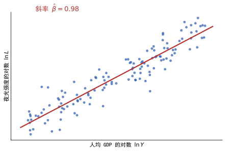
据族五的逻辑，产出无法在每一平方公里上观测到，灯光可以；把灯光当作产出的代理，需要把代理关系写成方程。
| 符号 | 含义 | 性质 |
|---|---|---|
| $L_{it}$ | 观测到的灯光强度 | 可直接测量 |
| $y_{it}^{*}$ | 真实的产出 | 不可直接观测 |
| $y_{it}$ | 统计部门报告的产出 | 含测量误差 $u_{it}$ |
| $\phi$ | 灯光对产出的弹性 | 大于零，随国家收入水平变化 |
| $\eta_{it}$ | 灯光与产出关系的随机扰动 | 如断电、节日、云层遮挡 |
| $u_{it}$ | 统计数据的测量误差 | 在低收入国家更大 |
测量误差会把回归系数拉向零，这个现象称为衰减偏误（attenuation bias），其幅度由信度比决定。
| 符号 | 含义 | 取值范围 |
|---|---|---|
| $\lambda$ | 信度比（reliability ratio） | 0 到 1 |
| $\operatorname{Var}(\ln y^{*})$ | 真实产出的方差 | 无法直接得到 |
| $\operatorname{Var}(u)$ | 测量误差的方差 | 可用两套数据交叉估计 |
| $\lambda\phi$ | 衰减后的系数 | 永远小于真实 $\phi$ |
三个推论可以直接使用；第一，测量误差只造成向下偏误，不会造成向上偏误，故基于灯光的估计通常是保守的。
- ，信度比越低，需要的修正越大。
- ，用灯光替代产出做因变量时，衰减会按同样比例缩小所有系数。
5.7 空间相关的标准误
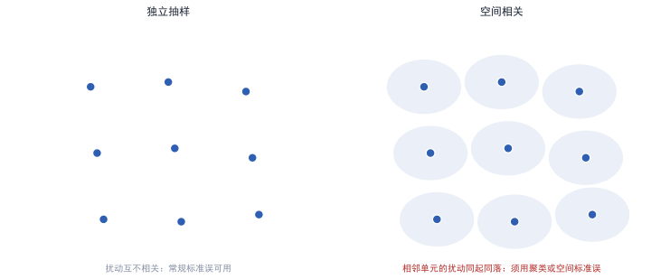
据第 1 章的标准误公式，其成立前提是观测之间相互独立。地理数据几乎从不满足这个前提，因为相邻单元共享气候、市场与行政冲击，忽略空间相关会导致标准误被严重低估，从而把不显著的结果报成显著；
处理办法之一是把相关范围明确写进方差估计，这类估计量称为空间异方差与自相关一致估计量，由 Conley 提出。
| 符号 | 含义 | 取值或作用 |
|---|---|---|
| $\hat V$ | 系数向量的方差协方差矩阵估计 | 对角线元素的平方根即标准误 |
| $d_{ij}$ | 单元 $i$ 与 $j$ 之间的距离 | 大圆距离或路网距离 |
| $b$ | 带宽，即允许相关的最大距离 | 研究者自行设定并报告 |
| $K(\cdot)$ | 核函数，随距离衰减 | 三角核或均匀核 |
| $\hat\varepsilon_i$ | 单元 $i$ 的回归残差 | 由第一步回归得到 |
| $X_i$ | 单元 $i$ 的解释变量向量 | 与回归时一致 |
此式的读法是；把距离在带宽以内的残差乘积全部加起来，距离越远权重越低。带宽取零时，此式退化为普通的标准误公式。带宽取无穷大时，它退化为把全国当作一个聚类。
| 做法 | 适用情形 | 须报告的敏感性 |
|---|---|---|
| 聚类到行政区 | 冲击在行政层级上发生 | 换用上一级行政区 |
| Conley 空间标准误 | 冲击沿地理距离衰减 | 带宽取 50、100、200 千米 |
| 双向聚类 | 同时存在空间与时间冲击 | 分别报告单向与双向 |
6从坐标到回归表
据第 2 章的三种空间对象，本章把转换过程拆成可执行的步骤，这套步骤在使用地理信息的论文中大体相同；区别只在于具体软件与数据源；先把流水线的顺序固定下来，再谈识别策略；
6.1 投影与坐标系
经纬度是球面坐标，直接用来算面积或距离会产生系统误差；研究者须先把球面坐标投影到平面坐标系，这一步称为投影变换（projection）。
| 坐标系类型 | 用途 | 注意 |
|---|---|---|
| 地理坐标系（经纬度） | 存储与交换 | 不能直接算面积 |
| 等积投影 | 计算面积、人口密度 | 保持面积不变，形状会变形 |
| 等距投影 | 计算距离、缓冲区 | 只在标准纬线附近准确 |
| 等角投影 | 制图与视觉呈现 | 角度不变，面积会失真 |
6.2 六步流水线
- 确定观测单元。先定网格分辨率或行政层级，再决定全部变量的聚合规则，这一步一旦确定，后续不可更改。
- 统一投影。把全部图层投影到同一个平面坐标系，通常选等积投影。
- 空间连接。用点入面、最近邻或缓冲区，把点数据挂到面单元上；冲突事件用点入面，路网影响用缓冲区或最短路。
- 栅格聚合。把栅格数据按面积加权平均到面单元，权重为重叠面积占比。
- 拼装面板。以「单元编号—时间」为主键，把各来源变量横向合并，并检查缺失模式。
- 构造派生变量。算距离、算可达性、算密度、取对数、做标准化。
6.3 聚合的两条公式
把栅格聚合到面单元时，正确的做法是按重叠面积加权；等权平均只有在各栅格与面单元重叠面积相同时才成立。
| 符号 | 含义 | 说明 |
|---|---|---|
| $a$ | 目标面单元 | 县、网格或族群家园 |
| $p$ | 源栅格像元 | 分辨率通常远小于 $a$ |
| $z_p$ | 像元 $p$ 的取值 | 夜光强度、人口数、坡度 |
| $w_{pa}$ | 像元 $p$ 落在 $a$ 内的面积占比 | 0 到 1 |
| $\bar z_a$ | 面单元 $a$ 的聚合值 | 加权平均 |
构造「到某设施的距离」时，通常不用最近距离，而用距离衰减的加权和，这样得到的量对单个设施的位置误差更稳健。
| 符号 | 含义 | 取值 |
|---|---|---|
| $S_i$ | 单元 $i$ 处的设施密度 | 随设施增多而增大 |
| $k$ | 设施编号 | 矿点、水电站、诊所 |
| $d_{ik}$ | 单元 $i$ 到设施 $k$ 的距离 | 大圆距离或路网距离 |
| $h$ | 带宽，决定影响的衰减速度 | 须做敏感性，通常取 10 至 50 千米 |
此式称为高斯核密度；据其形式，距离每增加一个带宽，权重下降为原来的约百分之六十一。带宽的选择会直接改变变量的分布，故必须作为稳健性项目报告。
6.4 常用数据源
| 类别 | 常用数据源 | 空间形态 | 本库使用者 |
|---|---|---|---|
| 冲突事件 | UCDP 地理参照事件数据、ACLED | 点 | C03、C09、N08 |
| 行政边界 | GADM、Natural Earth | 面 | G08、G03、G11 |
| 路网 | OpenStreetMap、历史地图数字化 | 线 | G03、G05、G15 |
| 地形 | SRTM 数字高程模型 | 栅格 | G09、G14、G05 |
| 夜间灯光 | DMSP-OLS、VIIRS | 栅格 | G16、G01、F07、F12 |
| 矿产 | USGS 矿产资源数据 | 点 | C09 |
| 族群分布 | GeoEPR、数字化人类学地图 | 面 | G07、G08、N08 |
据本库的实际分布，一百篇文献中主要数据形态为面者三十八篇，为关系边者十七篇；为栅格与混合者各十五篇；为点者九篇，为线者六篇；形态的选择与识别策略高度相关，并非自由选项；
6.5 拼装面板时的三个检查
| 检查项 | 要发现的问题 | 处理方式 |
|---|---|---|
| 主键唯一性 | 一个单元在同一年出现两行 | 合并前先去重，并记录被合并的行数 |
| 缺失模式 | 缺失与结果相关，即非随机缺失 | 报告缺失率，并做缺失指示变量的稳健性 |
| 边界变动 | 行政区在样本期内被拆分或合并 | 用不变的单元或做人口加权调和 |
7进阶方法：五个必须认识的工具
据前六章的内容，双向固定效应、工具变量与断点已经覆盖多数实证研究。本章补五个工具，它们构成本库方法阶梯的上两段。五个工具的共同点在于；把「比较哪些单元」这件事本身交给一个模型来决定；
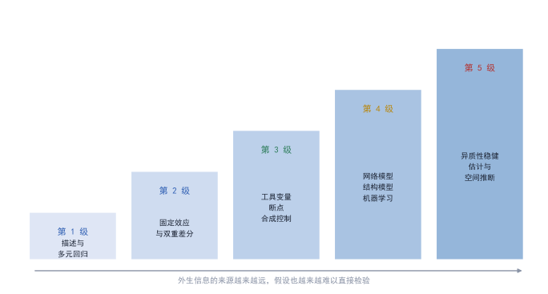
| 级别 | 方法特征 | 本库对应文献 | 假设能否直接检验 |
|---|---|---|---|
| 第 1 级 | 描述与多元回归 | Fearon 与 Laitin 2003；Alesina 与 Dollar 2000 | 不能，只能做稳健性 |
| 第 2 级 | 固定效应、双重差分、事件研究 | Asher 与 Novosad 2020；Burgess 等 2015 | 平行趋势可间接检验 |
| 第 3 级 | 工具变量、断点、合成控制、份额移动 | Dell 2010；Faber 2014；Abadie 等 2010 | 排除限制不可检验 |
| 第 4 级 | 网络模型、结构模型、机器学习测量 | Cranmer 与 Desmarais 2011；Jean 等 2016 | 需要外部效度检验 |
| 第 5 级 | 异质性稳健估计、空间推断、聚合偏差 | Goodman-Bacon 2021；Adão 等 2019；Fiaschi 等 2026 | 可解析，但常推翻旧结果 |
7.1 合成控制
据族二的逻辑，双重差分要求对照组与处理组走平行路径；当一个国家或城市整体受到冲击时，找不到合适的对照组。合成控制的思路是。用若干未受冲击的单元的加权组合，人造出一个对照组；
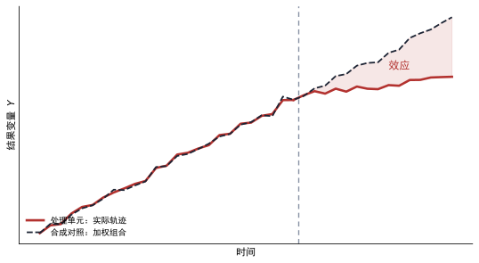
| 符号 | 含义 | 取值或约束 |
|---|---|---|
| $1$ | 受冲击的那个单元 | 例如巴斯克地区 |
| $j$ | 对照池中的单元编号 | 从 2 到 $J$ |
| $Y_{jt}$ | 单元 $j$ 在 $t$ 期的结果 | 可观测 |
| $w_j$ | 分配给单元 $j$ 的权重 | 非负，且总和为 1 |
| $T_0$ | 冲击发生的时点 | 只用到此前的数据拟合 |
| $\hat{Y}_{1t}^{\mathrm{syn}}$ | 处理单元的合成对照值 | 冲击后即为反事实 |
三个步骤可以手工执行。
- ，只保留冲击之前的年份，用这些年份的结果变量拟合权重；第二步，把权重固定，外推到冲击之后的年份。
- ，取实际值与合成值的差，逐年画出缺口。
7.2 份额移动与暴露度
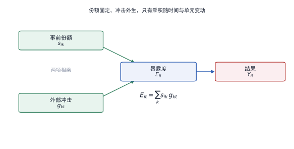
据 5.5 节市场准入的逻辑，一个单元受外部冲击的影响程度，取决于它与冲击来源的联系强度；把这一想法写成最简形式，得到份额移动（shift-share）暴露度。
| 符号 | 含义 | 本库实例 |
|---|---|---|
| $s_{ik}$ | 单元 $i$ 在行业 $k$ 上的事前份额 | 该县该行业的就业占比 |
| $g_{kt}$ | 行业 $k$ 在第 $t$ 期的外部增长率 | 全国或全球行业增速 |
| $E_{it}$ | 暴露度（exposure） | 份额与冲击的乘积之和 |
| $\beta$ | 暴露度对结果的影响 | 核心待估参数 |
| $\mu_i,\lambda_t$ | 单元与时间固定效应 | 吸收份额本身与共同冲击 |
此式与 5.5 节的市场准入同构，区别只在权重与冲击的来源；份额固定、冲击外生、乘积之外没有其他变动，这是全套设计的力量来源。失败的情形同样明确，若事前份额与本地未观测特征相关，乘积就不再外生。
7.3 异质性稳健的双重差分
据 5.2 节，当处理时点在单元之间不一致时，双向固定效应的估计量不再等于某个干净的加权平均，这一发现改变了近十年的实证惯例。
| 符号 | 含义 | 为什么需要它 |
|---|---|---|
| $g$ | 首次接受处理的时点，称为组 | 处理时点不一致时按组切分 |
| $t$ | 当前期 | 逐组逐期估计 |
| $Y_{it}(g)$ | 组 $g$ 在处理后的潜在结果 | 可观测量 |
| $Y_{it}(0)$ | 未处理的潜在结果 | 须用未处理组替代 |
| $\mathrm{ATT}(g,t)$ | 组 $g$ 在 $t$ 期的平均处理效应 | 可再按需要加权汇总 |
| 文献 | 做了什么 | 本库编号 |
|---|---|---|
| Goodman-Bacon 2021 | 把双向固定效应估计量分解为全部两两比较的加权和 | M02 |
| de Chaisemartin 与 D'Haultfœuille 2020 | 证明权重可为负，估计量可能符号反转 | M04 |
| Callaway 与 Sant'Anna 2021 | 用分组与时期定义条件效应，再显式加权 | M01 |
| Sun 与 Abraham 2021 | 指出事件研究中污染系数的来源并给出修正 | M03 |
7.4 网络模型
据第 2 章的对象分类，当一行代表两个行为体之间的一条联系时，独立性假设失效。此时不能再对每条边做独立回归，而要把依赖结构写进模型；
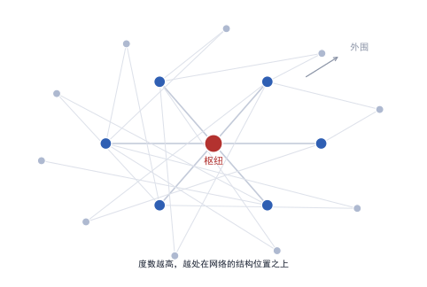
| 符号 | 含义 | 取值范围 |
|---|---|---|
| $A$ | 邻接矩阵，$N\times N$ | 元素为 0 或 1 |
| $a_{ij}$ | $i$ 到 $j$ 是否存在联系 | 0 或 1 |
| $k_i$ | 节点 $i$ 的出度（out-degree） | 0 到 $N-1$ |
| $k_i^{\mathrm{in}}$ | 节点 $i$ 的入度（in-degree） | 0 到 $N-1$ |
把邻居的重要性也计入，得到特征向量中心性。
| 符号 | 含义 | 求解方式 |
|---|---|---|
| $x_i$ | 节点 $i$ 的中心性得分 | 待求 |
| $\lambda$ | 比例常数，等于 $A$ 的最大特征值 | 由特征方程给出 |
| $a_{ij}$ | 邻接矩阵元素 | 已知 |
此式的读法是；一个节点的中心性，正比于其邻居中心性的总和；写成矩阵形式即 $Ax=\lambda x$，故转化为求最大特征值对应的特征向量；反复迭代也能收敛。
当因变量是一整张图时，需要直接为图建立概率模型。
| 符号 | 含义 | 举例 |
|---|---|---|
| $y$ | 一张具体的图 | 某年的同盟网络 |
| $g(y)$ | 图的结构统计量向量 | 边数、互惠边数、三角形数 |
| $\theta$ | 对应的系数向量 | 结构效应的强度 |
| $\kappa(\theta)$ | 归一化常数 | 对全部可能的图求和 |
也可以把亲疏压缩成低维坐标，用坐标距离替代成百上千个虚拟变量。
| 符号 | 含义 | 性质 |
|---|---|---|
| $T_{ij}$ | 从 $i$ 到 $j$ 的流量 | 可观测量 |
| $Y_i,Y_j$ | 两国的经济规模 | 可观测量 |
| $z_i,z_j$ | 潜在空间中的坐标向量 | 待估的隐变量 |
| $\lVert z_i-z_j\rVert$ | 两个坐标之间的欧氏距离 | 由坐标算出 |
7.5 机器学习的两种用法
据 F04 与 F06 的区分，机器学习在社会科学里有两种完全不同的用法；第一种是预测，目标是让误差最小；第二种是因果，目标是让某个系数的偏误最小；两种用法的评价标准不同，不可互相替代。
| 用法 | 目标 | 评价指标 | 本库实例 |
|---|---|---|---|
| 预测与测量 | 把不可观测量算出来 | 样本外均方误差、瞄准误差 | F05、F08、F10 |
| 因果与去偏 | 把混淆部分扣干净 | 系数一致性、区间覆盖率 | F01、F03、F11 |
| 异质性 | 估计效应随协变量的变化 | 分组效应的校准 | F03 |
因果用法的核心公式是正交化；先用机器学习拟合两个辅助方程，再用残差做回归。
| 符号 | 含义 | 用何估计 |
|---|---|---|
| $X_i$ | 高维协变量向量 | 可观测 |
| $m(\cdot)$ | 结果对协变量的条件期望 | 用机器学习拟合 |
| $r(\cdot)$ | 处理对协变量的条件期望 | 用机器学习拟合 |
| $\tilde Y_i,\tilde D_i$ | 扣除协变量解释之后的残差 | 由前两步得到 |
| $\hat\theta$ | 去偏后的因果参数估计 | 残差的最小二乘 |
8专题一 地理、可达性与基础设施
据族二与族三的逻辑，这一组文献处理的是同一个难题；公路、铁路、电网与港口都不是随机落点的，落点本身反映了当地的经济潜力。直接比较有设施与无设施的地区，得到的差距里混着选址决策。
| 编号 | 简称 | 期刊与卷期 | 年份 | 难度 | 识别策略 | 数据形态 |
|---|---|---|---|---|---|---|
| G01 | Henderson 等 2012 | American Economic Review 102(2) | 2012 | 3 | 测量误差模型 | 栅格 |
| G02 | Dell 2010 | Econometrica 78(6) | 2010 | 3 | 空间断点回归 | 混合 |
| G03 | Donaldson & Hornbeck 2016 | The Quarterly Journal of Economics 131(2) | 2016 | 4 | 市场准入＋结构模型 | 线 |
| G04 | Baum-Snow 2007 | The Quarterly Journal of Economics 122(2) | 2007 | 3 | 工具变量 | 线 |
| G05 | Faber 2014 | The Review of Economic Studies 81(3) | 2014 | 3 | 双重差分＋工具变量 | 混合 |
| G06 | Banerjee 等 2020 | Journal of Development Economics 145 | 2020 | 3 | 双重差分＋工具变量 | 线 |
| G07 | Michalopoulos & Papaioannou 2013 | Econometrica 81(1) | 2013 | 3 | 空间断点＋边界固定效应 | 混合 |
| G08 | Michalopoulos & Papaioannou 2014 | The Quarterly Journal of Economics 129(1) | 2014 | 3 | 跨国界空间断点 | 栅格 |
| G09 | Dinkelman 2011 | American Economic Review 101(7) | 2011 | 3 | 工具变量＋固定效应 | 点 |
| G10 | Ahlfeldt 等 2015 | Econometrica 83(6) | 2015 | 4 | 空间断点＋结构模型 | 面 |
| G11 | Asher & Novosad 2020 | American Economic Review 110(3) | 2020 | 2 | 双重差分＋事件研究 | 点 |
| G12 | Burgess 等 2015 | American Economic Review 105(6) | 2015 | 2 | 差分中的差分 | 线 |
| G13 | Jedwab & Moradi 2016 | Review of Economics and Statistics 98(2) | 2016 | 2 | 准外生路线的长期比较 | 点 |
| G14 | Lipscomb 等 2013 | American Economic Journal: Applied Economics 5(2) | 2013 | 3 | 工具变量 | 混合 |
| G15 | Müller-Crepon 2020 | Journal of Conflict Resolution 65(2-3) | 2020 | 3 | 关系型国家能力＋空间模型 | 线 |
| G16 | Hodler & Raschky 2014 | Quarterly Journal of Economics 129(4) | 2014 | 3 | 三重差分＋三层固定效应 | 栅格 |
8.1 处理变量的三种造法
据本组十六篇文献的做法，处理变量按外生信息的来源分成三类。
- 类用规划图，例如 Faber（2014）用规划线路而非建成线路。
- 类用地理条件，例如 Lipscomb 等（2013）用河流落差代理发电潜力。
- 类用历史边界，例如 Michalopoulos 与 Papaioannou（2014）用国界切开同一族群。
| 造法 | 外生性来源 | 本库编号 | 主要弱点 |
|---|---|---|---|
| 规划图 | 全国网络几何在施工前已定 | G05、G04 | 规划本身受政治影响 |
| 地理条件 | 地形与落差由自然决定 | G09、G14 | 地形可能直接影响结果 |
| 历史边界 | 殖民划界与当代经济无关 | G02、G08 | 边界附近样本量有限 |
8.2 可达性是一个网络量
据 5.5 节的公式，基础设施的作用不落在设施本身，而落在到达市场的成本上，这一步转换很关键。同一条公路，对不同县的价值不同，取决于它连向哪里。把路网建成图之后，最短路径把几何信息变成经济信息。
据 Donaldson 与 Hornbeck（2016）的分解，市场准入的变动可以拆成两部分：一部分是本地到既有市场的成本下降，另一部分是市场自身规模的变化；前者的受益者是沿线地区，后者可能让未通路的地区受损。
8.3 几何当作外生时的边界条件
据 A5 与 G10 的做法，空间断点最有力的地方在于它把「谁在处理组」交给一条线决定。这条线的合法性取决于两件事。线的位置与结果无关，线两侧的协变量连续。第二件事可以用高程、坡度、降水、到海岸距离逐项检验，第一件事只能靠史料论证。
8.4 第二部分 文献拆解
据前三节的综述，以下三篇按同一线索拆开；线索固定为九项；先是问题意识、数据边界、变量构造、方法理由与方程符号；接着是论证链条、替代解释、未决争议与可迁移之处。三篇分别对应三种外生信息来源：规划图、路网几何、河流落差；
拆解一 Faber（2014）：公路规划图如何成为工具变量
问题意识；据该文的设定，中国在一九九零年代末启动国道主干线建设；内陆县若接入干线，本地产品可以卖到沿海与海外市场，市场规模的扩大应当带来工业扩张。问题在于。接入干线的县，本来是否就更可能增长，若答案是肯定的，那么比较接入县与未接入县，得到的差距里混着选址决策。该文要回答的是「贸易一体化本身是否提高了内陆县的工业产出」；它不问「哪一类县更容易拿到公路」。
既有解释的两个缺口；第一个缺口在因果方向；已有研究观察到「通路地区更富」，但无法排除「富的地方先修路」。第二个缺口在机制；即便证明通路带来增长，也说不清增长来自本地市场扩大、来自外部需求、还是来自要素流入。两个缺口指向同一个技术问题。需要一个不受本地经济条件影响的连接指标；
数据的三个边界；观测单元取县；第一层是规划图，取一九九零年代确定的主干线规划线路，含全部走向与连接点。第二层是地形与县界，用于计算县中心点到线路的距离。第三层是工业企业数据库，取一九九零年与两千年代的产出、企业数与就业。三层数据的时间顺序是关键。规划图早于结果观测期，这一点决定了工具的外生性可以成立。空间边界同样重要；只保留内地县，沿海县因港口优势被单独处理。
变量怎样被造出来；第一步，从规划图上取线路，按县中心点到线路距离小于阈值的规则判定「已连接」。第二步，用最小生成树构造一个反事实路网。连接各省会城市，边权取地形决定的建设成本。第三步，取实际规划线路中「与最小生成树重合」的部分，作为工具。反事实路网代表「纯粹为了连通而修」的线路，它与实际规划线路的差异，反映政治与行政因素。第四步，把工具与实际连接分别标准化，便于比较系数。
为什么不用更简单的办法。据第 3 章的偏差公式，遗漏变量来自「修路的地方本来就好」。一种替代方案是加入尽可能多的控制变量，但地形、市场潜力与政治资源都无法穷尽。另一种方案是空间断点，但干线经过的县并不存在一条可以把处理与对照切开的地理线。相较之下，工具变量把识别力量集中在「规划中的地形约束」上，这一来源可观测，假设更窄，论证也更易落实；
| 符号 | 含义 | 取值或单位 | 在本文中的作用 |
|---|---|---|---|
| $c$ | 县的下标 | 整数编号 | 观测单元 |
| $\Delta \ln Y_c$ | 该县工业产出对数的长期变动 | 两期之差 | 结果变量，取差分以消去县固定效应 |
| $\Delta D_c$ | 该县连接状态的两期之差 | −1、0 或 1 | 处理变量，多数县为 0 或 1 |
| $\mathrm{dist}_c$ | 县中心点到规划线路的距离 | 千米 | 构造处理的连续原料 |
| $h$ | 判定连接的距离阈值 | 研究者设定，须做敏感性 | 阈值改变会同时改变处理组规模与精度 |
| $\mathbf{1}[\cdot]$ | 指示函数 | 0 或 1 | 把连续距离转成二值处理 |
| $X_{c,1990}$ | 事前控制变量向量 | 固定在一九九零年 | 防止事前差异驱动结果 |
| $\gamma$ | 控制变量的系数向量 | 待估 | 通常不是研究兴趣所在 |
| $\beta$ | 连接对产出变动的影响 | 待估参数 | 核心系数 |
方程怎么从假设推出来；第一步，写出每个县在两期的产出方程，含县固定效应与年固定效应。
- ，把两期相减，县固定效应被消掉，只剩变化量；第三步，把处理变量取为「是否连接」的变动，于是 $\Delta D_c$ 只能取 −1、0、1 三个值。
- ，加入一九九零年的控制变量，固定其取值，避免控制变量本身被处理影响。四步合起来，方程只保留了可观测的长期变动，未观测的县特征已被差分吸收。。
论证链条；据该文的推进顺序，共有四步；第一步，用普通最小二乘估计上式，得到一个偏大的系数。第二步，指出这个系数被选址偏差污染，因为规划线路并非随机，第三步，引入最小生成树构造的工具，重估系数，发现系数下降但仍显著。第四步，按县到沿海港口的距离分组，发现效应集中在本已靠近市场的县，远离市场的县受益有限。四步合起来，结论从「修路有用」精确化为「修路对靠近市场的地方有用」。
替代解释与稳健性；据该文的做法，检验包括三项：改变距离阈值，报告一组结果；把结果变量换成企业数量与就业，检查是否同向；按地区分组，检查是否由某一省份驱动。三项之中，第二项最关键；产出与企业数同向，才能排除单纯的价格效应。另有一项针对机制，若增长来自要素流入而非本地生产率提高，则人口与工资应当同向上升。
未决争议；规划图的外生性依赖于「规划由全国网络几何决定」这一判断，若省级政府在规划阶段已有影响力，工具仍可能内生，该文对此的处理是分组检验，而非直接论证，这是后续文献持续追问的地方；
可迁移的三点；第一，把「规划」与「建成」分开，是处理基础设施内生性的通用手法。
- ，构造反事实网络（最小生成树、最短路树）是产生工具的系统办法。
- ，异质性分组不是附加分析，而是结论的一部分。
拆解二 Donaldson 与 Hornbeck（2016）：把路网变成成本矩阵
问题意识；据该文的设定，美国在十九世纪后期大规模修建铁路；传统研究比较「有铁路的县」与「无铁路的县」，同样面对选址内生，该文换了一个提问方式。不问「有没有铁路」，而问「到达市场的成本下降了多少」，这一转换把离散的设施变成连续的经济量。
为什么这一转换重要；「有铁路」是一个二值变量，它假定铁路的价值对每个县相同；事实上同一条铁路对不同县的价值差别明显；取决于它连向哪里、是否接上水路、以及沿线市场的大小。把设施换成成本，等于把网络的几何结构写进变量，而不是留给误差项；
数据的三个边界；观测单元取县；数据包括铁路网矢量、水路网矢量、县界与县中心点、农产品产值与土地价值。三套网络必须同时进入计算，因为铁路与水路可以互相替代；只算铁路会高估其作用；时间边界同样重要；需要至少两个观测年，才能构造变动。
变量怎样被造出来；第一步，建图；节点为县与路口，边为路段，边权取运输成本；第二步，算最短路，得到全部县对之间的成本矩阵；第三步，按式 (5.7) 加权求和，得到市场准入；第四步，取对数，使系数可读成弹性。这一步把几何信息转换成经济信息；同一条铁路对不同县的价值不同，取决于它连向哪里；
为什么不用更简单的办法；一种替代是「到最近铁路站的距离」，但它忽略了网络连通性；两个县到车站同样远；一个连向大市场，一个连向小市场，价值完全不同。市场准入的代价是需要完整的网络数据与一个贸易弹性的取值，收益是变量本身带有经济含义；
这一变量的一个副作用；取对数之后，系数可以直接读成弹性，即市场准入提高百分之一，土地价值提高百分之几。弹性形式的好处是可以在不同县之间比较。代价是零值无法取对数，故须对零市场准入的县做单独处理；
| 符号 | 含义 | 取值或单位 | 在本文中的作用 |
|---|---|---|---|
| $\mathrm{MA}_{ct}$ | 县 $c$ 在第 $t$ 年的市场准入 | 指数，取对数后进入回归 | 核心解释变量 |
| $\tau_{cjt}$ | 从 $c$ 到 $j$ 的运输成本 | 由最短路算出，无量纲 | 网络信息进入方程的唯一入口 |
| $\theta$ | 贸易弹性，刻画成本对贸易量的抑制 | 由结构模型估计 | 决定距离衰减的速度 |
| $Y_{jt}$ | 市场 $j$ 在第 $t$ 年的规模 | 农业产值或人口 | 权重的分子 |
| $V_{ct}$ | 县 $c$ 的土地价值 | 美元每英亩 | 结果变量 |
| $\beta$ | 市场准入对土地价值的弹性 | 待估参数 | 核心系数 |
| $\mu_c,\lambda_t$ | 县与年固定效应 | — | 吸收不随时间与不随县变化的因素 |
方程怎么从假设推出来；第一步，假定每个县把产品卖到所有可达市场，运输成本以冰山形式进入。
- ，在贸易份额与成本之间引入常替代弹性，得到份额正比于成本的负幂；第三步，把份额乘以各市场规模并求和，得到市场准入。
- ，假定土地价值与市场准入成比例，取对数后成为线性方程。四步之中，第三步是定义，第四步是待检验的假设，两者的性质不同。。
论证链条；据该文的推进，关键在第三步；市场准入的变动可以拆成两部分：本地到既有市场的成本下降，以及市场自身规模的变化。前者是修路的直接后果，后者是其他县增长带来的溢出，若把两者混在一个系数里，就无法判断收益来自哪里，该文用结构模型把两部分分开，再分别估计。
替代解释与稳健性；据该文的做法，检验包括；改变贸易弹性的取值，检查结论是否翻转；只用水路网做反事实；检查铁路的增量贡献；按县到铁路的距离分组，检查是否由少数枢纽驱动。第二项是这一设计的特有检验：路网的可替代性必须被显式处理；
未决争议；市场准入的构造依赖贸易弹性的取值，而这个弹性在本文中由结构模型估计，与简约式回归共享数据。两者的循环依赖是这类研究的通病，后续文献改用外部弹性做敏感性；
可迁移的三点；第一，把「设施」换成「成本」，是提升估计精度的通用做法。
- ，多套网络要同时进入图，否则会高估单一设施的作用。
- ，结构模型的价值不在拟合，而在分解。
这一篇留下的问题；结构模型与简约式回归共用同一批数据，两条路线得出的参数无法互相校验。后续文献的做法是引入外部估计的贸易弹性。再看结论是否稳定，这把循环依赖降为一次单向引用。另一个遗留问题是水路与铁路的替代性只做了粗分组，未在模型内部处理。
拆解三 Lipscomb、Mobarak 与 Barham（2013）：河流落差为什么可以作为工具
问题意识；据该文的设定，巴西在二十世纪后半期大规模开发水电；通电的市政是否发展得更快；难题与修路相同；电网的落点由经济与政治共同决定。该文要找一个只与发电潜力有关、与经济潜力无关的变量；
为什么这个难题在电力上更尖锐；公路可以绕行，电网必须接入输电线；电网的落点因此高度集中于既有线路沿线，而这些线路又沿着历史上更富裕的地区铺设。选址偏差在电力研究里比在公路研究里更强，故更需要一个外生变量；
数据的三个边界；观测单元取自治市；数据包括水电站点位、河流网络与数字高程模型、输电线路矢量、市政统计与人口普查。数字高程模型是核心。河流落差由地形决定，地形不随经济政策改变。时间边界取水电开发计划启动前后各若干年，以便构造政策时点。
变量怎样被造出来；第一步，从高程模型中提取河网；第二步，沿河流计算相邻河段的高程差，得到落差。第三步，把落差与流量相乘，得到发电潜力的物理量。第四步，把该物理量与政策时点相乘，构造随市政与年份同时变动的工具。前三步是纯地理计算，不涉及任何经济变量；第四步才引入时间；
为什么不用更简单的办法；一种替代是用「到最近水电站的距离」，但距离同时反映地形与经济条件，不满足排除限制。另一种替代是用「是否为山区」，但山区本身与农业条件相关。落差的优势在于它有物理单位，且与经济变量没有直接通道；
| 符号 | 含义 | 取值或单位 | 在本文中的作用 |
|---|---|---|---|
| $\mathrm{Elect}_{mt}$ | 市政 $m$ 在第 $t$ 年是否通电 | 0 或 1 | 内生处理变量 |
| $\mathrm{Pot}_m$ | 该市所在河段的发电潜力 | 落差乘流量，物理量 | 工具变量的横截面部分 |
| $\mathrm{Post}_t$ | 水电开发计划启动之后的时间指示 | 0 或 1 | 工具的时间部分 |
| $\mathrm{Pot}_m\times\mathrm{Post}_t$ | 两者的交互 | — | 随市与年同时变动的工具 |
| $\pi_1$ | 第一阶段系数 | 待估 | 须显著，否则工具无效 |
| $y_{mt}$ | 人均 GDP、入学率或婴儿死亡率 | 按结果而定 | 结果变量 |
| $\beta$ | 通电对结果的影响 | 待估 | 核心系数，即局部平均处理效应 |
| $\mu_m,\lambda_t$ | 市政与年固定效应 | — | 吸收两类不变因素 |
| $\widehat{\mathrm{Elect}}_{mt}$ | 第一阶段的拟合值 | 连续量 | 第二阶段的解释变量 |
方程怎么从假设推出来；第一步，写出通电的决定方程，假定它由地理潜力、时间趋势与未观测因素共同决定。第二步，把潜力与政策时点相乘，因为潜力本身不随时间变，会被市政固定效应吸收，第三步，用第一阶段的拟合值替代原始处理，因为原始处理与误差项相关。第四步，逐项检查排除限制，确认潜力不通过其他渠道影响结果。
论证链条；据该文的推进，共有四步。
- ，说明电网落点不是随机的。
- ，说明落差由地形决定，与市政经济潜力无关。
- ，报告第一阶段显著，且简约式系数与两阶段系数同向；第四步，给出多个结果变量的响应，并指出制造业就业的响应强于农业。第四步的作用是把「有效应」推进到「经由什么渠道」。。
替代解释与稳健性；据该文的做法，检验包括；改变落差的度量方式；改用流量或改用坡度；排除已通电多年的老市；检查是否存在只由大坝建设期带来的临时就业。第二项直接针对排除限制，若老市被排除后系数不变，说明结果不是由历史差异驱动；
未决争议；水电站选址同时考虑防洪与灌溉，这两项都可能直接影响农业产出，从而违背排除限制。该文对这条通道的处理是加入农业控制变量，属于缓解而非排除；
可迁移的三点；第一，物理量（落差、坡度、风速）是最干净的一类工具。
- ，工具需要时间维度才能进入固定效应模型，故须与政策时点相乘。
- ，多个结果变量同向，才能支撑「发展」这个宽概念。
数据从哪里来；电站点位与技术参数取自巴西电力部门的历史档案；高程取自公开的雷达地形数据，市政统计取自人口普查。三层数据的公开程度不同；高程可自由下载，市政统计需申请；电站档案需人工整理，这是复制成本的主要来源；
与同章另两篇的分工；本篇的工具来自自然条件，Faber 的工具来自规划图，Donaldson 与 Hornbeck 的处理变量来自网络几何。三者构成一个序列。自然决定、行政决定、几何决定，外生性依次减弱而信息量依次增加；
9专题二 冲突、资源与政治暴力
据第 3 章的三类偏差，冲突研究同时面对三种：暴力发生的地方往往缺少调查数据，资源丰富的地方往往缺少统计能力。冲突本身还会摧毁统计系统。这三件事叠加，使冲突研究成为地理信息方法最密集的领域。
| 编号 | 简称 | 期刊与卷期 | 年份 | 难度 | 识别策略 | 数据形态 |
|---|---|---|---|---|---|---|
| C01 | Fearon & Laitin 2003 | American Political Science Review 97(1) | 2003 | 1 | 横截面回归 | 面 |
| C02 | Gleditsch 等 2002 | Journal of Peace Research 39(5) | 2002 | 1 | 数据基础设施 | 面 |
| C03 | Miguel 等 2004 | Journal of Political Economy 112(4) | 2004 | 3 | 气象工具变量 | 栅格 |
| C04 | Raleigh 等 2010 | Journal of Peace Research 47(5) | 2010 | 1 | 数据基础设施 | 点 |
| C05 | Sundberg & Melander 2013 | Journal of Peace Research 50(4) | 2013 | 1 | 数据基础设施 | 点 |
| C06 | Hegre 等 2001 | American Political Science Review 95(1) | 2001 | 1 | 面板逻辑斯蒂回归 | 面 |
| C07 | Dube & Vargas 2013 | The Review of Economic Studies 80(4) | 2013 | 3 | 价格冲击＋固定效应 | 面 |
| C08 | Cederman 等 2011 | American Political Science Review 105(3) | 2011 | 2 | 族群层面的不平等测量 | 面 |
| C09 | Berman 等 2017 | American Economic Review 107(6) | 2017 | 3 | 格内价格冲击＋三重差分 | 栅格 |
| C10 | Tollefsen 等 2012 | Journal of Peace Research 49(3) | 2012 | 1 | 数据基础设施 | 栅格 |
| C11 | Bazzi & Blattman 2014 | American Economic Journal: Macroeconomics 6(4) | 2014 | 3 | 价格工具变量 | 面 |
| C12 | Sanchez de la Sierra 2020 | Journal of Political Economy 128(1) | 2020 | 3 | 空间断点＋田野数据 | 点 |
| C13 | Ash & Obradovich 2020 | Journal of Conflict Resolution 64(1) | 2020 | 2 | 中介分析＋面板 | 栅格 |
9.1 事件数据的三个精度
据 C04 与 C05 的做法，冲突事件数据库把每一次事件编码到经纬度与日期，这类数据有三项精度须报告。第一是地理精度，坐标可能只到县一级；第二是时间精度，日期可能只到月；第三是报道精度，事件是否被记录取决于媒体与研究者能否到达。
| 精度 | 问题的表现 | 处理方式 |
|---|---|---|
| 地理 | 坐标只有县级质心 | 改用网格或按面积分摊 |
| 时间 | 月份缺失，事件被归入全年 | 改用年度面板或做区间估计 |
| 报道 | 偏远地区事件被系统性漏记 | 用人道组织数据交叉核对 |
9.2 价格冲击乘本地禀赋
据 7.2 节与 C09 的做法，冲突研究最常用的一种暴露度构造是「外部价格乘本地资源」。禀赋不随时间变，价格不随格子变，只有乘积同时变动，故全部固定效应都无法吸收它。这一结构在 C07 的作物价格与 C11 的出口价格中反复出现。
9.3 气象工具的双刃
据 C03 的做法，降雨是收入冲击的常用工具；它的优点是外生，缺点是排除限制难以论证。降雨可以绕过收入直接影响冲突，例如影响牲畜、迁徙路线与战术时机。后续文献对这一点有持续争论，故使用气象工具时必须逐条列出替代渠道。
9.4 第二部分 文献拆解
据前三节的综述，以下三篇按同一线索拆开；三篇代表三种处理「冲突数据不可靠」的办法；一是用价格构造暴露度，二是把大宗商品分成两类，三是把不平等拆成两个维度；
拆解一 Bazzi 与 Blattman（2014）：把出口价格编织成一个指数
问题意识。据该文的设定，跨国回归发现「收入低的国家内战多」，但收入低可能是内战的结果，也可能与内战同由一个第三因素驱动，该文不去找收入的工具，而直接问。当一国的出口价格外生上涨时，冲突是否减少，这一问法把「收入」替换成「价格」，因为价格由世界市场决定，不由交战双方决定。
为什么这一替换能成立；价格对单个国家是外生的，但不同国家的出口结构不同，故同一价格变动对各国的影响强度不同。出口结构在短期内不易改变，于是它提供了横截面差异；价格提供了时间差异；两者相乘得到暴露度；这与 7.2 节的份额移动是同一结构。
两条通道的强弱不同；价格通道是即时的，出口收入在当年即可变化；份额通道是缓慢的，出口结构需要数年才调整。因此短期回归捕捉的主要是价格通道，长期回归才能同时捕捉两者。该文在稳健性部分对窗口长度做了检验。
数据的边界；观测单元取国家—年；数据包括各国出口商品的结构、各类商品的国际价格、冲突事件的发生与否，以及一组国家特征。关键在于出口结构要用基期固定，否则价格变动会反过来改变权重。时间边界须覆盖价格波动的完整周期，太短会把趋势当成冲击。
变量怎样被造出来；第一步，取基期的出口篮子，得到每个国家在各商品上的权重。
- ，对每个国家构造加权价格指数。
- ，取该指数相对长期趋势的偏离，作为经济冲击。
- ，把冲击标准化，使不同国家的系数可比。权重固定、价格外生，这是全套设计的力量来源。。
为什么不用更简单的办法；一种替代是直接用人均收入增长，但收入增长受冲突影响，方向相反。另一种替代是用单一商品价格，但多数国家出口多种商品，单一价格无法代表其收入冲击。加权指数同时解决了两件事：外生性与代表性；
| 符号 | 含义 | 取值或单位 | 在本文中的作用 |
|---|---|---|---|
| $i$ | 国家的下标 | 整数编号 | 观测单元 |
| $k$ | 出口商品的下标 | 按国际商品分类编码 | 权重的另一维 |
| $w_{ik}$ | 国家 $i$ 在商品 $k$ 上的出口权重 | 份额，基期固定，合计为 1 | 固定不动的横截面部分 |
| $\Delta\ln P_{kt}$ | 商品 $k$ 在第 $t$ 年的价格对数变动 | 由国际价格序列算出 | 外生的时间部分 |
| $\mathrm{Shock}_{it}$ | 国家 $i$ 的加权价格冲击 | 加权和，正负均可 | 核心解释变量 |
| $\Lambda(\cdot)$ | 逻辑斯蒂分布函数 | 取值 0 到 1 | 把线性预测转成概率 |
| $\beta$ | 价格冲击对冲突概率的影响 | 待估参数 | 核心系数 |
| $\mu_i,\lambda_t$ | 国家与年固定效应 | — | 吸收不变因素与全球共同冲击 |
方程怎么从假设推出来；第一步，写出国家的收入方程，假定收入由出口收入与国内产出构成；第二步，把出口收入写成价格与数量的乘积，取对数变动。第三步，把多项商品的变动按事前份额加权，得到单一指数。第四步，把指数放入冲突方程并加固定效应。第三与第四步之间有一个隐含假设。份额不随冲击改变，若份额随价格变化，指数就内生了；
论证链条。据该文的推进，共有四步；第一步，用固定效应模型估计上式，得到负系数，即价格上涨降低冲突概率。第二步，按收入水平分组，发现效应集中在低收入国家，高收入国家几乎为零。第三步，把冲击拆成正向与负向，发现负向冲击的作用更强。第四步，讨论机制，指向就业机会而非国家能力。第二步是全文的关键。「同一冲击在不同国家效应不同」这一事实，本身就排除了全球共同趋势的解释；
稳健性与争议；据该文的做法，检验包括三项：改变权重基期，换用死亡人数定义冲突，加入国家特定时间趋势。第三项最严格，若加入趋势后系数仍显著，说明结果不是由长期下滑驱动，争议在于价格可能经由粮食价格影响城市暴动，这一渠道不经过收入。
可迁移的三点；第一，把「收入」换成「价格」，是绕开反向因果的常用办法。
- ，权重必须固定，否则暴露度内生于结果。
- ，分组本身就是识别的一部分，不只是异质性展示。
这一篇留下的问题；出口价格可能经由粮食价格影响城市骚乱，这条渠道不经过就业。该文对这条路径只做了讨论，未做正式检验，故「就业机会」这一机制仍属推断而非证明。另一个遗留问题是价格冲击对邻国的溢出未纳入分析。
拆解二 Dube 与 Vargas（2013）：同一种冲击，两种相反的符号
问题意识；据该文的设定，哥伦比亚的冲突与农产品价格有关，但价格冲击对不同作物的影响不该相同。咖啡是劳动密集的小农作物，价格上涨意味着就业机会增加；石油是资本密集的国有资源；价格上涨意味着财政租金增加。前者应降低冲突，后者应提高冲突，该文把这一对立写成可检验的假设。
为什么这一对立重要；若只检验「价格与冲突的关系」，正负两种渠道会互相抵消，得到接近零的系数，结论就成了「无影响」。把商品分类，等于把两个相反的经济机制分开测量；这是全文的立论基础。
两条渠道的时间尺度也不同；咖啡价格影响的是当季就业与工资；反应在数月之内；油价影响的是财政预算与地方政治，反应在年度之内。若两类变量都在年度频率上观测，前者会被平均掉一部分，故系数应读作下界；
数据的边界；观测单元取市镇；数据包括各市镇的作物适种性与石油开采、国际价格序列、凶杀与冲突事件。适种性由地形与土壤决定，不随价格变化，这是横截面部分的外生来源。时间上须覆盖两类商品价格不同步变动的年份，否则两个交互项无法分离。
供给侧的第三个变量常被忽略；冲突还取决于武装组织的数量与地形，这些因素在短期内固定，可被市镇固定效应吸收。但若某个市镇因作物结构而在样本期内发生了组织分裂。固定效应就无法吸收，这构成一条未处理的混淆渠道；
变量怎样被造出来；第一步，用农业与地质资料构造每个市镇的咖啡适种性与石油储量；第二步，把适种性标准化到 0 至 1 的区间；第三步，把两类暴露度同时放进一个方程。同时放入是关键；两类冲击在时间上相关，分开估计会把彼此的效果算到对方头上；
为什么不用更简单的办法；一种替代是用「咖啡产量占比」，但产量本身受冲突影响；另一种替代是用「是否种植咖啡」，但二值变量丢掉了强度信息。适种性的优势是它只反映自然条件，且在价格变动前就已确定；
| 符号 | 含义 | 取值或单位 | 在本文中的作用 |
|---|---|---|---|
| $m$ | 市镇的下标 | 整数编号 | 观测单元 |
| $y_{mt}$ | 该市镇的凶杀率或冲突事件数 | 每十万人或计数 | 结果变量 |
| $P^{\mathrm{cof}}_{t}$ | 第 $t$ 年国际咖啡价格 | 美元每磅，取对数 | 时间维度之一 |
| $S_{m}$ | 该市镇的咖啡适种性 | 0 到 1 的指数 | 横截面维度之一，不随时间变 |
| $P^{\mathrm{oil}}_{t}$ | 第 $t$ 年国际油价 | 美元每桶，取对数 | 时间维度之二 |
| $O_{m}$ | 该市镇是否有石油开采 | 0 或 1 | 横截面维度之二 |
| $\beta_1$ | 咖啡价格冲击的效应 | 待估，预期为负 | 机会成本渠道 |
| $\beta_2$ | 油价冲击的效应 | 待估，预期为正 | 财政租金渠道 |
| $\mu_m,\lambda_t$ | 市镇与年固定效应 | — | 吸收适种性与全国趋势 |
方程怎么从假设推出来；第一步，写出市镇的冲突供给方程，含机会成本与掠夺收益两项。
- ，把机会成本写成农业工资的函数，把农业工资写成作物价格的函数；第三步，把掠夺收益写成财政租金与非法收入的函数。
- ，用适种性与开采状态把两类价格映射到市镇。四步之后，方程里的两个交互项各自对应一条机制，而不是两个统计控制。。
论证链条；据该文的推进，共三步；第一步，分别估计两类冲击，发现符号相反；第二步，把两者放进同一方程，符号稳定。第三步，检验渠道；咖啡价格上升时，农业就业与工资上升；油价上升时，公共支出与腐败指标上升。第三步把「符号相反」这一统计事实转成机制证据；
稳健性与争议；据该文的做法，检验包括三项：改变适种性阈值，排除受游击队控制较强的市镇，换用不同冲突指标重估。第二项针对的是内生性，若游击队的控制区本身与适种性相关，估计会有偏。争议在于油价影响可能经由地方政治而非财政租金。
可迁移的三点；第一，同一外生冲击可以由不同渠道产生相反效应，故必须分类。
- ，两个交互项要同时进入方程。
- ，机制检验要落到可观测的价格或就业变量上。
这一篇留下的问题；市镇边界与武装组织的实际控制区并不重合，故暴露度存在测量误差。误差会使系数被拉向零，故该文报告的效应应读作下界；另一个遗留问题是事件报道偏差；冲突越激烈，报道越多，而这恰好与因变量同向。
拆解三 Cederman、Weidmann 与 Gleditsch（2011）：把不平等拆成两个维度
问题意识；据该文的设定，「不平等导致冲突」这一说法长期无法检验，原因是「哪一群人与哪一群人比」说不清，该文把比较对象明确为族群与全国平均之间，并把不平等拆成经济与政治两个维度。
为什么必须换观测单元；若以国家为单元，不平等被压缩成一个基尼系数，族群之间的差异被抹平，若以个人为单元，冲突又不是个人行为，族群—年是唯一能同时容纳「群体差异」与「冲突发生」的层级；
数据的边界；观测单元取族群—年；数据包括族群的空间分布多边形、族群的政治地位编码、夜间灯光与家庭资产、冲突事件。族群的空间分布是连接族群与地理的关键。只有把它画成多边形，才能把地理数据聚合到族群；时间边界须覆盖族群政治地位发生变化的年份。
变量怎样被造出来；第一步，把族群分布多边形与行政区求交，得到族群在各行政区的人口份额。第二步，把夜间灯光或资产指数按份额加权，得到族群的平均财富。第三步，用族群平均值除以全国平均值，取对数，得到经济不平等。第四步，从政治地位编码中取「被排除」与「被排斥」两类，得到政治不平等。两个维度分开，是为了检验它们是否各自独立起作用；
为什么不用更简单的办法；一种替代是用族群的语言分化或宗教分化，但这些变量衡量的是「差异」而非「不平等」。另一种替代是用全国基尼系数，但它不区分群体。比值的写法同时保留了方向与幅度，这是它优于分化指数的地方；
| 符号 | 含义 | 取值或单位 | 在本文中的作用 |
|---|---|---|---|
| $g$ | 族群的下标 | 编码编号 | 观测单元 |
| $t$ | 年份 | 整数年 | 时间维度 |
| $\mathrm{Onset}_{gt}$ | 该族群在该年是否新卷入武装冲突 | 0 或 1 | 结果变量 |
| $W_{gt}$ | 族群的平均财富 | 灯光或资产指数 | 经济不平等的分子 |
| $\bar W_{ct}$ | 所在国的平均财富 | 同上 | 经济不平等的分母 |
| $\ln\!\left(W_{gt}/\bar W_{ct}\right)$ | 族群相对财富的对数 | 正负均可，负值表示落后 | 经济不平等指标 |
| $E_{gt}$ | 政治排斥的分类变量 | 有序或分类取值 | 政治不平等指标 |
| $\beta_1,\beta_2$ | 两个维度的系数 | 待估 | 核心参数 |
| $\lambda_t$ | 年固定效应 | — | 吸收全球冲突周期 |
方程怎么从假设推出来；第一步，假定冲突的发生取决于群体的相对剥夺感与动员能力。
- ，把相对剥夺写成族群财富与全国平均之比，取对数使比例变化可加。第三步，把动员能力写成政治地位，尤其是是否被排除在行政权力之外。
- ，加入年固定效应吸收全球周期。四步之后，两个系数分别对应「不满」与「机会」，这正是冲突研究的两大理论传统。。
论证链条；据该文的推进，共四步。
- ，只放经济不平等，系数为负且显著，即相对落后提高冲突概率。第二步，加入政治排斥，两个维度都显著，说明它们各自独立起作用。
- ，加入交互项，发现政治排斥会放大经济落后的作用；第四步，按地区分组，检验结论是否由非洲驱动。
稳健性与争议；据该文的做法，检验包括三项：换用资产调查，改变族群单元的合并规则，排除正在进行的冲突年份。第二项最关键。族群多边形的划分本身带有判断，须证明结论不随划分改变。争议在于灯光与资产可能不反映公共品供给，只反映夜间活动。
可迁移的三点；第一，把「不平等」定义成可计算的比值，是先决条件；第二，两个维度要分别进入，再进入交互；第三，空间多边形是把地理数据接到族群上的唯一通道。
数据从哪里来；族群边界取自学术项目整理的族群地理编码；政治地位取自族群权力关系数据库，财富取自家庭调查与夜间灯光。三套数据的年份不一致，配对时须取最近年份，这一步会引入测量误差，故该文在附录报告了配对规则；
与同章另两篇的分工；Bazzi 与 Blattman 用价格构造暴露度，Dube 与 Vargas 用适种性构造暴露度，本篇则把不平等本身构造出来。三者依次从「冲击的外生性」转向「变量的可测性」，越往后越依赖编码判断；
这一方法的前提条件；族群编码必须与国界一致，否则全国平均的分母会在跨境族群上出错。对跨三国的族群，分母取哪一国平均，会直接改变比值的正负，故该文只保留主体在一国之内的族群。这一筛选缩小了样本，换来的是口径的干净。
10专题三 制裁、经济治国与全球价值链
据第 3 章的选择偏差公式，制裁研究的第一难题是分配机制；被制裁的国家不是随机选出来的，它们往往既更有战略价值，也更可能改变行为。直接比较被制裁与未被制裁的国家，系数里混着选择。
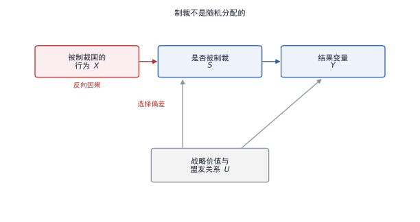
| 编号 | 简称 | 期刊与卷期 | 年份 | 难度 | 识别策略 | 数据形态 |
|---|---|---|---|---|---|---|
| S01 | Farrell & Newman 2019 | International Security 44(1) | 2019 | 1 | 网络结构论证 | 关系边 |
| S02 | Fajgelbaum 等 2020 | The Quarterly Journal of Economics 135(1) | 2020 | 2 | 关税冲击＋弹性估计 | 面 |
| S03 | Amiti 等 2019 | Journal of Economic Perspectives 33(4) | 2019 | 2 | 关税传递回归 | 面 |
| S04 | Ilzetzki 等 2019 | The Quarterly Journal of Economics 134(2) | 2019 | 2 | 汇率制度分类＋面板 | 面 |
| S05 | Gopinath 等 2020 | American Economic Review 110(3) | 2020 | 3 | 主导货币定价检验 | 面 |
| S06 | Morgan 等 2014 | Conflict Management and Peace Science 31(5) | 2014 | 1 | 威胁—实施两阶段 | 面 |
| S07 | Benguria 等 2022 | Journal of International Economics 137 | 2022 | 2 | 企业层面差分 | 面 |
| S08 | Crozet & Hinz 2020 | Economic Policy 35(101) | 2020 | 2 | 三重差分 | 面 |
| S09 | Ahn & Ludema 2020 | European Economic Review 130 | 2020 | 4 | 网络中心性＋结构估计 | 关系边 |
| S10 | Kelley & Simmons 2019 | International Organization 73(3) | 2019 | 1 | 指标作为治理工具 | 面 |
| S11 | Chen 2023 | International Security 48(2) | 2023 | 4 | 供应链网络模型 | 关系边 |
| S12 | Cha 2023 | International Security 48(1) | 2023 | 1 | 依赖性测量与比较 | 关系边 |
| S13 | Petry 2022 | European Journal of International Relations 29(2) | 2022 | 1 | 过程追踪与描述 | 线 |
10.1 把制裁拆成两个阶段
据 S06 的做法，制裁须拆成威胁与实施两个阶段；第一阶段是威胁是否发出，第二阶段是威胁是否被执行。两阶段的决定因素不同，混在一起估计会把两种选择偏差叠加；
| 符号 | 含义 | 观察难点 |
|---|---|---|
| $S_i$ | 是否被制裁或被威胁 | 可观测，但选择机制不可观测 |
| $Z_i$ | 影响制裁决定的因素 | 战略价值、盟友关系、国内政治 |
| $u_i$ | 选择方程中的未观测项 | 与 $\varepsilon_i$ 相关时 $\beta$ 有偏 |
| $\beta$ | 制裁对结果的影响 | 目标参数 |
此式说明为什么「比较被制裁与未被制裁」不可靠；只要 $u_i$ 与 $\varepsilon_i$ 相关，$\beta$ 的估计就混入了选择项。破解办法只有两个；一是找到影响制裁决定但不影响结果的因素，二是把比较限定在制裁概率接近的单元之间。
10.2 网络位置即权力
据 S01 与 S09 的做法，经济治国研究把网络位置当作权力的载体；掌握枢纽节点的国家可以通过切断连接施压，而不必动用武力；这一想法可以写成中心性的函数，见式 (7.5)。
据 S09 的估计，定向制裁的成本取决于目标企业在所有权网络中的位置；位置越靠近枢纽，制裁的传导越强；这一发现把制裁研究从「是否有效」推进到「对谁有效」；
10.3 关税的两条渠道
据 S03 与 S07 的做法，关税研究须区分两条渠道。
- 条是价格渠道，关税通过进口价格传递到国内物价。
- 条是不确定性渠道，企业在政策未定时推迟投资。两条渠道的方向可能相反，合并估计会把它们抵消。。
10.4 第二部分 文献拆解
据前三节的综述，以下三篇按同一线索拆开；三篇分别解决三个层次的难题；第一，把制裁对象精确到产品；第二，把福利账算到消费者；第三，把「宣布但未实施」这一时间窗单独拿出来；
拆解一 Crozet 与 Hinz（2020）：把「友军误伤」写成三重差分
问题意识；据该文的设定，二零一四年以后欧盟对俄罗斯实施制裁，俄罗斯随即反制；制裁清单按产品与对象划定；问题是。被制裁的法国企业在俄罗斯市场上的出口下降；有多少来自制裁本身，有多少来自俄罗斯经济下滑，若只比较制裁前后的对俄出口，两个来源分不开。
为什么这一问题在制裁研究中反复出现；制裁总是与宏观经济恶化同时发生；观察到的贸易下降既可能是政策所致，也可能是需求萎缩。要分开两者，必须找到一组「同样面向俄罗斯市场、但未被列入清单」的产品作为对照；
数据的边界；观测单元取企业—产品—目的地—年的四维组合；数据包括法国海关的出口记录、制裁清单的产品编码与生效日期、以及各国市场规模。四维结构是这一设计的前提；没有产品维度；就无法区分被制裁与被波及；没有目的地维度，就无法构造对照；时间上须覆盖生效前后各若干年，以便观察调整。
海关数据的单位必须统一；出口额用欧元计价，而制裁可能同时影响汇率与数量。该文的处理是采用出口额而非数量。并在稳健性中报告以离岸价计价的结果，以排除计价货币的变化；
变量怎样被造出来；第一步，把制裁清单翻译成产品编码，得到「该产品是否被制裁」的二值变量。
- ，把目的地分成俄罗斯与其他国家。
- ，把时间分成制裁前后。三个二值变量相乘，得到三重交互项，只有这一项同时变动三次。。
为什么不用更简单的办法；一种替代是比较制裁前后的对俄出口，但缺少对照；另一种替代是比较对俄与对其他国家，但各国市场本身的走势不同。三重差分把两个维度都当作对照，只留下「被制裁的产品在俄罗斯市场上」这一格的变化；
| 符号 | 含义 | 取值 | 在本文中的作用 |
|---|---|---|---|
| $f$ | 企业下标 | 企业识别码 | 观测维之一 |
| $p$ | 产品下标 | 海关编码 | 观测维之二 |
| $d$ | 目的地下标 | 国家代码 | 观测维之三 |
| $t$ | 年份 | 整数年 | 观测维之四 |
| $X_{fpd,t}$ | 出口额 | 欧元，取对数 | 结果变量 |
| $S_p$ | 该产品是否被列入制裁清单 | 0 或 1 | 处理的产品维度 |
| $R_d$ | 目的地是否为俄罗斯 | 0 或 1 | 处理的目的地维度 |
| $T_t$ | 是否在制裁生效之后 | 0 或 1 | 处理的时间维度 |
| $\beta$ | 三重交互的系数 | 待估 | 核心参数 |
| $\mu_{fp},\lambda_{pd},\delta_{dt}$ | 企业—产品、产品—目的地、目的地—年固定效应 | — | 吸收三组两两不变的差异 |
方程怎么从假设推出来；第一步，写出每一格的出口方程，含企业能力、产品在目的地的一般需求与年度冲击三项。第二步，把三项分别写成三重固定效应。第三步，加入三重交互，代表只有「被制裁产品 × 俄罗斯 × 之后」这一格才有的额外变化。第四步检查。三重交互的变动必须不被任何一个固定效应吸收，否则模型无法识别；
论证链条；据该文的推进，共四步。
- ，只放「对俄出口 × 制裁后」，系数为负，但其中混着俄罗斯经济下滑。第二步，加入产品—目的地固定效应，把「该产品本来在俄罗斯卖得好不好」吸收掉；第三步，加入三重交互，系数仍为负且幅度收窄。
- ，用未被制裁但受反制影响的产品做安慰剂。第三步与第四步合起来，才把「制裁本身」从「整体下滑」中剥出来。。
稳健性与争议；据该文的做法，检验包括三项：改变制裁生效日的前后窗口，排除制裁前一年已下滑的产品，按企业规模分组。第二项最关键，若被制裁产品在制裁前已在下滑，三重差分仍会有偏，争议在于反制清单与制裁清单部分重叠，安慰剂组并不完全干净。
可迁移的三点；第一，三重差分要求三个维度各自有对照。
- ，固定效应的层级必须与交互项匹配，否则会吸收掉要估的变异。
- ，安慰剂组要选「同受冲击但未被处理」的单元。
这一篇留下的问题；反制清单与制裁清单部分重叠，安慰剂组因此并不完全干净。重叠部分的比例决定了安慰剂检验的强度，而该文只报告了清单的行业分布，未逐项核对重叠。另一个遗留问题是企业退出与贸易转移：出口下降可能只是换了承运方。这两条都指向同一个技术条件。需要企业层面的中间投入数据，才能判断下降发生在哪一段；
拆解二 Fajgelbaum 等（2020）：把关税的福利账拆成三项
问题意识；据该文的设定，二零一八年美国对数千种进口品加征关税，贸易伙伴随即反制。公众讨论集中在「谁付钱」，该文要回答的是关税由谁承担、总福利变动多少、以及反制造成的额外损失有多大。
为什么必须同时回答三个问题；只回答「谁付钱」，无法判断政策是否值得；只回答总福利；会掩盖分布效应；只回答反制，会忽略本国关税自身的成本。三个问题对应福利分解的三个项，缺一项就不能下结论；
数据的边界；观测单元取进口品—来源国—月；数据包括关税税率变动、进口额与进口价格、以及各国对美出口的产品结构。税率变动是外生的政策变量，这是全套分析的基础。时间上须区分宣布月与实施月，否则传递率会被稀释。
税率的口径也要统一；从价税与从量税混在一起时，税率变动无法直接比较。该文把从量税换算成等价的从价税率。换算依据是加征前的进口单价，这一步决定了关税冲击的口径一致性；
变量怎样被造出来；第一步，按产品与来源国计算关税差额；第二步，把差额按进口份额加权，得到每个产品的平均税率变动。第三步，用文献中的进口需求弹性换算成数量与价格的变动。弹性取自外部估计，不在本文内部估计，这一点决定了全文属于充分统计量路线；
为什么不用更简单的办法；一种替代是估计一个结构模型再算反事实，但结构模型对函数形式敏感。另一种替代是只报告税率变动，但税率不等于福利。充分统计量路线放弃了模型的完整刻画，换取了对少数参数的稳健性；
代价在参数的外部性；弹性取自其他文献，若这些文献的情境与美国进口市场不同，福利数值会有系统偏差，故该文把弹性作为敏感性参数处理，给出区间而非点估计，这一做法值得在同类研究中沿用；
| 符号 | 含义 | 取值或单位 | 在本文中的作用 |
|---|---|---|---|
| $\Delta\tau_{mp}$ | 产品 $m$ 从来源国 $p$ 进口的关税率变动 | 百分点 | 外生政策变量 |
| $\Delta\ln p_{mp}$ | 进口价格的变动 | 对数差 | 结果变量之一 |
| $\psi$ | 关税向进口价格的传递率 | 0 到 1 | 核心参数，接近 1 表示完全传递 |
| $q_m$ | 进口数量 | 实物单位 | 计算消费者损失用 |
| $M_m$ | 进口额 | 美元 | 计算关税收入用 |
| $\mathrm{CS}$ | 消费者剩余项 | 美元，负值 | 价格上涨的代价 |
| $\mathrm{TR}$ | 关税收入项 | 美元，正值 | 政府所得 |
| $\mathrm{PS}$ | 生产者剩余项 | 美元，正值 | 本国企业所得 |
| $\Delta W$ | 总福利变动 | 美元 | 最终结论 |
方程怎么从假设推出来；第一步，假定关税以一定比例传递到进口价格。
- ，用需求弹性把价格变动换算成数量变动；第三步，把消费者损失写成价格变动乘数量。
- ，把关税收入写成税率乘进口额，再减去国内生产者因价格上涨获得的收益。四步之后，福利只依赖传递率与弹性两个参数，故必须对这两个参数做敏感性。。
论证链条；据该文的推进，共四步。
- ，估计传递率，发现接近完全传递，即关税主要由美国进口商与消费者承担；第二步，按上式加总三项，得到净福利为负但幅度不大。
- ，单独计算反制的影响，发现农业部门损失集中；第四步，用多国模型做一般均衡核算，检验贸易转移是否抵消部分损失。第三步是政策含义的来源：总量损失小，但分布极不均匀。。
稳健性与争议；据该文的做法，检验包括；换用不同的需求弹性；把传递率设为 1 做上界；改变一般均衡模型的 closure。第一项最关键；弹性的取值直接决定福利数值，故必须报告一组而不是一个。争议在于贸易转移带来的第三国收益是否应计入本国福利。
可迁移的三点；第一，充分统计量路线不需要估计结构参数，但需要外部弹性。
- ，福利分解必须逐项列出，只报合计无法支撑政策讨论。
- ，分布效应与总量效应要分开报告。
这一篇留下的问题；贸易转移给第三国带来的收益是否应计入本国福利，取决于核算口径。该文在一般均衡部分采用全球视角，故其总福利数值不能直接与只算本国的研究比较。另一个遗留问题是关税的收入效应在财政年度之间如何分配。若把关税收入计入福利而不扣除其扭曲成本，净损失会被系统性低估；
拆解三 Benguria 等（2022）：把「宣布」当作独立的处理
问题意识；据该文的设定，关税从宣布到实施之间有一段空窗期；企业在空窗期内不知道最终税率，因而推迟投资与招聘。该文把「不确定性」本身当作一种处理，与「实际关税」分开识别。
为什么这一区分重要；若只估计实施后的效应，会把不确定性阶段的反应也算进实际关税，从而高估关税的直接影响。反过来，若政策在宣布后即被市场消化，那么实施日的效应就会接近于零；两种情形对应完全不同的政策含义。
数据的边界；观测单元取中国上市公司—季度；数据包括企业对美出口的暴露度、关税宣布与实施的日期、以及企业的投资、利润与就业。三个日期必须分开；宣布日、实施日、以及豁免清单公布日；季度频率是必需的，因为空窗期往往不足一年。
变量怎样被造出来；第一步，用企业年报中的出口结构计算对美暴露度；第二步，构造两个时间变量，分别标记宣布之后与实施之后。第三步，把暴露度与两个时间变量相乘，得到两个交互项。两个交互项的差，就是纯不确定性效应；
为什么不用更简单的办法；一种替代是用政策不确定性指数，但该指数是全国性的，无法识别企业层面的暴露差异。另一种替代是比较受关税影响与不受影响的行业，但行业层面的冲击与国家层面的不确定性同时变动。交互项的设计把「何时」与「谁受影响」分开，这是它优于总量指标的地方；
| 符号 | 含义 | 取值 | 在本文中的作用 |
|---|---|---|---|
| $i$ | 企业下标 | 上市代码 | 观测单元 |
| $t$ | 季度 | 整数季度 | 时间维度 |
| $y_{it}$ | 投资、利润或就业 | 按结果而定 | 结果变量 |
| $E_i$ | 企业对美出口暴露度 | 份额，0 到 1 | 横截面维度 |
| $A_t$ | 关税宣布之后的指示 | 0 或 1 | 时间维度之一 |
| $I_t$ | 关税实施之后的指示 | 0 或 1 | 时间维度之二 |
| $\beta_1$ | 宣布期的效应 | 待估 | 不确定性渠道 |
| $\beta_2$ | 实施期的效应 | 待估 | 实际关税渠道 |
| $\mu_i,\lambda_t$ | 企业与季度固定效应 | — | 吸收两类不变因素 |
方程怎么从假设推出来；第一步，把企业的投资决定写成预期回报与融资成本的函数；第二步，把预期回报写成关税概率与税率的乘积，概率在宣布后上升、在实施后确定。第三步，用两个时间指示把概率的两次跳变分开。第四步，与企业暴露度相乘，把总量冲击转换成企业层面的处理。第三步是关键。概率在实施后不再上升，故 $\beta_2$ 捕捉的是水平效应，不是不确定性；
论证链条；据该文的推进，共三步；第一步，只放实施期的交互项，得到负系数；第二步，加入宣布期的交互项，发现$\beta_1$ 显著为负而 $\beta_2$ 变化不大。这说明大部分效应在关税落地之前就已发生。第三步，按企业融资约束分组，发现受约束企业反应更强。第三步把「不确定性」这一抽象渠道落到可观测的企业特征上；
稳健性与争议；据该文的做法，检验包括；排除同期其他政策；改用行业层面的暴露度；检查宣布日是否被提前泄露。第三项最关键，若市场提前反应，宣布期的系数会被低估。争议在于汇率与订单转移可能同时发生，两者都会压低出口企业的投资。
可迁移的三点；第一，政策的时间结构本身可以成为处理变量。
- ，两个交互项的差比单个系数更有解释力。
- ，渠道检验要落在企业可观测的约束条件上。
数据从哪里来；企业财务数据取自定期报告，关税清单取自贸易代表署公告，出口结构取自年报附注。年报的口径在样本期内有变化，故该文把行业分类统一到同一版本，并剔除无法匹配的企业；
与同章另两篇的分工；Crozet 与 Hinz 用海关的四维数据，Fajgelbaum 等用产品—来源国—月的数据，本篇用企业—季度的数据。三者的频率依次提高，样本范围依次缩小，可回答的问题也从「贸易额」转向「企业投资」；
这一方法的前提条件；宣布日与实施日必须能精确到季度，否则两阶段无法分开。若某项政策一次性宣布并即时生效，两个时间指示会重合。系数无法分辨，此时只能退回到单阶段估计，该文能够成立，靠的是这一轮关税分批公布、分批实施的制度细节。换到一次性宣布的制度环境，同样的方法无法识别。这一限制说明该设计依赖具体的政策过程。移植之前应先确认目标情境的政策过程是否同样分批；否则须另找识别来源，不能照搬时间指示。
11专题四 国际制度、援助与发展
据第 4 章的谱系，这一组文献的外生信息最稀缺；制度由政治过程产生，援助由战略动机分配，两者都无法直接操纵。故这一组的多数文献停留在第 1 级与第 2 级，只有少数借助轮换、门槛或调查实验向上走。
| 编号 | 简称 | 期刊与卷期 | 年份 | 难度 | 识别策略 | 数据形态 |
|---|---|---|---|---|---|---|
| I01 | Alesina & Dollar 2000 | Journal of Economic Growth 5(1) | 2000 | 1 | 双边援助面板回归 | 面 |
| I02 | Abbott & Snidal 2000 | International Organization 54(3) | 2000 | 1 | 概念化的可测维度 | 面 |
| I03 | Nielson & Tierney 2003 | International Organization 57(2) | 2003 | 2 | 委托—代理回归 | 面 |
| I04 | Dreher 等 2009 | Journal of Development Economics 88(1) | 2009 | 3 | 安理会席位作为外生变动 | 面 |
| I05 | Haftel & Thompson 2006 | Journal of Conflict Resolution 50(2) | 2006 | 1 | 指标构造与相关 | 面 |
| I06 | Blair 等 2021 | British Journal of Political Science 52(3) | 2022 | 2 | 调查实验＋地理分配 | 面 |
| I07 | Abbott 等 2021 | The Review of International Organizations 17(2) | 2021 | 1 | 制度重叠的描述统计 | 面 |
| I08 | Carnegie & Marinov 2017 | American Journal of Political Science 61(3) | 2017 | 3 | 自然实验 | 面 |
| I09 | Tallberg 等 2020 | International Studies Quarterly 64(3) | 2020 | 1 | 文本编码与回归 | 面 |
| I10 | Blair 等 2021b | World Politics 73(2) | 2021 | 2 | 调查实验 | 面 |
| I11 | Koremenos 等 2001 | International Organization 55(4) | 2001 | 1 | 设计维度的概念化 | 面 |
| I12 | Putnam 1988 | International Organization 42(4) | 1988 | 1 | 两层博弈框架 | 面 |
11.1 把制度拆成可测维度
据 I02 与 I11 的做法，制度研究的第一个技术动作是把概念拆成可编码的维度；I02 把法律的硬度拆成义务、精确与授权三项：I11 把制度设计拆成成员数、范围、集中度、灵活性与控制五项。拆维度的价值在于；每一维都可以独立编码，编码之后才能进回归表；
11.2 轮换与门槛作为外生变动
据 I04 的做法，联合国安理会很任理事国的席位按地区轮换；这一轮换与受援国的经济状况无关，却会改变该国获得贷款的条件；于是席位成为一种近似随机的处理分配。
| 外生来源 | 为什么近似外生 | 本库编号 |
|---|---|---|
| 安理会席位轮换 | 按地区分组与字母顺序轮换 | I04 |
| 项目审批门槛 | 评分刚好过线的项目与略差的项目近似可比 | I08 |
| 援助来源差异 | 不同捐助国的项目覆盖不同地区 | I06、I10 |
11.3 调查实验补足宏观数据
据 I06 与 I10 的做法，援助的合法性效应无法从宏观数据看出，只能用调查实验测量。实验给出的是个体层面的因果效应，宏观回归给出的是聚合关系，两者不能互相替代。把两者并列报告，是目前这一组的通行写法。
11.4 第二部分 文献拆解
据前三节的综述，以下两篇按同一线索拆开；两篇合起来说明这一组的两种起手式；一篇从分配方程出发，一篇把轮换当外生变动；
拆解一 Alesina 与 Dollar（2000）：把援助动机写成两条通道
问题意识；据该文的设定，援助国宣称援助出于受援国的需要与治理水平，但观察到的分配模式显示，前殖民地、贸易伙伴与联合国投票一致的国家拿到更多。该文要回答的是哪一种动机在数据里占主导，以及不同捐助国之间是否存在系统差异。
为什么这构成一个可检验的问题；「动机」不是可直接观测的量，但它对应不同的可观测变量；需要动机对应受援国收入，治理动机对应民主程度，战略动机对应殖民关系与投票一致性。把三种动机映射到三组变量之后，问题就变成系数大小与显著性的比较；
数据的边界；观测单元取援助国—受援国—年；数据包括双边援助额、受援国人均收入、民主程度、殖民关系、贸易额与联合国投票一致性。观测单元必须带捐助国维度，否则无法比较不同捐助国的动机差异。时间上须覆盖冷战与后冷战两个阶段，以便比较战略动机的强弱。
援助额要区分承诺与实际支付；承诺额反映政治意愿，实际支付反映执行能力。该文以实际支付为准，理由是承诺额在年度之间波动过大，且部分承诺从未兑现；
变量怎样被造出来；第一步，把援助额除以受援国人口，得到人均援助。
- ，把民主程度转成有序变量；第三步，把殖民关系转成「是否曾有殖民联系」与「是否同一语言」两个二值变量。
- ，把联合国投票一致性转成百分比。四步都在做同一件事：把概念转成可比较的数值。。
为什么不用更简单的办法；一种替代是只放收入与民主，但遗漏战略变量会让两个系数被高估；另一种替代是把援助国固定效应全部放入，但这样会吸收掉捐助国之间的一切差异，无法比较动机。分组估计是这两难之间的折中：先混合估计，再按捐助国分组；
| 符号 | 含义 | 取值或单位 | 在本文中的作用 |
|---|---|---|---|
| $i$ | 援助国下标 | 国家代码 | 区分捐助国动机 |
| $j$ | 受援国下标 | 国家代码 | 被分配的一方 |
| $t$ | 年份 | 整数年 | 时间维度 |
| $\mathrm{Aid}_{ijt}$ | 人均援助额 | 美元，取对数 | 结果变量 |
| $\ln Y_{jt}$ | 受援国人均收入的对数 | 美元 | 需要动机的核心变量 |
| $\mathrm{Dem}_{jt}$ | 受援国民主程度 | 有序取值，低到高 | 治理动机 |
| $\mathrm{Col}_{ij}$ | 是否存在殖民联系 | 0 或 1 | 战略与历史动机 |
| $\mathrm{UN}_{ijt}$ | 与援助国的联合国投票一致性 | 百分比 | 政治动机 |
| $\beta_1,\beta_2$ | 需要与治理的系数 | 待估 | 若 $\beta_1\lt 0$ 且 $\beta_2\gt 0$，说明兼顾两者 |
| $\mu_t$ | 年固定效应 | — | 吸收全球援助总量波动 |
方程怎么从假设推出来；第一步，假定捐助国的效用由受援国的需要、治理水平与自身战略收益三项构成。第二步，把效用最大化的一阶条件近似成线性分配规则。
- ，把三项分别映射到收入、民主与殖民投票变量。
- ，加入年固定效应吸收全球总量。四步之后，系数的相对大小就是三类动机的相对权重。。
论证链条；据该文的推进，共三步。
- ，混合全部捐助国估计，发现收入与民主的系数方向符合「需要与治理」。
- ，加入殖民与投票变量，需要与治理的系数不消失，说明两类动机同时存在；第三步，按捐助国分组重估，发现北欧国家的治理系数更大，法国的殖民系数更大。第三步把「平均而言」推进到「谁更看重什么」。。
稳健性与争议；据该文的做法，检验包括；改变援助的定义；分别取总额与人均；把样本限定在冷战后；改变民主指标的来源。第二项最关键；冷战时期的战略动机更强，若去掉冷战期结论不变，说明结论不依赖两极格局，争议在于联合国投票一致性本身可能是援助的结果，而非原因。
可迁移的三点；第一，分配方程要同时放入两类动机，否则系数互相污染。
- ，分组估计比平均系数更有信息量。
- ，把概念转成可比数值的四步，是全部制度研究的起手式。
这一篇留下的问题；联合国投票一致性与援助额互相影响，构成联立方程。该文以滞后一期的投票一致性做替代，属于缓解而非解决。另一个遗留问题是援助的部门构成未进入方程，而部门差异可能改变动机的估计。把援助拆成基础设施、教育与治理三类重估，是后续文献常用的一步；
还有一个口径问题；援助额若按当年汇率换算，汇率波动会被读成援助变化，该文以美元不变价计价，并在附录报告以尤其提款权计价的结果；两者的差别决定了结论是否稳健；
拆解二 Dreher、Sturm 与 Vreeland（2009）：把轮换席位当作外生变动
问题意识；据该文的设定，世界银行的贷款决定是否受主要股东国的政治影响；直接检验的办法是比较受美国影响大的国家与影响小的国家，但「影响大」本身与受援国的经济状况相关。该文找到了一个与受援国状况无关的变动：联合国安理会很任理事国的轮换；
为什么轮换可以充当外生变动；很任理事国按地区分组选举，任期两年，不得连任。一个国家能否进入安理会，主要取决于所在地区当年的竞争格局，这一格局与它的贷款需求关系较弱；这构成了一个近似随机的处理分配。
数据的边界；观测单元取受援国—年；数据包括四项；世界银行项目的批准金额、安理会席位归属、联合国投票记录与受援国经济指标。席位按地区分组轮换，任期两年，这一制度安排是外生性的全部来源。时间上须覆盖足够多的轮换周期，以保证组内有变动。
变量怎样被造出来；第一步，按年份编码每个国家是否在安理会任职；第二步，把贷款额按人均或占 GDP 比重标准化；第三步，构造「与美国投票一致性」的连续变量，用于分组。第三步是全文最关键的一步；它把「政治影响」从抽象概念变成可交互的变量；
为什么不用更简单的办法；一种替代是用「是否为美国盟友」，但盟友身份长期不变，会被国家固定效应吸收。另一种替代是用援助额，但援助与贷款由不同机构决定。轮换的优点是它提供组内变动，且变动时点可观测；
| 符号 | 含义 | 取值或单位 | 在本文中的作用 |
|---|---|---|---|
| $i$ | 受援国下标 | 国家代码 | 观测单元 |
| $t$ | 年份 | 整数年 | 时间维度 |
| $\mathrm{Loan}_{it}$ | 世界银行对该国的贷款额 | 美元，或占 GDP 比重 | 结果变量 |
| $\mathrm{UNSC}_{it}$ | 该国是否在安理会任职 | 0 或 1 | 核心解释变量 |
| $X_{it}$ | 经济与政治控制变量 | 人口、收入、民主程度 | 排除竞争解释 |
| $\gamma$ | 控制变量的系数向量 | 待估 | — |
| $\beta$ | 任安理会很任理事国对贷款的影响 | 待估参数 | 核心系数 |
| $\mu_i,\lambda_t$ | 国家与年固定效应 | — | 吸收不变因素与全球贷款周期 |
方程怎么从假设推出来；第一步，假定贷款审批由项目质量与股东国偏好两项决定；第二步，把股东国偏好写成「该国当前是否对股东国有用」。第三步，用安理会席位代理「当前是否有用」，因为席位带来的投票价值是短期的，第四步，加入国家与年固定效应，只留下席位变动引起的组内变化。第三步的代理是否成立，取决于席位价值是否真的短期且可观；
论证链条。据该文的推进，共四步；第一步，只放席位变量，系数为正；第二步，加入国家与年固定效应，系数仍为正，幅度略降。第三步，按与美国投票一致性分组，发现一致度高的国家在任期内获得的贷款增加更多。第四步，比较国际开发协会与国际复兴开发银行，发现前者更敏感。第四步的作用是定位机制。优惠贷款更易受政治影响，因为其审批更不透明；
稳健性与争议；据该文的做法，检验包括；排除任期次年；检查是否由「即将离任」驱动；加入地区—年固定效应；用项目数量替代金额。第一项最关键，若效应集中在任期第一年，说明它是「回报」而非「预期」，争议在于进入安理会的国家可能本就更受关注，选择效应无法完全排除。
可迁移的三点；第一，制度性轮换是这一组最可用的外生来源。
- ，交互分组要事先指定，不能事后挑选。
- ，两种贷款窗口的对比本身就是机制检验。
数据从哪里来；贷款金额取自世界银行项目数据库，席位归属取自安理会年度记录，投票数据取自联合国大会 roll-call。三套数据的国家编码须统一，否则会出现同名不同码的问题，该文在附录列出对照表；
与同章另一篇的分工；Alesina 与 Dollar 用分配方程刻画长期模式，本篇用轮换刻画短期变动。前者回答「谁拿得多」，后者回答「什么时候拿得更多」，两者合起来才构成完整证据；
这一方法的前提条件；席位轮换必须与受援国的贷款需求无关；若地区内的竞争激烈程度与该国经济状况相关，外生性就会受损。故该文加入地区—年固定效应，只比较同一地区同一年份内有无席位的差别。这一处理把识别限制在很窄的变异上，样本效率因此下降。
12专题五 网络、依赖与等级
据 7.4 节的模型，当观测是边时，独立性假设失效；这一组的全部技术工作，都是为「依赖」找到一个可估计的表达形式；
| 编号 | 简称 | 期刊与卷期 | 年份 | 难度 | 识别策略 | 数据形态 |
|---|---|---|---|---|---|---|
| N01 | Carvalho 等 2021 | The Quarterly Journal of Economics 136(2) | 2021 | 4 | 网络传播模型 | 关系边 |
| N02 | Banerjee 等 2013 | Science 341(6144) | 2013 | 4 | 网络中心性＋工具变量 | 关系边 |
| N03 | Boehm 等 2019 | The Review of Economics and Statistics 101(1) | 2019 | 4 | 投入产出网络＋企业差分 | 关系边 |
| N04 | Cranmer & Desmarais 2011 | Political Analysis 19(1) | 2011 | 4 | 指数随机图模型 | 关系边 |
| N05 | Elliott 等 2022 | American Economic Review 112(8) | 2022 | 5 | 网络形成＋一般均衡 | 关系边 |
| N06 | Dorussen & Ward 2008 | Journal of Conflict Resolution 52(2) | 2008 | 3 | 网络加权＋冲突回归 | 关系边 |
| N07 | Maoz 等 2007 | The Journal of Politics 69(1) | 2007 | 3 | 结构平衡指数 | 关系边 |
| N08 | Cederman 等 2009 | World Politics 61(3) | 2009 | 3 | 三元组逻辑斯蒂回归 | 关系边 |
| N09 | Cranmer 等 2012 | Conflict Management and Peace Science 29(3) | 2012 | 4 | 指数随机图＋时间指数 | 关系边 |
| N10 | Kinne 2013 | American Political Science Review 107(4) | 2013 | 4 | 随机行为者导向模型 | 关系边 |
| N11 | Ward 等 2013 | Network Science 1(1) | 2013 | 4 | 动态潜在空间模型 | 关系边 |
12.1 三种网络因变量
据本组十一篇文献的用法，网络因变量可以分三种。
- 种是单条边，例如两国是否结盟；第二种是整张图，例如某年的联盟网络结构。
- 种是节点的位置，例如某国的中心性。三种因变量对应三套完全不同的估计方法，混用会得到无法解释的系数。。
| 因变量 | 估计方法 | 本库编号 |
|---|---|---|
| 单条边 | 逻辑斯蒂回归加聚类，或潜在空间 | N06、N07、N11 |
| 整张图 | 指数随机图，或随机行为者导向模型 | N04、N09、N10 |
| 节点位置 | 先算中心性，再当普通变量回归 | N02、N08 |
12.2 依赖的两种测量
据 S12 与 N01 的做法，依赖可以按集中度测量，也可以按传播效应测量；集中度衡量一个国家的进口或出口集中在少数来源的程度；传播效应衡量一个冲击在网络中扩散的幅度。前者是静态的结构指标，后者需要动态数据与网络模型；
12.3 传播的识别难题
据 N01 与 N03 的做法，识别网络传播需要两类外生变动；第一类是节点层面的外生冲击，例如地震摧毁了某家工厂；第二类是网络结构的外生变动，例如某条联系因政策中断。只有冲击外生而网络不变时，才能把结果差异归因于传播；
12.4 第二部分 文献拆解
据前三节的综述，以下两篇按同一线索拆开；两篇分别处理网络的两种用法；把关系压缩成坐标，把关系当成扩散的通道；
拆解一 Ward、Ahlquist 与 Rozenas（2013）：把亲疏压成坐标
问题意识；据该文的设定，引力模型解释双边贸易时，通常加入共同语言、殖民历史、同盟、边界等一串虚拟变量，这些变量彼此相关，且无法穷尽「两国到底亲不亲」，该文换了一个提法。把国家放进一个低维空间，用空间距离替代全部虚拟变量；
为什么这一替换值得做；虚拟变量只能刻画「有」或「无」某种关系，无法表达程度，而两国之间的亲疏是连续的、随时间变化的，且由许多不可观测因素共同决定；潜变量把「多少」这一维度还给模型；
数据的边界；观测单元取国家对—年；数据包括双边贸易流量、两国 GDP、地理距离，以及时间序列上连续多年的观测。必须用面板，因为坐标要随年份移动，才能刻画关系的演化。时间上不能有太多缺失年份，否则坐标的移动无法识别。
国家对的数量决定了可识别的维数；若国家数为 $N$，则坐标的维数至多约为 $N/2$，超过这个上限模型无法收敛。这是潜在空间法在实践中被限制在二到三维的原因，不是理论上的选择；
变量怎样被造出来；第一步，把贸易流量取对数；第二步，把 GDP 与地理距离作为可观测的外生变量放入。第三步是全套设计的核心。给每个国家一组坐标，坐标不直接观测，由模型估计出来。第四步，把两国坐标的欧氏距离作为「综合亲疏」进入方程。
为什么不用更简单的办法；一种替代是用主成分分析把国家属性降维，但属性降维不刻画「成对关系」。另一种替代是加入全部国家对固定效应，但这样无法解释变化。潜在空间同时解决了降维与成对关系两个问题；
代价是失去可解释性；坐标的两个维度没有天然含义，只能事后用外部变量解读。该文对此的处理是把坐标与已知的政治事件对齐，属于事后叙事，不是模型内部的检验；
| 符号 | 含义 | 取值或单位 | 在本文中的作用 |
|---|---|---|---|
| $i,j$ | 国家对的下标 | 国家代码 | 观测单元 |
| $t$ | 年份 | 整数年 | 坐标随时间更新的维度 |
| $T_{ijt}$ | 双边贸易额 | 美元，取对数 | 结果变量 |
| $Y_{it},Y_{jt}$ | 两国的经济规模 | GDP，取对数 | 可观测的引力项 |
| $z_{it}$ | 国家 $i$ 在第 $t$ 年的坐标向量 | 两维或三维实数 | 待估的隐变量 |
| $\lVert z_{it}-z_{jt}\rVert$ | 两国坐标的欧氏距离 | 非负实数 | 替代虚拟变量的综合亲疏 |
| $\alpha,\beta$ | 经济规模的弹性 | 待估，预期为正 | 引力项系数 |
| $\gamma$ | 距离的抑制强度 | 待估，预期为正 | 核心参数 |
| $\mu_t$ | 年固定效应 | — | 吸收全球贸易总量波动 |
方程怎么从假设推出来；第一步，假定贸易量随双方规模上升、随成本下降。
- ，假定成本由可观测的地理距离与不可观测的综合亲疏共同构成；第三步，用潜在坐标的欧氏距离表示综合亲疏。
- ，假定坐标随时间按随机游走演化，从而把多年数据连成一个动态模型。第四步是动态版本的关键，静态版本只需一个坐标。。
论证链条；据该文的推进，共三步；第一步，用普通引力模型估计，得到基准系数；第二步，加入潜在空间距离，发现它显著且大幅改善拟合。第三步，把估计出的坐标随年份画出来，检查移动是否与已知的政治事件同步。第三步是这一方法唯一的验证途径。坐标本身没有量纲，只能靠外部事件解读；
稳健性与争议；据该文的做法，检验包括；改变空间维数；改变先验分布；把贸易流量换成同盟或冲突关系。第一项最关键；维数改变会改变坐标，但不应改变距离的系数符号。争议在于坐标的旋转不唯一，同一模型可以有无限多组等价坐标。
可迁移的三点；第一，隐变量可以把成百上千个虚拟变量压缩成两个数。
- ，压缩的代价是失去可解释性，故必须用外部事件校验。
- ，面板结构让「关系的变化」成为可估计的对象。
这一篇留下的问题；坐标在空间中的旋转不唯一，同一拟合优度可以对应无数组等价坐标。该文以外部事件对齐来固定旋转，属于事后选择，无法排除叙事偏差。另一个遗留问题是维数的选择缺少统计检验，只报告了不同维数下的稳定性。缺少检验意味着维数仍是一个研究者的判断，而非数据的结论；
这一点的实际后果；维数增加会让坐标更贴合数据，但也会吸收噪声。若把维数当作调参项，任何结论都可以通过增加维数得到，故该文只报告二到三维，并说明理由来自解释力而非拟合；
拆解二 Banerjee、Chandrasekhar、Duflo 与 Jackson（2013）：把地理距离换成网络距离
问题意识；据该文的设定，一项小额信贷项目在印度村庄推广；参与率在村庄内部差异很大；问题是。这种差异来自个体的经济条件，还是来自邻居的影响，若只比较参与者的邻居与非邻居，会遇到「朋友是自己选的」这一内生性。
为什么必须做网络普查；抽样网络只能看到被访者提到的少数关系，无法算出完整的距离。只有全村普查，才能计算每个家庭到种子的网络最短路。这是这一研究在数据上最昂贵的地方。
数据的边界；观测单元取家庭，观测层级为村庄；数据包括完整的社会网络普查、家庭经济特征、以及信贷参与记录。网络普查是这一设计的前提。只有拿到全部关系边，才能计算网络距离；时间上须有参与前的基线调查，以便控制事前差异。
变量怎样被造出来；第一步，把家庭间的借贷与交谈关系写成邻接矩阵；第二步，计算每个家庭到「种子家庭」的网络最短路；第三步，把网络距离与地理距离同时放入。第四步是识别关键；种子家庭由项目方指定，其位置与家庭特征无关；
为什么不用更简单的办法；一种替代是用「同村其他人的参与率」，但这一变量与村庄共同冲击相关；另一种替代是用地理邻居的参与率，但它无法区分「因为住得近」与「因为认识」。
| 符号 | 含义 | 取值或单位 | 在本文中的作用 |
|---|---|---|---|
| $i$ | 家庭下标 | 家庭编号 | 观测单元 |
| $v$ | 村庄下标 | 村庄编号 | 分组层级 |
| $P_{iv}$ | 该家庭是否参与小额信贷 | 0 或 1 | 结果变量 |
| $N_{iv}$ | 网络层面的暴露度 | 邻居参与比例或到种子的网络距离 | 核心解释变量 |
| $\mathrm{geo}_{iv}$ | 到种子的地理距离 | 米 | 对照组：排除纯地理效应 |
| $X_{iv}$ | 家庭特征 | 教育、资产、种姓 | 控制变量 |
| $\gamma$ | 控制变量系数 | 待估 | — |
| $\delta_v$ | 村庄固定效应 | — | 吸收村庄共同冲击 |
| $\beta_1$ | 网络暴露度的效应 | 待估 | 核心系数 |
| $\beta_2$ | 地理距离的效应 | 待估 | 与 $\beta_1$ 对照即可分离两种传播 |
方程怎么从假设推出来；第一步，假定家庭的参与决定取决于收益、成本与邻居行为三项：第二步，把邻居行为写成网络暴露度。第三步，把「住得近所以信息多」这一替代解释写成地理距离。第四步，把两者同时放入，让数据分辨哪一种更有效。第四步是全部设计的关键；两个距离同时进入，才能把两种机制分开；
论证链条；据该文的推进，共四步；第一步，只放地理距离，得到负系数；第二步，加入网络暴露度，地理距离的系数大幅缩小而网络系数显著。
- ，用种子的随机指定做工具，处理「朋友自选」的内生性。
- ，按家庭中心性分组，发现中心家庭更早参与。第四步把「有扩散」推进到「沿网络中心扩散」。。
稳健性与争议；据该文的做法，检验包括；改变网络关系的定义，只保留借贷或只保留交谈；改变网络距离的度量；用步数或加权步数；排除同一家庭不同成员重复记录。第一项最关键，若只用借贷关系仍成立，说明结果不是由测量方式驱动。争议在于村庄内部的网络普查仍可能遗漏跨村关系。
可迁移的三点；第一，网络普查比抽样网络更有价值，因为距离需要完整图。
- ，网络距离与地理距离要同时放入，否则无法分离。
- ，随机种子把「谁先被影响」外生化。
数据从哪里来；网络数据来自全村普查问卷，参与记录来自项目方的行政台账，地理坐标来自手持设备。网络普查的回收率决定了距离的可信度，故该文报告了每个村庄的受访比例；
与同章另一篇的分工；Ward 等把关系压成坐标，用来描述结构；本篇把关系当作通道，用来识别传播。前者问「谁和谁近」，后者问「谁影响了谁」，两问需要的模型完全不同；
这一方法的前提条件；网络必须可完整观测，否则距离会被高估；若存在大量村外关系，村内最短路只是真实距离的上界，估计出的网络效应会被低估。该文对此的处理是在问卷中追问村外联系，并在稳健性中把这类关系计为一步。把村外关系计为一步，等于假定其与村内近邻等价，这会低估而非高估网络效应。下界意味着真实效应可能更大，这对政策推广是保守的判断，也是这套方法可以被接受的底线。
13专题六 气候、迁移与灾害
据第 3 章的分类，气象冲击是社会科学里少见的真外生变量；它的困难不在外生性，而在影响渠道太多。温度与降水可以经由农业产出、劳动供给、疾病、迁徙与冲突五条以上路径影响结果。
| 编号 | 简称 | 期刊与卷期 | 年份 | 难度 | 识别策略 | 数据形态 |
|---|---|---|---|---|---|---|
| L01 | Dell 等 2014 | Journal of Economic Literature 52(3) | 2014 | 1 | 文献综述与方法分类 | 栅格 |
| L02 | Hsiang 等 2013 | Science 341(6151) | 2013 | 2 | 元分析与统一效应量 | 栅格 |
| L03 | Dell 等 2012 | American Economic Journal: Macroeconomics 4(3) | 2012 | 2 | 面板温度冲击 | 面 |
| L04 | Barreca 等 2016 | Journal of Political Economy 124(1) | 2016 | 2 | 长期面板＋技术变迁 | 面 |
| L05 | Deschenes & Greenstone 2011 | American Economic Journal: Applied Economics 3(4) | 2011 | 2 | 面板气象冲击 | 面 |
| L06 | Carleton 等 2022 | The Quarterly Journal of Economics 137(4) | 2022 | 5 | 全局剂量反应＋结构外推 | 栅格 |
| L07 | Cattaneo & Peri 2016 | Journal of Development Economics 122 | 2016 | 2 | 面板＋长期差分 | 面 |
| L08 | Marchiori 等 2012 | Journal of Environmental Economics and Management 63(3) | 2012 | 2 | 面板气象冲击 | 面 |
| L09 | Bohra-Mishra 等 2014 | Proceedings of the National Academy of Sciences 111(27) | 2014 | 2 | 非线性剂量反应 | 点 |
| L10 | Missirian & Schlenker 2017 | Science 358(6370) | 2017 | 2 | 面板＋外推 | 面 |
| L11 | Couttenier & Soubeyran 2014 | The Economic Journal 124(575) | 2014 | 2 | 干旱冲击面板 | 栅格 |
13.1 剂量反应与高阶项
据 L03 与 L06 的做法，气象变量的效应通常不是线性的；温度对产出的影响在高温段急剧上升，在低温段几乎为零。线性设定会把这两段平均掉，得到无意义的平均效应；常用做法是加入二次项、分箱或样条。
| 符号 | 含义 | 取值 |
|---|---|---|
| $T_{it}$ | 单元 $i$ 在 $t$ 期的温度或降水 | 连续变量 |
| $B_b$ | 第 $b$ 个温度分箱 | 例如每五摄氏度一箱 |
| $\mathbf{1}[\cdot]$ | 指示函数 | 0 或 1 |
| $\beta_b$ | 第 $b$ 箱相对于基准箱的效应 | 待估参数 |
| $B$ | 分箱总数 | 由研究者设定 |
13.2 适应与长期对比
据 L04 的做法，短期气象冲击的效应与长期气候变化的效应不同；前者没有给适应留出时间，后者包含技术、行为与制度的调整。把短期的剂量反应直接外推到长期，会高估损失。L06 的做法是在四十一国的面板上估计统一的反应函数，再把收入水平与技术条件作为调节变量。
13.3 迁移作为中介
据 L07 至 L10 的做法，迁移既是气候冲击的结果，也是后续冲突的原因；把迁移当作中介变量需要额外的假设；迁移不能与其他影响冲突的因素相关。这一假设在多数情形下不成立，故结果应读作相关而非中介。
13.4 第二部分 文献拆解
据前三节的综述，以下两篇按同一线索拆开；两篇分别展示气候研究的两个起手式；把气温放进增长方程，把气温切成箱再数人头；
拆解一 Dell、Jones 与 Olken（2012）：把气温放进增长方程
问题意识；据该文的设定，气候变化会影响经济，但影响的量级无人说得清；既有研究多用跨国横截面比较，结论被地理与制度混淆，该文换了一个提问层次。同一个国家在气温偏高的年份，增长是否更低，这一问法把国家固定特征全部消掉。
为什么这一层次能解决问题；跨国比较把「热带国家更穷」这一事实与「高温降低增长」混为一谈；前者的原因可能是疾病、殖民历史或土壤。比较同一国家的不同年份，等于让每个国家做自己的对照，长期特征被自动控制；
数据的边界；观测单元取国家—年；数据包括一百多个国家五十余年的年均气温、降水量与人均产出。气温与降水来自气象栅格，按人口加权聚合到国家，这一步决定了「国家的气温」如何被定义。时间上须足够长，才能把年际波动与长期趋势分开。
聚合权重会改变结论；按人口加权意味着人口稠密区的气温主导全国均值，按面积加权则让荒漠与雨林获得同等权重。两种口径给出的「国家气温」不同，故该文同时报告，并说明主结果采用人口加权；
变量怎样被造出来；第一步，把月度栅格聚合成年度均值；第二步，按人口权重聚合到国界内；第三步，对气温与降水各取一次项与二次项。取二次项的理由很直接；高温与低温的影响不对称，线性设定会把两端平均掉；
为什么不用更简单的办法；一种替代是只放一次项，但这样会强制效应在两端对称。另一种替代是直接放气候带虚拟变量，但这些变量不随时间变，会被固定效应吸收。二次项是在固定效应框架内保留非线性的一种折中；
二次项的另一个好处是可以读出拐点；把两个系数相除并取负，即得效应由正转负的气温水平。拐点的位置比系数本身更容易解释，也更容易与其他研究比较；
| 符号 | 含义 | 取值或单位 | 在本文中的作用 |
|---|---|---|---|
| $i$ | 国家下标 | 国家代码 | 观测单元 |
| $t$ | 年份 | 整数年 | 时间维度 |
| $g_{it}$ | 人均产出增长率 | 百分比 | 结果变量 |
| $T_{it}$ | 年均气温 | 摄氏度 | 核心解释变量 |
| $T_{it}^{2}$ | 气温的平方 | 摄氏度平方 | 允许非线性 |
| $P_{it}$ | 年降水量 | 毫米 | 与气温并列的气象变量 |
| $\beta_1,\beta_2$ | 气温的线性与二次系数 | 待估 | 两者合起来决定拐点位置 |
| $\gamma_1,\gamma_2$ | 降水的线性与二次系数 | 待估 | 控制水分渠道 |
| $\mu_i$ | 国家固定效应 | — | 吸收地理与制度的长期差异 |
| $\lambda_t$ | 年固定效应 | — | 吸收全球共同冲击 |
方程怎么从假设推出来；第一步，写出产出对气候的剂量反应函数。
- ，用二次多项式近似该函数，理由是农业与劳动供给的响应都是非线性的；第三步，把国家固定特征放进截距项。
- ，把全球共同冲击放进时间项。四步之后，识别只依赖「同一国家不同年份的气温偏离」。。
论证链条；据该文的推进，共四步；第一步，只放气温一次项，系数为负但很小；第二步，加入平方项，发现拐点落在高温段，说明影响集中在热端。
- ，按收入水平分组，发现效应只出现在穷国，富国几乎为零。
- ，把年固定效应换成地区—年固定效应，结论不变。第三步是全文最有力的发现：适应能力随收入提高。。
稳健性与争议；据该文的做法，检验包括；改变聚合权重；改用面积加权；把结果变量换成农业产出与工业产出；加入国家特定时间趋势。第三项最严格，若加入趋势后系数消失，说明结果由长期气候趋势驱动而非年际波动，争议在于气温可能与降雨、病虫害同时变动，渠道难以完全分离。
可迁移的三点；第一，把气象变量放进固定效应模型，是国内比较的标准做法。
- ，非线性不是装饰，而是结论的一部分。
- ，分组估计要事先按理论指定，不按显著性挑选。
这一篇留下的问题；气温影响的渠道至少有农业产出、劳动供给与疾病三条，该文未逐条分离。三条渠道若方向相同，合计系数会被高估，若方向相反，则会被低估，两种情形都无法从数据本身判断。另一个遗留问题是适应行为的内生。收入提高既带来适应，也部分来自气候本身。两者在横截面上无法分开，只能靠长期面板与国别案例互补；
拆解二 Missirian 与 Schlenker（2017）：把气温切成箱再数人头
问题意识；据该文的设定，气候与移民的讨论多为推测，该文要回答一个可计量的问题。来源国气温偏高时，向欧盟提出的避难申请是否增加，这一问法把因变量选成一个有行政记录的量，避开了「迁移意愿」这类不可观测概念。
为什么选避难申请；迁移数据在多数国家缺失，而避难申请由接收国登记，覆盖完整且逐年可得。代价是它只覆盖被迫迁移的一部分，结论不能直接推广到经济移民。该文在解释部分明确限定了这一边界。
数据的边界；观测单元取来源国—年；数据包括欧盟各国收到的避难申请、来源国的气象栅格与农业区域分布。只取农业区域的气温，理由是农业收入对气温最敏感，这一选择本身就是一个机制假设；时间上须避开内战导致的异常年份。
变量怎样被造出来；第一步，把来源国的农业区域从土地利用栅格中提取出来。
- ，在这些区域内按面积加权聚合气温。
- ，把气温切成若干箱，每箱一个指示变量。切箱而不是取二次项，是因为切箱不预设函数形式。。
为什么不用更简单的办法；一种替代是用年均气温的一次项，但它强制效应线性；另一种替代是用「是否干旱」的二值变量，但它丢掉了温度幅度。分箱保留了形状，又不强加函数形式，代价是参数变多。把两个来源分开报告，是这一设计的纪律要求。只报合计数，读者无法判断增量来自曲线还是来自气温分布，这一条在跨情境比较时尤其重要，因为曲线与分布在两国之间往往同时变化。
| 符号 | 含义 | 取值或单位 | 在本文中的作用 |
|---|---|---|---|
| $\mathrm{Asyl}_{it}$ | 来源国 $i$ 在第 $t$ 年引起的避难申请数 | 件数，取对数 | 结果变量 |
| $T_{it}$ | 农业区域的年均气温 | 摄氏度 | 核心解释变量 |
| $B_b$ | 第 $b$ 个气温箱 | 相邻区间，例如每三度一箱 | 分箱的边界 |
| $\mathbf{1}[\cdot]$ | 指示函数 | 0 或 1 | 把连续气温转成箱计数 |
| $\beta_b$ | 第 $b$ 箱相对于基准箱的效应 | 待估 | 剂量反应曲线 |
| $n_{b}^{\mathrm{now}},n_{b}^{\mathrm{fut}}$ | 当前与未来落在第 $b$ 箱的天数 | 天 | 外推的权重 |
| $\Delta\mathrm{Asyl}$ | 气候变化带来的申请增量 | 件数 | 反事实结论 |
| $\mu_i,\lambda_t$ | 来源国与年固定效应 | — | 吸收不变因素与欧盟整体政策 |
方程怎么从假设推出来；第一步，写出申请数对来源国收入的反应。
- ，把收入写成气温的未知函数；第三步，用分箱近似该未知函数，每个箱对应一个系数。
- ，用气候模式给出的未来分箱天数替换当前天数，得到反事实。第四步是纯算术，全部不确定性来自第三步的系数与未来的气温分布。。
论证链条；据该文的推进，共三步；第一步，估计剂量反应曲线，发现中高温段系数为正；第二步，把曲线与气候模式的未来分箱对照，得到申请增量。第三步是本设计的特有环节。外推依赖两样东西，即曲线形状与未来气温分布，两者必须分别报告；
稳健性与争议；据该文的做法，检验包括；改用全部国土的气温；改变分箱宽度；排除叙利亚等冲突国的年份。第三项最关键；冲突驱动的申请会掩盖气候效应，剔除后若曲线不变，结论才站得住。争议在于避难决策受目的地政策影响，而政策与气温无关但与时局相关。
可迁移的三点；第一，分箱比多项式更稳健，因为不预设形状；第二，外推要分两步报告，先曲线后分布，第三，把因变量选成行政记录，可以绕开主观意愿的测量难题。
数据从哪里来；申请数取自欧盟各国的庇护统计，气温取自气象再分析数据，农业区域取自土地利用栅格。三套数据的空间单元不同，故须先统一到来源国层级，再按面积加权，这一步的口径写在附录；
与同章另一篇的分工；Dell 等用二次项刻画剂量反应，本篇用分箱；前者识别人均增长，后者识别申请数。二次项便于外推，分箱便于呈现形状，两者在结论上应互相印证；
这一方法的前提条件；农业区域必须能从土地利用数据中可靠识别。若一国农业占比很低，其气温几乎不影响申请数，该国在估计中只贡献噪声，该文因此按农业占比分组报告，把识别力量集中在农业国上。分组的标准须事先设定，否则等同于挑选结果。该文以农业就业占比的中位数为界，并在附录报告连续交互的结果。
14专题七 测量、机器学习与前沿
据 5.6 节的测量模型，这一组文献有共同点；结果变量本身由模型生成，误差结构因此成为研究对象，而不是噪声；
| 编号 | 简称 | 期刊与卷期 | 年份 | 难度 | 识别策略 | 数据形态 |
|---|---|---|---|---|---|---|
| F01 | Chernozhukov 等 2018 | The Econometrics Journal 21(1) | 2018 | 5 | 双重机器学习 | 混合 |
| F02 | Grimmer & Stewart 2013 | Political Analysis 21(3) | 2013 | 1 | 文本编码与效度检验 | 关系边 |
| F03 | Wager & Athey 2018 | Journal of the American Statistical Association 113(523) | 2018 | 5 | 因果森林 | 混合 |
| F04 | Mullainathan & Spiess 2017 | Journal of Economic Perspectives 31(2) | 2017 | 1 | 预测与因果的分工 | 混合 |
| F05 | Jean 等 2016 | Science 353(6301) | 2016 | 4 | 迁移学习 | 栅格 |
| F06 | Athey & Imbens 2019 | Annual Review of Economics 11(1) | 2019 | 1 | 方法综述 | 混合 |
| F07 | Chen & Nordhaus 2011 | Proceedings of the National Academy of Sciences 108(21) | 2011 | 2 | 代理变量回归 | 栅格 |
| F08 | Blumenstock 等 2015 | Science 350(6264) | 2015 | 4 | 监督学习 | 点 |
| F09 | Wilkerson & Casas 2017 | Annual Review of Political Science 20(1) | 2017 | 1 | 文本计分与降维 | 关系边 |
| F10 | Aiken 等 2022 | Nature 603(7903) | 2022 | 4 | 预测评估＋瞄准误差 | 点 |
| F11 | Ratledge 等 2022 | Nature 611(7936) | 2022 | 5 | 影像测量＋双重稳健去偏 | 栅格 |
| F12 | Fiaschi 等 2026 | arXiv 预印本 arXiv:2607.14825 | 2026 | 5 | 反向回归分解 | 栅格 |
14.1 预测与因果的分工
据 F04 与 F06 的区分，预测任务与因果任务的目标函数不同；预测要求样本外误差最小，因果要求某个系数的偏误最小。为预测调优的模型通常在因果任务上表现更差，反之亦然。把两者混在一句话里表述，是这一组最常见的错误。
14.2 代理变量的效度
据 F05 与 F10 的做法，用卫星影像或手机元数据构造的结果变量，须报告三项效度。
- 是样本外预测误差。
- 是跨区域迁移性，即在训练区之外是否仍成立。
- 是对特定群体的系统性偏差。三项都通过，代理变量才可以进入因果方程。。
14.3 聚合层级是模型参数
据 F12 的分解，把高分辨率信号聚合到行政单元，会改变估计出的弹性；聚合把弹性拉向 1，故弹性不能被读成物理规律；下图给出分解的三个来源，具体形式见原文。
| 符号 | 含义 | 随什么变化 |
|---|---|---|
| $\varepsilon^{\mathrm{agg}}$ | 聚合层面估计出的弹性 | 随单元大小变化 |
| $\varepsilon^{\mathrm{elem}}$ | 最细层面的本原弹性 | 通常视为稳定 |
| $A$ | 反向回归衰减项，把信号当作因变量反过来回归时产生 | 随信号噪声比变化 |
| $S$ | 聚合项，由单元大小与单元内离散度决定 | 随分辨率变化 |
14.4 第二部分 文献拆解
据前三节的综述，以下两篇按同一线索拆开；两篇都做预测，但落点不同；一篇把预测值当作结果变量，一篇把预测值当作分配工具；
拆解一 Jean 等（2016）：两阶段迁移学习
问题意识；据该文的设定，贫困的测度依赖家庭调查，而调查在多数低收入国家每隔数年才做一次，且样本量小到无法覆盖村级。卫星影像每月更新且覆盖全球。问题于是变成。能否从白天影像反推当地财富，并能推广到没有调查的地区；
为什么不能一步到位；若直接用少量调查数据训练影像模型，样本量不足，模型会过拟合，该文把任务拆成两步。先用海量影像学通用特征，再用少量调查数据做校准；两步之间靠夜光这个中间标签连接。
数据的边界；观测单元取小区域；数据包括中等分辨率的白天影像、夜间灯光、以及五国的家庭调查。三类数据的作用不同。白天影像提供特征，夜光提供训练标签，调查提供校准标准。时间上须保证影像与调查年份接近，否则会把变化误当差异。
调查年份与影像年份的匹配不是小事；若影像取自调查前两年，期间的道路或建筑变化会被误当作财富差异，该文的处理是把影像窗口限制在调查年份前后各一年，并报告窗口放宽后的结果；
变量怎样被造出来。第一步，把影像切成固定大小的图块；第二步，用卷积神经网络预测该图块的夜光强度，这一步不需要调查数据，故可用海量未标注影像训练。第三步，把网络倒数第二层的输出当作影像特征向量。第四步，用少量调查数据把特征向量映射成资产指数。第二步与第四步分离，是这一方法能在数据稀缺地区工作的原因；
为什么不用更简单的办法；一种替代是直接用夜光预测财富，但夜光在城市会饱和，在乡村又太暗。另一种替代是用手工特征（道路密度、屋顶材质），但手工特征难以覆盖多样地貌。深度特征的优势是自动学习，代价是不可解释；
特征的可复用性是这一方法被广泛采纳的原因；训练完成后，倒数第二层的输出可以作为任何下游任务的输入，不必重新训练。但复用也带来风险。特征在训练区之外是否仍有意义，须逐区域检验；
| 符号 | 含义 | 取值或单位 | 在本文中的作用 |
|---|---|---|---|
| $s$ | 空间单元下标 | 图块编号 | 观测单元 |
| $\mathrm{img}_{s}$ | 该单元的白天影像 | 多通道像素矩阵 | 第一阶段的输入 |
| $g_{\theta}$ | 预测夜光的神经网络 | 参数为 $\theta$ | 第一阶段的模型 |
| $\hat L_{s}$ | 预测的夜光强度 | 非负实数 | 第一阶段的输出与训练标签 |
| $f_{\theta}$ | 网络的倒数第二层，输出特征向量 | 数百维 | 迁移的载体 |
| $\widehat{W}_{s}$ | 预测的资产财富指数 | 标准化得分 | 第二阶段的输出，即结果变量 |
| $\alpha,\beta$ | 第二阶段的截距与系数 | 由调查数据估计 | 校准参数 |
| $\varepsilon_{s}$ | 第二阶段的误差 | — | 须与特征无关才可用普通最小二乘 |
方程怎么从假设推出来；第一步，假定夜光是经济活动的单调函数，且该函数在地理上稳定。
- ，假定白天影像包含预测夜光所需的信息。
- ，用神经网络拟合第二个假定；第四步，假定特征向量与财富的关系在调查样本内可学。四个假定逐个放松都可以检验，故该文把它们分开报告。。
论证链条；据该文的推进，共三步；第一步，验证第一阶段；预测夜光与真实夜光的相关系数足够高。第二步，验证第二阶段；在调查样本内，预测财富与实际财富的拟合良好；第三步，做跨区域检验，把在一个地区训练的模型用到另一个地区。第三步决定这套方法能否推广，也决定它能否进入因果方程；
稳健性与争议；据该文的做法，检验包括；改变网络结构与训练轮数；改变图块大小；用不同年份的影像重训。第二项最关键；图块大小改变会改变空间分辨率，进而改变下游回归的系数。争议在于特征不可解释，无法说明预测依据的是屋顶材质还是道路密度。
可迁移的三点；第一，把「标签获取」与「特征学习」分开，是数据稀缺环境下的通用策略。
- ，跨区域检验是代理变量的必要条件，不是可选项。
- ，特征向量可以保存下来供其他任务复用。
这一篇留下的问题；深度特征不可解释，无法说明预测依据的是屋顶材质还是道路密度。对政策使用而言，可解释性不足会削弱接受度，故后续文献尝试用类激活图定位关键区域。另一个遗留问题是跨区迁移的地理边界。模型在多远的距离外失效，该文只给出了国家级检验。
拆解二 Aiken 等（2022）：把预测值当作分配工具
问题意识；据该文的设定，人道主义现金转移的预算有限，须在人群中挑选受助者；传统办法是代理家计调查，成本高且更新慢；手机元数据覆盖广且实时。该文要回答的不是「手机数据能否预测贫困」，而是「用它分配是否比传统办法更准」；
为什么问题必须这样提；预测精度高不等于分配效果好；分配的目标是在固定预算下把有限名额给到最需要的人。评价标准因此是纳入误差与排除误差，而不是回归的拟合优度；
数据的边界；观测单元取个人；数据包括通话与充值记录、家庭调查的消费与资产、以及地理信息。必须把手机用户与调查受访者匹配起来，这一步决定了训练样本的规模与代表性。时间上须保证记录覆盖调查前的一段时期，使行为特征反映当期状况。
变量怎样被造出来；第一步，从通话记录中构造特征，如通话次数、联系人数、充值频率与位置熵。第二步，用调查数据训练预测模型，标签取「是否低于消费门槛」。第三步，按预测得分排序，取前若干比例作为受助名单，第四步是评估。把名单与实际贫困状况对照，计算纳入误差与排除误差；
为什么不用更简单的办法；一种替代是用地理 targeting，按区域平均贫困率分配，但区域内差异被抹平。另一种替代是用资产代理，但资产调查成本高。手机数据的分辨率高，代价是只覆盖有手机的人。这条约束在预算收紧时更关键。名额越少，尾部误差的影响越大。
| 符号 | 含义 | 取值或单位 | 在本文中的作用 |
|---|---|---|---|
| $i$ | 个人下标 | 匿名用户编号 | 观测单元 |
| $\mathrm{CDR}_{i}$ | 该用户的通话记录特征向量 | 数十维 | 预测的输入 |
| $f(\cdot)$ | 预测模型 | 须交叉拟合 | 把特征映射成概率 |
| $\hat p_{i}$ | 预测的贫困概率 | 0 到 1 | 排序依据 |
| $k$ | 预算允许的受助人数 | 整数 | 外生给定的约束 |
| $\hat p_{(k)}$ | 排序后的第 $k$ 个阈值 | 0 到 1 | 分配规则的切线 |
| $\mathrm{Selected}$ | 受助名单 | 集合 | 最终决策 |
方程怎么从假设推出来；第一步，假定贫困状态可由行为特征预测。
- ，用监督学习拟合该关系，标签来自调查；第三步，把连续预测值排序并按预算切分。
- ，把名单与实际状态对照，计算两类误差。第三步把预测问题转成决策问题，切点由预算决定，而非由概率阈值决定。。
论证链条；据该文的推进，共四步。
- ，验证预测精度，报告样本外误差。
- ，在同一预算下比较两种名单的纳入与排除误差，发现手机模型优于代理家计调查；第三步，换国家重做，检验可推广性；第四步，讨论算法公平性，检查特定群体是否被系统性排除。第四步是人道主义应用的伦理门槛，不是附加分析。。
稳健性与争议；据该文的做法，检验包括三项：改变消费门槛，改变训练集与评估集的划分，只用通话次数这类简单特征重做。第三项最关键，若简单模型已接近复杂模型，说明增益来自数据覆盖而非算法，争议在于手机拥有本身与收入相关，最贫困者可能没有手机。
可迁移的三点；第一，预测任务的评价标准是瞄准误差，不是回归的拟合优度。
- ，预算约束决定了评估指标的形式。
- ，公平性检查要按群体分别报告误差。
数据从哪里来；通话记录由运营商提供并做匿名化，家庭调查由统计部门执行，两者按地理与人口特征匹配。匹配率决定了训练样本的代表性，该文报告了匹配率与未匹配样本的特征差异；
与同章另一篇的分工；Jean 等做两阶段迁移，目标是测量；本篇做单阶段预测，目标是分配。前者的评价标准是相关系数，后者的评价标准是瞄准误差，两者的优劣不能互相套用；
这一方法的前提条件；手机覆盖率必须足够高，且覆盖不能与贫困强相关。若最贫困者普遍没有手机，模型会在分布尾部失效，而尾部恰恰是政策最关心的部分，该文对此的处理是用调查中的手机拥有率做加权，并报告未加权时的偏差方向。加权本身也是一种假设，即无手机者与有手机者可在可观测特征上匹配。分组之后的样本量下降，置信区间随之变宽，这一点在解读增量估计时必须一并考虑，否则会把不显著读成无效。
15案例阶梯：由易到难
据第 4 章至第 14 章的内容，本章按同一模板拆解八个案例；模板固定为七项；问题、数据、变量的构造、识别假设、方程、稳健性、复制要点。八个案例按方法难度排序，第 1 个只需横截面回归，第 8 个需要把聚合层级写进模型；
| 序号 | 案例 | 方法 | 难度 | 本库编号 |
|---|---|---|---|---|
| 1 | 族群结构与内战风险 | 横截面逻辑斯蒂回归 | 1 | C01 |
| 2 | 道路工程与本地发展 | 双重差分与事件研究 | 2 | G11 |
| 3 | 降雨冲击与内战 | 工具变量 | 3 | C03 |
| 4 | 区域偏袒与夜光 | 三层固定效应 | 3 | G16 |
| 5 | 秘鲁米塔的长期效应 | 空间断点 | 3 | G02 |
| 6 | 恐怖冲突的经济代价 | 合成控制 | 3 | M06 |
| 7 | 同盟网络的依赖结构 | 指数随机图 | 4 | N09 |
| 8 | 夜光作为产出的代理 | 测量模型与聚合偏差 | 5 | G01、F12 |
案例一 族群结构与内战风险：先学横截面回归
第一步 问题
什么样的国家更容易爆发内战？族群与宗教的分化是否比贫困与国家能力更重要？
第二步 数据
| 数据 | 形态 | 用途 |
|---|---|---|
| 国家—年内战爆发记录 | 面 | 因变量 |
| 人均收入、人口、山地比例 | 面 | 解释变量 |
| 族群与宗教分化指数 | 面 | 核心解释变量 |
第三步 变量的构造
因变量取「该国在该年是否爆发内战」的 0 或 1；族群分化取「随机抽取两人属于不同族群的概率」；山地比例取高程超过一定阈值的面积占比；三项都是把原始资料换算成一个连续或二值变量。
第四步 识别假设
据第 3 章的三类偏差，横截面回归只能做条件相关；这里的假设是；在控制了收入、人口与地形之后，族群分化与未观测因素无关；这一假设很弱，故结论只能读作相关。
第五步 方程
其中 $\Lambda(\cdot)$ 为逻辑斯蒂分布函数，$\mathrm{Div}_i$ 为族群分化，该文的核心发现是；收入与山地地形的系数稳健，族群分化的系数在加入控制后大幅衰减，这与「族群冲突源于古老仇恨」的通俗解释相反。
第六步 稳健性
三项：第一，更换内战门槛与时间窗；第二，把分化指标换成宗教分化；第三，加入地区固定效应；更换门槛会显著改变样本，这一点必须报告；
第七步 复制要点
横截面逻辑斯蒂回归有两个技术陷阱。
- 稀有事件偏误，见 M11 的校正方法。
- 完全分离，某些变量会把样本切开，导致系数发散。报告的边际效应应取样本均值处的值，而不是系数本身。。
案例二 道路工程与本地发展：双重差分与事件研究
第一步 问题
把村庄接入硬化路网，是否提高了非农就业与通勤？
第二步 数据
| 数据 | 形态 | 用途 |
|---|---|---|
| 村级道路工程项目清单与完工年份 | 点 | 处理变量 |
| 人口普查与家庭调查 | 点 | 结果变量 |
| 村庄点位与到城镇的距离 | 点与线 | 异质性分析 |
第三步 变量的构造
处理变量取「该村庄在该年是否已通路」；构造的关键在于完工年份，而不是规划年份；完工年份决定处理时点，规划年份只决定预期；
第四步 识别假设
共同趋势，若无道路工程，通路村庄与未通路村庄的就业会走平行路径，这一假设可以用式 (5.3) 的事件研究图间接检验。
第五步 方程
此式与式 (5.3) 相同；$\beta_k$ 在政策前应贴近零，在政策后应跳升并保持；该文报告的是政策后的持续上升，且效应随村庄到城镇的距离衰减；
第六步 稳健性
三项。
- ，改变带宽，只比较通路村庄与邻近的未通路村庄。
- ，加入村庄层面的地理控制。
- ，按到城镇距离分组。第三项最重要，它说明了效应为何集中在某些地区。。
第七步 复制要点
处理时点不一致时，传统双向固定效应的权重可能为负，见 M02 与 M04；报告式 (5.3) 的同时，应至少报告一个异质性稳健估计量；
案例三 降雨冲击与内战：工具变量的完整流程
第一步 问题
经济增长下滑是否会提高内战爆发的概率？
第二步 数据
| 数据 | 形态 | 用途 |
|---|---|---|
| 降水栅格（月度、半球度） | 栅格 | 工具变量的原料 |
| 人均收入增长率 | 面 | 内生处理变量 |
| 冲突事件数据库 | 点 | 结果变量 |
第三步 变量的构造
先把降水栅格按人口加权聚合到国家层面，见式 (6.1)；再计算相对长期均值的增长率，作为经济冲击的工具。聚合权重与长期均值的窗口长度都会改变第一阶段强度，须一并报告；
第四步 识别假设
相关性；降雨影响农业产出，进而影响收入；排除限制：降雨只通过收入影响冲突。第二条是本案例最脆弱的一环，后续文献提出了牲畜、迁徙与战术时机三条替代渠道；
第五步 方程
式中第一行为第一阶段，第二行为第二阶段，该文报告的结论是；增长下降五个百分点，次年冲突概率上升约一半的相对幅度；
第六步 稳健性
三项：第一，改变冲突定义与门槛；第二，把降雨换成温度；第三，加入国家固定效应与时间趋势。
第七步 复制要点
工具变量报告三件事；第一阶段 F 值、简约式系数、以及排除限制的逐条论证；只报前两件是当前审稿最常见的退回理由；
案例四 区域偏袒与夜光：三层固定效应
第一步 问题
国家领导人的族群聚居区，是否在其执政期间获得更多公共资源？
第二步 数据
| 数据 | 形态 | 用途 |
|---|---|---|
| 全球夜光栅格（一平方公里） | 栅格 | 结果变量 |
| 族群分布多边形 | 面 | 处理的空间维度 |
| 领导人出生地、族群归属与任期 | 属性表 | 处理的时间维度 |
第三步 变量的构造
对每个夜光像素，判断它落在哪个族群家园内；再判断该族群是否为当期领导人的族群；两个判断相乘，得到「同族群且在位」的指示。这一步把两个维度压成一个二值变量，故处理的变动只能来自领导人更替；
第四步 识别假设
在控制了像素、国家—年、族群—年三层固定效应之后，领导人更替的时点与像素层面的其他冲击无关。这一假设可以部分检验，若更替前三年已出现亮度上升，假设就不成立；
第五步 方程
| 符号 | 含义 | 吸收了什么 |
|---|---|---|
| $L_{pct}$ | 像素 $p$ 在国家 $c$ 第 $t$ 年的夜光 | 结果变量 |
| $D_{pct}$ | 像素所属族群是否为当权者族群 | 核心处理 |
| $\mu_{p}$ | 像素固定效应 | 地形、区位、历史 |
| $\lambda_{ct}$ | 国家—年固定效应 | 该国当年的宏观冲击 |
| $\delta_{et}$ | 族群—年固定效应 | 该族群当年的共同冲击 |
| $\beta$ | 偏袒的净效应 | 核心待估参数 |
第六步 稳健性
四项；只保留族群边界附近的像素；按制度质量分组；把夜光换成人口密度；排除首都所在区域。第一项与第四项最关键；前者排除族群间的地理差异，后者排除首都的政治集聚；
第七步 复制要点
三层固定效应最容易写错；判断标准是；处理变量的变动必须来自某个固定效应没有吸收的维度。若 $D$ 只随族群与年变化，则 $\delta_{et}$ 会把它全部吸收，模型无法识别。
案例五 秘鲁米塔的长期效应：空间断点的操作细节
第一步 问题
殖民时期早已废除的强制劳役制度，是否仍在影响当代福利？
第二步 数据
| 数据 | 形态 | 用途 |
|---|---|---|
| 历史档案中的米塔边界 | 线 | 数字化后成为断点 |
| 家庭消费与儿童身高 | 点 | 结果变量 |
| 土地所有权与学校供给 | 面 | 机制变量 |
| 高程与气候栅格 | 栅格 | 连续性检验 |
第三步 变量的构造
把历史边界数字化成折线，对每个县算中心点到折线的带符号距离，记作 $x_i$。处理指示取 $x_i$ 的符号，即落在边界内侧还是外侧。带符号距离比二值处理保留了更多信息，也更便于画图；
第四步 识别假设
边界附近除制度身份之外，其他影响福利的因素连续分布，这一假设可以用高程、降水、坡度、到海岸距离在断点两侧的平衡性检验间接支持。
第五步 方程
$\tau$ 即要求的效应，该文报告的结论是；米塔区内家庭消费低约四分之一，儿童发育迟缓率高约六个百分点；
第六步 稳健性
四项；带宽从窄到宽报告一组；多项式换成一次与三次；加入地理控制；检验边界位置与地理条件是否相关。第三项与第四项合起来，才构成对「线两侧可比」的完整论证；
第七步 复制要点
边界数字化误差必须小于带宽的一个零头，否则断点会被抹平；距离用中心点还是最近点，会改变结果，须在附录写明；
案例六 恐怖冲突的经济代价：合成控制
第一步 问题
巴斯克地区的恐怖活动，给当地经济造成了多大代价？
第二步 数据
| 数据 | 形态 | 用途 |
|---|---|---|
| 西班牙各自治区的人均 GDP（年） | 面 | 结果变量 |
| 其他地区的人口与经济结构 | 面 | 对照池 |
第三步 变量的构造
把西班牙其余自治区作为对照池；用一九六零至一九七五年的数据拟合权重，使加权组合在事发前尽量贴近巴斯克；权重由最小化事前预测误差得到，见式 (7.1)；
第四步 识别假设
恐怖活动加剧之前，合成对照能准确复制巴斯克的经济轨迹，这一条不是假设，而是可以直接检查的拟合优度；拟合不佳时，合成控制不能使用；
第五步 方程
$\widehat{\mathrm{Gap}}_t$ 在事件前的平均值应接近零，事件后若持续为负，即估计的代价；该文报告的缺口在十个百分点的量级；
第六步 稳健性
两项。
- ，置换检验，把对照池中的每个地区轮流当作处理单元。
- ，改变对照池的构成，剔除经济结构最不相似的地区。
第七步 复制要点
合成控制只适用于「一个或少数几个单元受冲击」的情形；处理单元越多，可供置换的安慰剂越少，推断越弱；
案例七 同盟网络的依赖结构：指数随机图
第一步 问题
国家之间的同盟关系，是否表现出互惠、传递与同质性的结构倾向？
第二步 数据
| 数据 | 形态 | 用途 |
|---|---|---|
| 国家对—年的同盟矩阵 | 关系边 | 因变量 |
| 政体、贸易、距离等国家属性 | 面与关系边 | 节点与边协变量 |
第三步 变量的构造
把每一年的同盟关系写成一个 $N\times N$ 的 0-1 矩阵，见式 (7.4)；再把国家属性与国家对属性整理成节点协变量与边协变量；因变量是整张矩阵，不是单个国家对；
第四步 识别假设
网络的概率由一组结构统计量决定，见式 (7.6)；关键假设是；在控制了这些统计量之后，其余变异不再有系统结构；这一条用拟合优度检验检查，而不是用系数显著性。
第五步 方程
四项统计量分别对应边数、互惠边数、三角形数与同质性边数；由于 $\kappa(\theta)$ 无法解析计算，估计须用马尔可夫链蒙特卡洛；
第六步 稳健性
三项。
- ，拟合优度检验，比较模拟网络与观测网络在度数分布上的差异。
- ，加入时间依赖项，处理相邻年份的相关。
- ，改变同质性变量的编码方式。
第七步 复制要点
模型的退化是常见失败模式，表现为模拟网络退化为全空或全满；出现退化时应减少结构统计量，而不是增加迭代次数；
案例八 夜间灯光作为产出的代理：测量模型与聚合偏差
第一步 问题
统计能力薄弱的国家没有可靠的产出数据；能否用卫星看到的灯光，反推经济活动，这个代理的误差有多大？把灯光聚合到县一级之后，弹性还成立吗？
第二步 数据
| 数据 | 形态 | 用途 |
|---|---|---|
| DMSP 与 VIIRS 夜间灯光栅格 | 栅格 | 代理变量 |
| 国民账户的产出与增长率 | 面 | 校准的标签 |
| 地方 GDP 或收入（五国） | 面 | 聚合层级的比较 |
第三步 变量的构造
把栅格按面积加权聚合到行政单元，见式 (6.1)；再取对数；聚合权重的选择在这一步就决定了后续弹性的大小，这一点是案例八的核心；
第四步 识别假设
代理误差与真实产出无关，即经典测量误差；此假设成立时，系数只会被拉向零，见式 (5.9)。若误差与产出相关，方向就不确定，此时任何修正都失效；
第五步 方程
$\lambda$ 为信度比，该文的第一层贡献是用 $\lambda$ 把官方增长率与灯光增长率按方差倒数加权；第二层贡献在 F12，把聚合层级写成模型参数，见式 (14.1)。
第六步 稳健性
三项：第一，换用不同代的灯光数据；第二，改变聚合分辨率；第三，按国家收入水平分组校准弹性。第三项显示弹性随收入水平变化，故跨国比较必须分组；
第七步 复制要点
报告代理变量时必须同时给出三件事；代理方程的弹性、信度比、以及聚合层级；只报第一件，读者无法判断系数被衰减了多少；
16反复出现的十二个错误
本章按出现频率排列，每一条都对应本库中的一篇或多篇文献所必须处理的问题，这些错误之所以反复出现，是因为它们在先前的章节中都对应一个具体的公式位置。
| 序号 | 错误 | 为什么错 | 对照章节 |
|---|---|---|---|
| 一 | 把经纬度当普通变量放进回归 | 经纬度与结果的关系高度非线性，且与无数未观测因素相关 | 2.3 节 |
| 二 | 用等权平均聚合栅格 | 忽略重叠面积差异，高纬度格子被系统性低估 | 6.1 节 |
| 三 | 只报告一个网格分辨率 | 结论被绑定在未经检验的可变面元选择上 | 2.4 节 |
| 四 | 固定效应吸收全部变异后仍报告系数 | 该系数由极少数变动单元驱动，不可解释 | 5.1 节 |
| 五 | 不报告事前趋势 | 共同趋势不成立时，双重差分不识别因果效应 | 5.2 节 |
| 六 | 只报第一阶段 F 值就宣称工具有效 | 相关性可检验，排除限制不可检验 | 5.3 节 |
| 七 | 断点带宽由显著性决定 | 等价于选择性报告，估计量有偏 | 5.4 节 |
| 八 | 忽略测量误差的衰减 | 代理变量的系数被系统性拉向零，结论偏向保守 | 5.6 节 |
| 九 | 聚类层级由结果决定 | 标准误失去名义覆盖率，推断无效 | 5.7 节 |
| 十 | 把网络边当独立观测 | 依赖结构被忽略，标准误严重低估 | 7.4 节、12.3 节 |
| 十一 | 用传统双向固定效应处理交错时点 | 权重可能为负，估计量可能符号反转 | 7.3 节 |
| 十二 | 把代理变量当真实值使用 | 衰减偏误被读成真实效应 | 5.6 节、14.3 节 |
16.1 三个具有共性的原因
据上表，十二项错误可以归为三个原因。
- 是空间对象被当作普通数值，第一至第三项属于此类；第二是识别假设未被检验，第四至第七项与第十一项属于此类。
- 是推断被简化，第八至第十项与第十二项属于此类。
16.2 与六个族的对应
| 原因 | 对应的族 | 必须报告的项目 |
|---|---|---|
| 单元由研究者划定 | 不属任何族，是前置步骤 | 分辨率、投影、聚合规则 |
| 观测之间相互依赖 | 族一与族四 | 空间的与网络的依赖范围 |
| 关键量只能代理测量 | 族五 | 信度比与衰减修正 |
| 处理落点不自外生 | 族二与族三 | 事前趋势与排除限制的论证 |
16.3 文献总表
据第 7 章至第 15 章的引用，下表给出一百篇文献的完整对应关系；编号前缀对应七个专题与方法论基石。
| 编号 | 简称 | 标题 | 期刊与卷期 | 年份 | 难度 | 引用量 |
|---|---|---|---|---|---|---|
| G01 | Henderson 等 2012 | Measuring Economic Growth from Outer Space | American Economic Review 102(2) | 2012 | 3 | 2147 |
| G02 | Dell 2010 | The Persistent Effects of Peru's Mining Mita | Econometrica 78(6) | 2010 | 3 | 1112 |
| G03 | Donaldson & Hornbeck 2016 | Railroads and American Economic Growth: A “Market Access” Approach * | The Quarterly Journal of Economics 131(2) | 2016 | 4 | 1091 |
| G04 | Baum-Snow 2007 | Did Highways Cause Suburbanization? | The Quarterly Journal of Economics 122(2) | 2007 | 3 | 974 |
| G05 | Faber 2014 | Trade Integration, Market Size, and Industrialization: Evidence from China's National Trunk Highway System | The Review of Economic Studies 81(3) | 2014 | 3 | 969 |
| G06 | Banerjee 等 2020 | On the road: Access to transportation infrastructure and economic growth in China | Journal of Development Economics 145 | 2020 | 3 | 829 |
| G07 | Michalopoulos & Papaioannou 2013 | Pre-Colonial Ethnic Institutions and Contemporary African Development | Econometrica 81(1) | 2013 | 3 | 789 |
| G08 | Michalopoulos & Papaioannou 2014 | National Institutions and Subnational Development in Africa * | The Quarterly Journal of Economics 129(1) | 2014 | 3 | 431 |
| G09 | Dinkelman 2011 | The Effects of Rural Electrification on Employment: New Evidence from South Africa | American Economic Review 101(7) | 2011 | 3 | 769 |
| G10 | Ahlfeldt 等 2015 | The Economics of Density: Evidence from the Berlin Wall | Econometrica 83(6) | 2015 | 4 | 757 |
| G11 | Asher & Novosad 2020 | Rural Roads and Local Economic Development | American Economic Review 110(3) | 2020 | 2 | 497 |
| G12 | Burgess 等 2015 | The Value of Democracy: Evidence from Road Building in Kenya | American Economic Review 105(6) | 2015 | 2 | 490 |
| G13 | Jedwab & Moradi 2016 | The Permanent Effects of Transportation Revolutions in Poor Countries: Evidence from Africa | Review of Economics and Statistics 98(2) | 2016 | 2 | 329 |
| G14 | Lipscomb 等 2013 | Development Effects of Electrification: Evidence from the Topographic Placement of Hydropower Plants in Brazil | American Economic Journal: Applied Economics 5(2) | 2013 | 3 | 193 |
| G15 | Müller-Crepon 2020 | Roads to Rule, Roads to Rebel: Relational State Capacity and Conflict in Africa | Journal of Conflict Resolution 65(2-3) | 2020 | 3 | 54 |
| G16 | Hodler & Raschky 2014 | Regional Favoritism | Quarterly Journal of Economics 129(4) | 2014 | 3 | 746 |
| C01 | Fearon & Laitin 2003 | Ethnicity, Insurgency, and Civil War | American Political Science Review 97(1) | 2003 | 1 | 4339 |
| C02 | Gleditsch 等 2002 | Armed Conflict 1946-2001: A New Dataset | Journal of Peace Research 39(5) | 2002 | 1 | 2512 |
| C03 | Miguel 等 2004 | Economic Shocks and Civil Conflict: An Instrumental Variables Approach | Journal of Political Economy 112(4) | 2004 | 3 | 1634 |
| C04 | Raleigh 等 2010 | Introducing ACLED: An Armed Conflict Location and Event Dataset | Journal of Peace Research 47(5) | 2010 | 1 | 1460 |
| C05 | Sundberg & Melander 2013 | Introducing the UCDP Georeferenced Event Dataset | Journal of Peace Research 50(4) | 2013 | 1 | 1013 |
| C06 | Hegre 等 2001 | Toward a Democratic Civil Peace? Democracy, Political Change, and Civil War, 1816–1992 | American Political Science Review 95(1) | 2001 | 1 | 974 |
| C07 | Dube & Vargas 2013 | Commodity Price Shocks and Civil Conflict: Evidence from Colombia | The Review of Economic Studies 80(4) | 2013 | 3 | 800 |
| C08 | Cederman 等 2011 | Horizontal Inequalities and Ethnonationalist Civil War: A Global Comparison | American Political Science Review 105(3) | 2011 | 2 | 621 |
| C09 | Berman 等 2017 | This Mine is Mine! How Minerals Fuel Conflicts in Africa | American Economic Review 107(6) | 2017 | 3 | 538 |
| C10 | Tollefsen 等 2012 | PRIO-GRID: A unified spatial data structure | Journal of Peace Research 49(3) | 2012 | 1 | 429 |
| C11 | Bazzi & Blattman 2014 | Economic Shocks and Conflict: Evidence from Commodity Prices | American Economic Journal: Macroeconomics 6(4) | 2014 | 3 | 220 |
| C12 | Sanchez de la Sierra 2020 | On the Origins of the State: Stationary Bandits and Taxation in Eastern Congo | Journal of Political Economy 128(1) | 2020 | 3 | 183 |
| C13 | Ash & Obradovich 2020 | Climatic Stress, Internal Migration, and Syrian Civil War Onset | Journal of Conflict Resolution 64(1) | 2020 | 2 | 75 |
| S01 | Farrell & Newman 2019 | Weaponized Interdependence: How Global Economic Networks Shape State Coercion | International Security 44(1) | 2019 | 1 | 1511 |
| S02 | Fajgelbaum 等 2020 | The Return to Protectionism* | The Quarterly Journal of Economics 135(1) | 2020 | 2 | 932 |
| S03 | Amiti 等 2019 | The Impact of the 2018 Tariffs on Prices and Welfare | Journal of Economic Perspectives 33(4) | 2019 | 2 | 811 |
| S04 | Ilzetzki 等 2019 | Exchange Arrangements Entering the Twenty-First Century: Which Anchor will Hold?* | The Quarterly Journal of Economics 134(2) | 2019 | 2 | 727 |
| S05 | Gopinath 等 2020 | Dominant Currency Paradigm | American Economic Review 110(3) | 2020 | 3 | 506 |
| S06 | Morgan 等 2014 | Threat and imposition of economic sanctions 1945–2005: Updating the TIES dataset | Conflict Management and Peace Science 31(5) | 2014 | 1 | 292 |
| S07 | Benguria 等 2022 | Anxiety or pain? The impact of tariffs and uncertainty on Chinese firms in the trade war | Journal of International Economics 137 | 2022 | 2 | 279 |
| S08 | Crozet & Hinz 2020 | Friendly fire: the trade impact of the Russia sanctions and counter-sanctions | Economic Policy 35(101) | 2020 | 2 | 241 |
| S09 | Ahn & Ludema 2020 | The sword and the shield: The economics of targeted sanctions | European Economic Review 130 | 2020 | 4 | 164 |
| S10 | Kelley & Simmons 2019 | Introduction: The Power of Global Performance Indicators | International Organization 73(3) | 2019 | 1 | 100 |
| S11 | Chen 2023 | “Wars without Gun Smoke”: Global Supply Chains, Power Transitions, and Economic Statecraft | International Security 48(2) | 2023 | 4 | 71 |
| S12 | Cha 2023 | Collective Resilience: Deterring China's Weaponization of Economic Interdependence | International Security 48(1) | 2023 | 1 | 53 |
| S13 | Petry 2022 | Beyond ports, roads and railways: Chinese economic statecraft, the Belt and Road Initiative and the politics of financial infrastructures | European Journal of International Relations 29(2) | 2022 | 1 | 62 |
| I01 | Alesina & Dollar 2000 | Who Gives Foreign Aid to Whom and Why? | Journal of Economic Growth 5(1) | 2000 | 1 | 1588 |
| I02 | Abbott & Snidal 2000 | Hard and Soft Law in International Governance | International Organization 54(3) | 2000 | 1 | 1521 |
| I03 | Nielson & Tierney 2003 | Delegation to International Organizations: Agency Theory and World Bank Environmental Reform | International Organization 57(2) | 2003 | 2 | 461 |
| I04 | Dreher 等 2009 | Development aid and international politics: Does membership on the UN Security Council influence World Bank decisions? | Journal of Development Economics 88(1) | 2009 | 3 | 428 |
| I05 | Haftel & Thompson 2006 | The Independence of International Organizations | Journal of Conflict Resolution 50(2) | 2006 | 1 | 145 |
| I06 | Blair 等 2021 | Foreign Aid and Soft Power: Great Power Competition in Africa in the Early Twenty-first Century | British Journal of Political Science 52(3) | 2022 | 2 | 133 |
| I07 | Abbott 等 2021 | Hybrid institutional complexes in global governance | The Review of International Organizations 17(2) | 2021 | 1 | 111 |
| I08 | Carnegie & Marinov 2017 | Foreign Aid, Human Rights, and Democracy Promotion: Evidence from a Natural Experiment | American Journal of Political Science 61(3) | 2017 | 3 | 92 |
| I09 | Tallberg 等 2020 | Why International Organizations Commit to Liberal Norms | International Studies Quarterly 64(3) | 2020 | 1 | 54 |
| I10 | Blair 等 2021b | Foreign Aid and State Legitimacy | World Politics 73(2) | 2021 | 2 | 52 |
| I11 | Koremenos 等 2001 | The Rational Design of International Institutions | International Organization 55(4) | 2001 | 1 | 17 |
| I12 | Putnam 1988 | Diplomacy and domestic politics: the logic of two-level games | International Organization 42(4) | 1988 | 1 | 10 |
| N01 | Carvalho 等 2021 | Supply Chain Disruptions: Evidence from the Great East Japan Earthquake* | The Quarterly Journal of Economics 136(2) | 2021 | 4 | 940 |
| N02 | Banerjee 等 2013 | The Diffusion of Microfinance | Science 341(6144) | 2013 | 4 | 938 |
| N03 | Boehm 等 2019 | Input Linkages and the Transmission of Shocks: Firm-Level Evidence from the 2011 Tōhoku Earthquake | The Review of Economics and Statistics 101(1) | 2019 | 4 | 593 |
| N04 | Cranmer & Desmarais 2011 | Inferential Network Analysis with Exponential Random Graph Models | Political Analysis 19(1) | 2011 | 4 | 350 |
| N05 | Elliott 等 2022 | Supply Network Formation and Fragility | American Economic Review 112(8) | 2022 | 5 | 178 |
| N06 | Dorussen & Ward 2008 | Intergovernmental Organizations and the Kantian Peace | Journal of Conflict Resolution 52(2) | 2008 | 3 | 136 |
| N07 | Maoz 等 2007 | What Is the Enemy of My Enemy? Causes and Consequences of Imbalanced International Relations, 1816–2001 | The Journal of Politics 69(1) | 2007 | 3 | 126 |
| N08 | Cederman 等 2009 | Ethnonationalist Triads: Assessing the Influence of Kin Groups on Civil Wars | World Politics 61(3) | 2009 | 3 | 122 |
| N09 | Cranmer 等 2012 | Complex Dependencies in the Alliance Network | Conflict Management and Peace Science 29(3) | 2012 | 4 | 117 |
| N10 | Kinne 2013 | Network Dynamics and the Evolution of International Cooperation | American Political Science Review 107(4) | 2013 | 4 | 115 |
| N11 | Ward 等 2013 | Gravity's Rainbow: A dynamic latent space model for the world trade network | Network Science 1(1) | 2013 | 4 | 94 |
| L01 | Dell 等 2014 | What Do We Learn from the Weather? The New Climate-Economy Literature | Journal of Economic Literature 52(3) | 2014 | 1 | 2020 |
| L02 | Hsiang 等 2013 | Quantifying the Influence of Climate on Human Conflict | Science 341(6151) | 2013 | 2 | 1419 |
| L03 | Dell 等 2012 | Temperature Shocks and Economic Growth: Evidence from the Last Half Century | American Economic Journal: Macroeconomics 4(3) | 2012 | 2 | 1260 |
| L04 | Barreca 等 2016 | Adapting to Climate Change: The Remarkable Decline in the US Temperature-Mortality Relationship over the Twentieth Century | Journal of Political Economy 124(1) | 2016 | 2 | 777 |
| L05 | Deschenes & Greenstone 2011 | Climate Change, Mortality, and Adaptation: Evidence from Annual Fluctuations in Weather in the US | American Economic Journal: Applied Economics 3(4) | 2011 | 2 | 596 |
| L06 | Carleton 等 2022 | Valuing the Global Mortality Consequences of Climate Change Accounting for Adaptation Costs and Benefits | The Quarterly Journal of Economics 137(4) | 2022 | 5 | 429 |
| L07 | Cattaneo & Peri 2016 | The migration response to increasing temperatures | Journal of Development Economics 122 | 2016 | 2 | 426 |
| L08 | Marchiori 等 2012 | The impact of weather anomalies on migration in sub-Saharan Africa | Journal of Environmental Economics and Management 63(3) | 2012 | 2 | 371 |
| L09 | Bohra-Mishra 等 2014 | Nonlinear permanent migration response to climatic variations but minimal response to disasters | Proceedings of the National Academy of Sciences 111(27) | 2014 | 2 | 359 |
| L10 | Missirian & Schlenker 2017 | Asylum applications respond to temperature fluctuations | Science 358(6370) | 2017 | 2 | 211 |
| L11 | Couttenier & Soubeyran 2014 | Drought and Civil War in Sub‐Saharan Africa | The Economic Journal 124(575) | 2014 | 2 | 160 |
| F01 | Chernozhukov 等 2018 | Double/debiased machine learning for treatment and structural parameters | The Econometrics Journal 21(1) | 2018 | 5 | 3014 |
| F02 | Grimmer & Stewart 2013 | Text as Data: The Promise and Pitfalls of Automatic Content Analysis Methods for Political Texts | Political Analysis 21(3) | 2013 | 1 | 2580 |
| F03 | Wager & Athey 2018 | Estimation and Inference of Heterogeneous Treatment Effects using Random Forests | Journal of the American Statistical Association 113(523) | 2018 | 5 | 2495 |
| F04 | Mullainathan & Spiess 2017 | Machine Learning: An Applied Econometric Approach | Journal of Economic Perspectives 31(2) | 2017 | 1 | 1701 |
| F05 | Jean 等 2016 | Combining satellite imagery and machine learning to predict poverty | Science 353(6301) | 2016 | 4 | 1352 |
| F06 | Athey & Imbens 2019 | Machine Learning Methods That Economists Should Know About | Annual Review of Economics 11(1) | 2019 | 1 | 999 |
| F07 | Chen & Nordhaus 2011 | Using luminosity data as a proxy for economic statistics | Proceedings of the National Academy of Sciences 108(21) | 2011 | 2 | 976 |
| F08 | Blumenstock 等 2015 | Predicting poverty and wealth from mobile phone metadata | Science 350(6264) | 2015 | 4 | 558 |
| F09 | Wilkerson & Casas 2017 | Large-Scale Computerized Text Analysis in Political Science: Opportunities and Challenges | Annual Review of Political Science 20(1) | 2017 | 1 | 241 |
| F10 | Aiken 等 2022 | Machine learning and phone data can improve targeting of humanitarian aid | Nature 603(7903) | 2022 | 4 | 154 |
| F11 | Ratledge 等 2022 | Using machine learning to assess the livelihood impact of electricity access | Nature 611(7936) | 2022 | 5 | 82 |
| F12 | Fiaschi 等 2026 | Aggregation Bias in Proxy Measurement: Nighttime Lights and Local Economic Activity | arXiv 预印本 arXiv:2607.14825 | 2026 | 5 | 0 |
| M01 | Callaway & Sant'Anna 2021 | Difference-in-Differences with multiple time periods | Journal of Econometrics 225(2) | 2021 | 5 | 8785 |
| M02 | Goodman-Bacon 2021 | Difference-in-differences with variation in treatment timing | Journal of Econometrics 225(2) | 2021 | 5 | 7703 |
| M03 | Sun & Abraham 2021 | Estimating dynamic treatment effects in event studies with heterogeneous treatment effects | Journal of Econometrics 225(2) | 2021 | 5 | 5386 |
| M04 | de Chaisemartin & D'Haultfoeuille 2020 | Two-Way Fixed Effects Estimators with Heterogeneous Treatment Effects | American Economic Review 110(9) | 2020 | 5 | 5215 |
| M05 | Abadie 等 2010 | Synthetic Control Methods for Comparative Case Studies: Estimating the Effect of California’s Tobacco Control Program | Journal of the American Statistical Association 105(490) | 2010 | 3 | 4745 |
| M06 | Abadie & Gardeazabal 2003 | The Economic Costs of Conflict: A Case Study of the Basque Country | American Economic Review 93(1) | 2003 | 3 | 3682 |
| M07 | Abadie 2021 | Using Synthetic Controls: Feasibility, Data Requirements, and Methodological Aspects | Journal of Economic Literature 59(2) | 2021 | 1 | 1301 |
| M08 | Borusyak 等 2022 | Quasi-Experimental Shift-Share Research Designs | The Review of Economic Studies 89(1) | 2022 | 4 | 1190 |
| M09 | Adao 等 2019 | Shift-Share Designs: Theory and Inference* | The Quarterly Journal of Economics 134(4) | 2019 | 5 | 603 |
| M10 | Cameron 等 2011 | Robust Inference With Multiway Clustering | Journal of Business & Economic Statistics 29(2) | 2011 | 5 | 2583 |
| M11 | King & Zeng 2001 | Logistic Regression in Rare Events Data | Political Analysis 9(2) | 2001 | 2 | 3297 |
| M12 | Collier & Hoeffler 2004 | Greed and grievance in civil war | Oxford Economic Papers 56(4) | 2004 | 1 | 3530 |
17参考文献
下表列出全书引用的一百篇文献，含第一作者、年份、标题、刊名、卷期与数字对象标识符（digital object identifier，DOI）；查阅原文时，以 DOI 为准即可定位到期刊页面。
最后一栏的数字是被引用次数，取自 Crossref，检索日期为 2026 年 10 月 29 日；该计数与谷歌学术的计数相差可达数倍，比较不同来源的排名时须先统一口径；
| 编号 | 第一作者 | 年份 | 标题 | 期刊 | 卷期 | DOI | 引用量 |
|---|---|---|---|---|---|---|---|
| G01 | J. Vernon Henderson | 2012 | Measuring Economic Growth from Outer Space | American Economic Review | 102(2) | 10.1257/aer.102.2.994 | 2147 |
| G02 | Melissa Dell | 2010 | The Persistent Effects of Peru's Mining Mita | Econometrica | 78(6) | 10.3982/ecta8121 | 1112 |
| G03 | Dave Donaldson | 2016 | Railroads and American Economic Growth: A “Market Access” Approach * | The Quarterly Journal of Economics | 131(2) | 10.1093/qje/qjw002 | 1091 |
| G04 | N. Baum-Snow | 2007 | Did Highways Cause Suburbanization? | The Quarterly Journal of Economics | 122(2) | 10.1162/qjec.122.2.775 | 974 |
| G05 | Benjamin Faber | 2014 | Trade Integration, Market Size, and Industrialization: Evidence from China's National Trunk Highway System | The Review of Economic Studies | 81(3) | 10.1093/restud/rdu010 | 969 |
| G06 | Abhijit Banerjee | 2020 | On the road: Access to transportation infrastructure and economic growth in China | Journal of Development Economics | 145 | 10.1016/j.jdeveco.2020.102442 | 829 |
| G07 | Stelios Michalopoulos | 2013 | Pre-Colonial Ethnic Institutions and Contemporary African Development | Econometrica | 81(1) | 10.3982/ecta9613 | 789 |
| G08 | Stelios Michalopoulos | 2014 | National Institutions and Subnational Development in Africa * | The Quarterly Journal of Economics | 129(1) | 10.1093/qje/qjt029 | 431 |
| G09 | Taryn Dinkelman | 2011 | The Effects of Rural Electrification on Employment: New Evidence from South Africa | American Economic Review | 101(7) | 10.1257/aer.101.7.3078 | 769 |
| G10 | Gabriel M. Ahlfeldt | 2015 | The Economics of Density: Evidence from the Berlin Wall | Econometrica | 83(6) | 10.3982/ecta10876 | 757 |
| G11 | Sam Asher | 2020 | Rural Roads and Local Economic Development | American Economic Review | 110(3) | 10.1257/aer.20180268 | 497 |
| G12 | Robin Burgess | 2015 | The Value of Democracy: Evidence from Road Building in Kenya | American Economic Review | 105(6) | 10.1257/aer.20131031 | 490 |
| G13 | Rémi Jedwab | 2016 | The Permanent Effects of Transportation Revolutions in Poor Countries: Evidence from Africa | Review of Economics and Statistics | 98(2) | 10.1162/rest_a_00540 | 329 |
| G14 | Molly Lipscomb | 2013 | Development Effects of Electrification: Evidence from the Topographic Placement of Hydropower Plants in Brazil | American Economic Journal: Applied Economics | 5(2) | 10.1257/app.5.2.200 | 193 |
| G15 | Carl Müller-Crepon | 2020 | Roads to Rule, Roads to Rebel: Relational State Capacity and Conflict in Africa | Journal of Conflict Resolution | 65(2-3) | 10.1177/0022002720963674 | 54 |
| G16 | Roland Hodler | 2014 | Regional Favoritism | Quarterly Journal of Economics | 129(4) | 10.1093/qje/qju004 | 746 |
| C01 | JAMES D. FEARON | 2003 | Ethnicity, Insurgency, and Civil War | American Political Science Review | 97(1) | 10.1017/s0003055403000534 | 4339 |
| C02 | NILS PETTER GLEDITSCH | 2002 | Armed Conflict 1946-2001: A New Dataset | Journal of Peace Research | 39(5) | 10.1177/0022343302039005007 | 2512 |
| C03 | Edward Miguel | 2004 | Economic Shocks and Civil Conflict: An Instrumental Variables Approach | Journal of Political Economy | 112(4) | 10.1086/421174 | 1634 |
| C04 | Clionadh Raleigh | 2010 | Introducing ACLED: An Armed Conflict Location and Event Dataset | Journal of Peace Research | 47(5) | 10.1177/0022343310378914 | 1460 |
| C05 | Ralph Sundberg | 2013 | Introducing the UCDP Georeferenced Event Dataset | Journal of Peace Research | 50(4) | 10.1177/0022343313484347 | 1013 |
| C06 | Håvard Hegre | 2001 | Toward a Democratic Civil Peace? Democracy, Political Change, and Civil War, 1816–1992 | American Political Science Review | 95(1) | 10.1017/s0003055401000119 | 974 |
| C07 | O. Dube | 2013 | Commodity Price Shocks and Civil Conflict: Evidence from Colombia | The Review of Economic Studies | 80(4) | 10.1093/restud/rdt009 | 800 |
| C08 | LARS-ERIK CEDERMAN | 2011 | Horizontal Inequalities and Ethnonationalist Civil War: A Global Comparison | American Political Science Review | 105(3) | 10.1017/s0003055411000207 | 621 |
| C09 | Nicolas Berman | 2017 | This Mine is Mine! How Minerals Fuel Conflicts in Africa | American Economic Review | 107(6) | 10.1257/aer.20150774 | 538 |
| C10 | Andreas Forø Tollefsen | 2012 | PRIO-GRID: A unified spatial data structure | Journal of Peace Research | 49(3) | 10.1177/0022343311431287 | 429 |
| C11 | Samuel Bazzi | 2014 | Economic Shocks and Conflict: Evidence from Commodity Prices | American Economic Journal: Macroeconomics | 6(4) | 10.1257/mac.6.4.1 | 220 |
| C12 | Raúl Sánchez de la Sierra | 2020 | On the Origins of the State: Stationary Bandits and Taxation in Eastern Congo | Journal of Political Economy | 128(1) | 10.1086/703989 | 183 |
| C13 | Konstantin Ash | 2020 | Climatic Stress, Internal Migration, and Syrian Civil War Onset | Journal of Conflict Resolution | 64(1) | 10.1177/0022002719864140 | 75 |
| S01 | Henry Farrell | 2019 | Weaponized Interdependence: How Global Economic Networks Shape State Coercion | International Security | 44(1) | 10.1162/isec_a_00351 | 1511 |
| S02 | Pablo D Fajgelbaum | 2020 | The Return to Protectionism* | The Quarterly Journal of Economics | 135(1) | 10.1093/qje/qjz036 | 932 |
| S03 | Mary Amiti | 2019 | The Impact of the 2018 Tariffs on Prices and Welfare | Journal of Economic Perspectives | 33(4) | 10.1257/jep.33.4.187 | 811 |
| S04 | Ethan Ilzetzki | 2019 | Exchange Arrangements Entering the Twenty-First Century: Which Anchor will Hold?* | The Quarterly Journal of Economics | 134(2) | 10.1093/qje/qjy033 | 727 |
| S05 | Gita Gopinath | 2020 | Dominant Currency Paradigm | American Economic Review | 110(3) | 10.1257/aer.20171201 | 506 |
| S06 | T. Clifton Morgan | 2014 | Threat and imposition of economic sanctions 1945–2005: Updating the TIES dataset | Conflict Management and Peace Science | 31(5) | 10.1177/0738894213520379 | 292 |
| S07 | Felipe Benguria | 2022 | Anxiety or pain? The impact of tariffs and uncertainty on Chinese firms in the trade war | Journal of International Economics | 137 | 10.1016/j.jinteco.2022.103608 | 279 |
| S08 | Matthieu Crozet | 2020 | Friendly fire: the trade impact of the Russia sanctions and counter-sanctions | Economic Policy | 35(101) | 10.1093/epolic/eiaa006 | 241 |
| S09 | Daniel P. Ahn | 2020 | The sword and the shield: The economics of targeted sanctions | European Economic Review | 130 | 10.1016/j.euroecorev.2020.103587 | 164 |
| S10 | Judith G. Kelley | 2019 | Introduction: The Power of Global Performance Indicators | International Organization | 73(3) | 10.1017/s0020818319000146 | 100 |
| S11 | Ling S. Chen | 2023 | “Wars without Gun Smoke”: Global Supply Chains, Power Transitions, and Economic Statecraft | International Security | 48(2) | 10.1162/isec_a_00473 | 71 |
| S12 | Victor D. Cha | 2023 | Collective Resilience: Deterring China's Weaponization of Economic Interdependence | International Security | 48(1) | 10.1162/isec_a_00465 | 53 |
| S13 | Johannes Petry | 2022 | Beyond ports, roads and railways: Chinese economic statecraft, the Belt and Road Initiative and the politics of financial infrastructures | European Journal of International Relations | 29(2) | 10.1177/13540661221126615 | 62 |
| I01 | Alberto Alesina | 2000 | Who Gives Foreign Aid to Whom and Why? | Journal of Economic Growth | 5(1) | 10.1023/a:1009874203400 | 1588 |
| I02 | Kenneth W. Abbott | 2000 | Hard and Soft Law in International Governance | International Organization | 54(3) | 10.1162/002081800551280 | 1521 |
| I03 | Daniel L. Nielson | 2003 | Delegation to International Organizations: Agency Theory and World Bank Environmental Reform | International Organization | 57(2) | 10.1017/s0020818303572010 | 461 |
| I04 | Axel Dreher | 2009 | Development aid and international politics: Does membership on the UN Security Council influence World Bank decisions? | Journal of Development Economics | 88(1) | 10.1016/j.jdeveco.2008.02.003 | 428 |
| I05 | Yoram Z. Haftel | 2006 | The Independence of International Organizations | Journal of Conflict Resolution | 50(2) | 10.1177/0022002705285288 | 145 |
| I06 | Robert A. Blair | 2022 | Foreign Aid and Soft Power: Great Power Competition in Africa in the Early Twenty-first Century | British Journal of Political Science | 52(3) | 10.1017/s0007123421000193 | 133 |
| I07 | Kenneth W. Abbott | 2021 | Hybrid institutional complexes in global governance | The Review of International Organizations | 17(2) | 10.1007/s11558-021-09431-3 | 111 |
| I08 | Allison Carnegie | 2017 | Foreign Aid, Human Rights, and Democracy Promotion: Evidence from a Natural Experiment | American Journal of Political Science | 61(3) | 10.1111/ajps.12289 | 92 |
| I09 | Jonas Tallberg | 2020 | Why International Organizations Commit to Liberal Norms | International Studies Quarterly | 64(3) | 10.1093/isq/sqaa046 | 54 |
| I10 | Robert A. Blair | 2021 | Foreign Aid and State Legitimacy | World Politics | 73(2) | 10.1017/s004388712000026x | 52 |
| I11 | Barbara Koremenos | 2001 | The Rational Design of International Institutions | International Organization | 55(4) | 10.1017/cbo9780511512209.003 | 17 |
| I12 | Robert D. Putnam | 1988 | Diplomacy and domestic politics: the logic of two-level games | International Organization | 42(4) | 10.4324/9781315251981-16 | 10 |
| N01 | Vasco M Carvalho | 2021 | Supply Chain Disruptions: Evidence from the Great East Japan Earthquake* | The Quarterly Journal of Economics | 136(2) | 10.1093/qje/qjaa044 | 940 |
| N02 | Abhijit Banerjee | 2013 | The Diffusion of Microfinance | Science | 341(6144) | 10.1126/science.1236498 | 938 |
| N03 | Christoph E. Boehm | 2019 | Input Linkages and the Transmission of Shocks: Firm-Level Evidence from the 2011 Tōhoku Earthquake | The Review of Economics and Statistics | 101(1) | 10.1162/rest_a_00750 | 593 |
| N04 | Skyler J. Cranmer | 2011 | Inferential Network Analysis with Exponential Random Graph Models | Political Analysis | 19(1) | 10.1093/pan/mpq037 | 350 |
| N05 | Matthew Elliott | 2022 | Supply Network Formation and Fragility | American Economic Review | 112(8) | 10.1257/aer.20210220 | 178 |
| N06 | Han Dorussen | 2008 | Intergovernmental Organizations and the Kantian Peace | Journal of Conflict Resolution | 52(2) | 10.1177/0022002707313688 | 136 |
| N07 | Zeev Maoz | 2007 | What Is the Enemy of My Enemy? Causes and Consequences of Imbalanced International Relations, 1816–2001 | The Journal of Politics | 69(1) | 10.1111/j.1468-2508.2007.00497.x | 126 |
| N08 | Lars-Erik Cederman | 2009 | Ethnonationalist Triads: Assessing the Influence of Kin Groups on Civil Wars | World Politics | 61(3) | 10.1017/s0043887109000148 | 122 |
| N09 | Skyler J. Cranmer | 2012 | Complex Dependencies in the Alliance Network | Conflict Management and Peace Science | 29(3) | 10.1177/0738894212443446 | 117 |
| N10 | BRANDON J KINNE | 2013 | Network Dynamics and the Evolution of International Cooperation | American Political Science Review | 107(4) | 10.1017/s0003055413000440 | 115 |
| N11 | MICHAEL D. WARD | 2013 | Gravity's Rainbow: A dynamic latent space model for the world trade network | Network Science | 1(1) | 10.1017/nws.2013.1 | 94 |
| L01 | Melissa Dell | 2014 | What Do We Learn from the Weather? The New Climate-Economy Literature | Journal of Economic Literature | 52(3) | 10.1257/jel.52.3.740 | 2020 |
| L02 | Solomon M. Hsiang | 2013 | Quantifying the Influence of Climate on Human Conflict | Science | 341(6151) | 10.1126/science.1235367 | 1419 |
| L03 | Melissa Dell | 2012 | Temperature Shocks and Economic Growth: Evidence from the Last Half Century | American Economic Journal: Macroeconomics | 4(3) | 10.1257/mac.4.3.66 | 1260 |
| L04 | Alan Barreca | 2016 | Adapting to Climate Change: The Remarkable Decline in the US Temperature-Mortality Relationship over the Twentieth Century | Journal of Political Economy | 124(1) | 10.1086/684582 | 777 |
| L05 | Olivier Deschênes | 2011 | Climate Change, Mortality, and Adaptation: Evidence from Annual Fluctuations in Weather in the US | American Economic Journal: Applied Economics | 3(4) | 10.1257/app.3.4.152 | 596 |
| L06 | Tamma Carleton | 2022 | Valuing the Global Mortality Consequences of Climate Change Accounting for Adaptation Costs and Benefits | The Quarterly Journal of Economics | 137(4) | 10.1093/qje/qjac020 | 429 |
| L07 | Cristina Cattaneo | 2016 | The migration response to increasing temperatures | Journal of Development Economics | 122 | 10.1016/j.jdeveco.2016.05.004 | 426 |
| L08 | Luca Marchiori | 2012 | The impact of weather anomalies on migration in sub-Saharan Africa | Journal of Environmental Economics and Management | 63(3) | 10.1016/j.jeem.2012.02.001 | 371 |
| L09 | Pratikshya Bohra-Mishra | 2014 | Nonlinear permanent migration response to climatic variations but minimal response to disasters | Proceedings of the National Academy of Sciences | 111(27) | 10.1073/pnas.1317166111 | 359 |
| L10 | Anouch Missirian | 2017 | Asylum applications respond to temperature fluctuations | Science | 358(6370) | 10.1126/science.aao0432 | 211 |
| L11 | Mathieu Couttenier | 2014 | Drought and Civil War in Sub‐Saharan Africa | The Economic Journal | 124(575) | 10.1111/ecoj.12042 | 160 |
| F01 | Victor Chernozhukov | 2018 | Double/debiased machine learning for treatment and structural parameters | The Econometrics Journal | 21(1) | 10.1111/ectj.12097 | 3014 |
| F02 | Justin Grimmer | 2013 | Text as Data: The Promise and Pitfalls of Automatic Content Analysis Methods for Political Texts | Political Analysis | 21(3) | 10.1093/pan/mps028 | 2580 |
| F03 | Stefan Wager | 2018 | Estimation and Inference of Heterogeneous Treatment Effects using Random Forests | Journal of the American Statistical Association | 113(523) | 10.1080/01621459.2017.1319839 | 2495 |
| F04 | Sendhil Mullainathan | 2017 | Machine Learning: An Applied Econometric Approach | Journal of Economic Perspectives | 31(2) | 10.1257/jep.31.2.87 | 1701 |
| F05 | Neal Jean | 2016 | Combining satellite imagery and machine learning to predict poverty | Science | 353(6301) | 10.1126/science.aaf7894 | 1352 |
| F06 | Susan Athey | 2019 | Machine Learning Methods That Economists Should Know About | Annual Review of Economics | 11(1) | 10.1146/annurev-economics-080217-053433 | 999 |
| F07 | Xi Chen | 2011 | Using luminosity data as a proxy for economic statistics | Proceedings of the National Academy of Sciences | 108(21) | 10.1073/pnas.1017031108 | 976 |
| F08 | Joshua Blumenstock | 2015 | Predicting poverty and wealth from mobile phone metadata | Science | 350(6264) | 10.1126/science.aac4420 | 558 |
| F09 | John Wilkerson | 2017 | Large-Scale Computerized Text Analysis in Political Science: Opportunities and Challenges | Annual Review of Political Science | 20(1) | 10.1146/annurev-polisci-052615-025542 | 241 |
| F10 | Emily Aiken | 2022 | Machine learning and phone data can improve targeting of humanitarian aid | Nature | 603(7903) | 10.1038/s41586-022-04484-9 | 154 |
| F11 | Nathan Ratledge | 2022 | Using machine learning to assess the livelihood impact of electricity access | Nature | 611(7936) | 10.1038/s41586-022-05322-8 | 82 |
| F12 | Davide Fiaschi | 2026 | Aggregation Bias in Proxy Measurement: Nighttime Lights and Local Economic Activity | arXiv 预印本 | arXiv:2607.14825 | 10.48550/arxiv.2607.14825 | 0 |
| M01 | Brantly Callaway | 2021 | Difference-in-Differences with multiple time periods | Journal of Econometrics | 225(2) | 10.1016/j.jeconom.2020.12.001 | 8785 |
| M02 | Andrew Goodman-Bacon | 2021 | Difference-in-differences with variation in treatment timing | Journal of Econometrics | 225(2) | 10.1016/j.jeconom.2021.03.014 | 7703 |
| M03 | Liyang Sun | 2021 | Estimating dynamic treatment effects in event studies with heterogeneous treatment effects | Journal of Econometrics | 225(2) | 10.1016/j.jeconom.2020.09.006 | 5386 |
| M04 | Clément de Chaisemartin | 2020 | Two-Way Fixed Effects Estimators with Heterogeneous Treatment Effects | American Economic Review | 110(9) | 10.1257/aer.20181169 | 5215 |
| M05 | Alberto Abadie | 2010 | Synthetic Control Methods for Comparative Case Studies: Estimating the Effect of California’s Tobacco Control Program | Journal of the American Statistical Association | 105(490) | 10.1198/jasa.2009.ap08746 | 4745 |
| M06 | Alberto Abadie | 2003 | The Economic Costs of Conflict: A Case Study of the Basque Country | American Economic Review | 93(1) | 10.1257/000282803321455188 | 3682 |
| M07 | Alberto Abadie | 2021 | Using Synthetic Controls: Feasibility, Data Requirements, and Methodological Aspects | Journal of Economic Literature | 59(2) | 10.1257/jel.20191450 | 1301 |
| M08 | Kirill Borusyak | 2022 | Quasi-Experimental Shift-Share Research Designs | The Review of Economic Studies | 89(1) | 10.1093/restud/rdab030 | 1190 |
| M09 | Rodrigo Adão | 2019 | Shift-Share Designs: Theory and Inference* | The Quarterly Journal of Economics | 134(4) | 10.1093/qje/qjz025 | 603 |
| M10 | A. Colin Cameron | 2011 | Robust Inference With Multiway Clustering | Journal of Business & Economic Statistics | 29(2) | 10.1198/jbes.2010.07136 | 2583 |
| M11 | Gary King | 2001 | Logistic Regression in Rare Events Data | Political Analysis | 9(2) | 10.1093/oxfordjournals.pan.a004868 | 3297 |
| M12 | P. Collier | 2004 | Greed and grievance in civil war | Oxford Economic Papers | 56(4) | 10.1093/oep/gpf064 | 3530 |